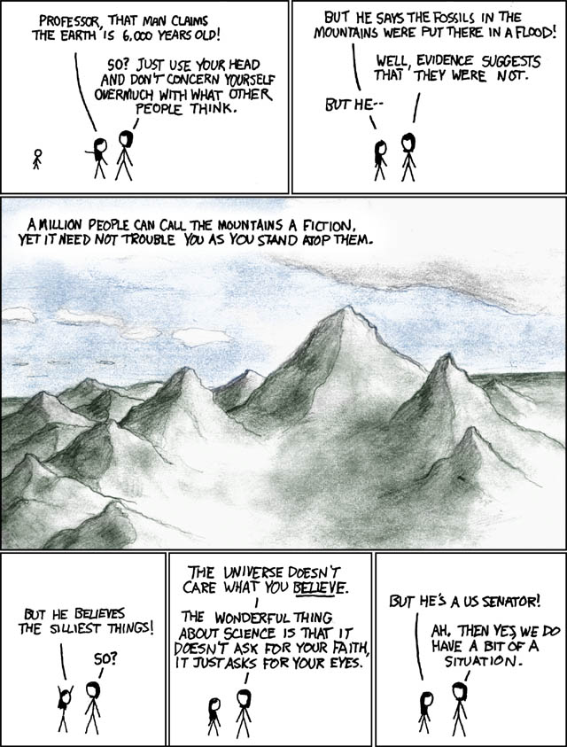

#12525 1 2006-11-29T02:36:02Z macaddict_17 Entropy and Causualty used as proof for God's Existence
We've already had some discussion on this, so I'll go ahead and talk about it.
Here's my explanation of this argument:
Those of us who believe the Universe exists can realize that the universe either had a beginning or it did not. If it didn't have a beginning, the universe must have existed for an infinite amount of time. There are two problems with this: The universe would have reached a state in which all usable energy is gone, and that 'the present' would not be happening, because it takes an infinite amount of time to get to any point on an infinite timeline, and you cannot cross an infinity. Therefore we know that the universe had a beginning.
The principle of causualty states that everything that had a beginning had a cause. This is a provable law of logic, not something you can just 'fluke' your way out of. The only way to deny the principle is to deny the existence of logic itself.
Therefore, the universe had a cause. But what about the existence of this cause? Lets call it Cause A. If Cause A had a cause, Cause B, then what caused Cause B? Etc. This is called an infinite regression of causes, an impossibility. Eventually you have to go back to
something that had no cause. This something would have therefore had no beginning and existed for an infinite amount of time.
But wait: wouldn't this thing have to be outside of space? (not interstellular space, but space as in "matter takes up space".) If it is inside space, it is part of the universe, and cannot have caused the universe. That would be like going back in time and fathering yourself: Its not possible. It is therefore outside space, and outside of time, because time and space are a continuum. (spelling?)
So we have a thing that has no beginning, it has just
been. We know it is outside of space and time, and that it must be greater than the universe. What could this be but God? What else is there that might have caused the world as we know it?
Note that I don't pick a particular god in this argument, I just prove that
a god exists.
Rather than criticising the link, try criticizing my argument instead.
#261329 2 2006-11-29T02:45:56Z KinGAleX You could construe that argument to say "What could this be but God?". It is much simpler and more obvious to say that hyperdimensional activity created the universe as we know it. Something outside of what we can perceive could pretty easily cause itself to exist, circularly, considering that the Principle of Causality is based on what we currently can perceive.
I do not discount that you could take that argument to be proof of a God; you could just choose something else for it to be a proof of, depending on how you look at it.
#261330 3 2006-11-29T02:49:24Z Guest The universe hasn't always existed. Here are just a few cites explaining.
Number 1
Number 2
Number 3
Number 4
Number 5#261333 4 2006-11-29T02:54:45Z macaddict_17 Obby, those deal with the universes age. While this is evidence that the universe had a beginning, it isn't proof. The proof is in the pudding of my argument above.
You could construe that argument to say "What could this be but God?". It is much simpler and more obvious to say that hyperdimensional activity created the universe as we know it. Something outside of what we can perceive could pretty easily cause itself to exist, circularly, considering that the Principle of Causality is based on what we currently can perceive.
What kind of hyperdimensional activity could come up with things like the behaviour of atoms?
#261338 5 2006-11-29T03:00:40Z KinGAleX ... It's hyperdimensional. We don't (and couldn't) have a clue.
#261391 6 2006-11-29T05:22:01Z Atilla What kind of hyperdimensional activity could come up with things like the behaviour of atoms?
What experience have you of hyperdimensional activity, that you can say what it can and cannot cause?
Also, from the other thread:
1. The laws of mathematics say otherwise. Consider the function y=e^(-t), where y is the available energy, t is time, and e is a constant. This function is monotonically decreasing; that is, the amount of available energy is always decreasing. The time from t = (-infinity) to t=0 is infinite, yes? But the value of y at t=0 is 1, a non-zero number. Therefore, there is still available energy, even though the function has been going for an infinite time.
Unphysical because y is infinite when t = -infinity, you say? Possibly. Instead, let us consider the function y = 1/t + 2. When t = -infinity, 1/t = 0 and y = 2. (ie the universe starts with a finite amount of available energy). There is an infinite time between t=-infinity and t=-1, and y decrease monotonically in this region. However, at t = -1, y=1. That is, there is still usable energy, even though we started with a finite amount of energy and an infinite amount of time has passed. Therefore it is possible for the universe to start with finite energy, exist for an infinite period, yet still have usable energy.
2. Flawed reasoning. A universe which has existed for an infinite time can be finite. Therefore, the fact that the universe is finite proves nothing.
3 is based on the previous two, which are both incorrect. Therefore, it is also flawed. Also, it contradicts 4.
4 contradicts 3. Also, 4a is stated without a supporting reason, and is demonstrably incorrect (see iangb's post). Not to mention that it speaks of size and duration, which are generally considered internal to the universe and as such would not have existed beforehand. If you can call it beforehand. 4c is based on the flawed reasoning of 4a. Even if 4a was correct, 4c would contradict the previous assertion that the universe is finite; if this is so, then the cause need only be larger than this finite size, and may thus be finite itself.
And, of course, there's the huge leap of faith in claiming that this cause is the Christian God, although at least the author has the grace to admit it.
#261437 7 2006-11-29T08:41:52Z DemonzLunchBreak You just got pwned by atilla.
#261440 8 2006-11-29T08:56:23Z Levinous ^...
I actually asked some of my teachers this in primary school (because I kept having to sing hymns that were constantly about God's awesomeness basically), but they were so stupid they couldn't even hear my voice when I was RIGHT BESIDE THEM. So I never got their opinion.
God, I hate primary school teachers.
*went off track a little*
#261455 9 2006-11-29T10:15:47Z Tsukatu 1. Religion does not move to the realm of proof... its impossible to demonstrate proof. I only try to demonstrate evidence.
This is, like, the only part of your post in that other thread that I actually ended up reading, and it caught my eye as I scrolled past your gibbering only because I saw this thread first.
Oh, and as for the question Obby hasn't answered:
The theory that the universe spontaneously began without any rhyme, reason, or apparent external cause is just as disprovable and just as logic-defying as the theory that another being that didn't need a cause created it. Why do you believe your theory over this one?
I suppose we can move on to why the hell you think this being is the Christian God, of all things, in a different thread.
To me, the fact that we have to say that a being that in and of itself had no cause had to create the universe is simply an argument to show why we are forced to admit that we have
no frickin' idea.
Have a parallel:
A cookie is found on my desk. This is odd, because my desk was under surveillance that we can say for the sake of argument was completely perfect. The popular theory is that an invisible, non-corporeal being entered the room somehow transporting the cookie, upon which it temporarily bestowed its invisible and non-corporeal properties.
Now, a
reasonable person would hear this theory and immediately throw it out because the premise is entirely absurd, unprovable speculation that's also devoid of any sort of rational thought. The
reasonable person would conclude that we don't know enough about the situation.
But
people like you (notedly distinct from the aforementioned group of people) use this as proof that the invisible, non-corporeal being existed.
People like you rush to conclusions. This is a God of the Gaps. It doesn't get more classic than this.
#261457 10 2006-11-29T10:19:29Z Kablizzy 1. Religion does not move to the realm of proof... its impossible to demonstrate proof. I only try to demonstrate evidence.
I... wait, doesn't it? Then... what's this title?
Quote
Proof of God?, No, seriously. Proof that God Exists.
#261468 11 2006-11-29T10:53:41Z blue_tetris 1. Religion does not move to the realm of proof... its impossible to demonstrate proof. I only try to demonstrate evidence.
I... wait, doesn't it? Then... what's this title?
Quote
Proof of God?, No, seriously. Proof that God Exists.
QFE.
I'm sure everyone of every religion and creed is clambering to switch to Christianity now that you've submitted incontrovertible proof. I suppose with all this proof,
faith becomes pretty unnecessary, huh?
#261605 12 2006-11-29T17:58:33Z brocerius The universe would have reached a state in which all usable energy is gone
Energy can be neither created nor destroyed. The fact that you specified 'usable' is irrelevant because everytime there is a big crunch followed by a big bang all the energy gets... sort of put back into easily usable packages.
If you subscribe to the 20-billion year heartbeat (or 80-billion year heatrbeat, no-one is exactly sure) theory then there is no reason why the universe could not have been here for eternety, and no reason why it could not stay here for an eternity to come.
Of course all these arguments are irrelevant since there is no way to prove definatly that the 20-billion year heartbeat, the big bang, god, cheese, our universe or anything, exists.
#261608 13 2006-11-29T18:04:40Z mascote_ponto Energy can be neither created nor destroyed.
That's not exactly true, I think...

#261612 14 2006-11-29T18:10:23Z ZZ9 I think it is.
#261623 15 2006-11-29T18:26:59Z Tsukatu The fact that you specified 'usable' is irrelevant because everytime there is a big crunch followed by a big bang all the energy gets... sort of put back into easily usable packages.
Yeah, man! I've seen it happen!
That's not exactly true, I think...
What're you, Jewish? Of course it's true.
The only way to "get rid" of energy is to change it into matter.
#261673 16 2006-11-29T19:49:15Z DemonzLunchBreak The fact that you specified 'usable' is irrelevant because everytime there is a big crunch followed by a big bang all the energy gets... sort of put back into easily usable packages.
Yeah, man! I've seen it happen!
That's not exactly true, I think...
What're you, Jewish? Of course it's true.
The only way to "get rid" of energy is to change it into matter.
It's one of the 'laws' of thermodynamics...
Anyways, the big crunch is one possible theory to support the whole big bang idea. While there is much evidence that the big bang is a valid theory, there is very little evidence to support the 'big crunch' Hypothesis. It's just a plausible explanation for how the big bang theory could be still be possible, while maintaining 'usuable' energy. Seems kinda like the god excuse to me...
#261675 17 2006-11-29T19:53:10Z ZZ9 How the heck is that a "God" explanation?
And IIRC, it's not the law of theremodynamics.
#261679 18 2006-11-29T19:57:03Z Rincewind SW ... It's hyperdimensional. We don't (and couldn't) have a clue.
I agree, completely. I almost started thinking 'What created the
creator?', but really, it's not something that we can begin to comprehend.
#261680 19 2006-11-29T19:57:16Z blue_tetris *sigh*
There's no way of proving that, in all cases, the universe maintains an equal amount of energy. It's predictable for all systems that we've studied, but there's a whole unvierse out there with all sorts of crazy-other physical reactions abounding. There are types of matter and energy which we have yet to fully understand.
Also, energy can be created... when matter is destroyed. Although most folks would call this conversion, I believe. For nearly all intents and purposes, though, brocerius is right. Energy doesn't get "used up". It gets used, yes. But it doesn't go away--it simply converts into a different sort of energy, or into matter. To destroy energy or matter would be quite the ordeal, demanding the inclusion of 12 dimensions, higher orders of reality, and, perhaps, a Bizarro world of some sort.
#261688 20 2006-11-29T20:20:10Z iangb Those of us who believe the Universe exists can realize that the universe either had a beginning or it did not. If it didn't have a beginning, the universe must have existed for an infinite amount of time. There are two problems with this: The universe would have reached a state in which all usable energy is gone, and that 'the present' would not be happening, because it takes an infinite amount of time to get to any point on an infinite timeline, and you cannot cross an infinity. Therefore we know that the universe had a beginning.
The current universe had a start, yes. Before that... we don't know. There could be the 'big crunch' scenario, or ther could simply be void - no space
or time.
The principle of causualty states that everything that had a beginning had a cause. This is a provable law of logic, not something you can just 'fluke' your way out of. The only way to deny the principle is to deny the existence of logic itself.
Quantum physics doesn't agree with you. According to quantum physics, matter or energy can breifly appear in very tiny quantities, without cause or predictability.
And to define the universe as having a 'beginning' is also fallacious, to a certain extent. If, 'before' the universe existed, there was no time, then the universe did not 'begin'. As soon as Time existed, the universe was there. And to speak about the start of time is illogical - for something to have a start it must have a before and an after, and Time has no 'before'.
Therefore, the universe had a cause. But what about the existence of this cause? Lets call it Cause A. If Cause A had a cause, Cause B, then what caused Cause B? Etc. This is called an infinite regression of causes, an impossibility. Eventually you have to go back to something that had no cause. This something would have therefore had no beginning and existed for an infinite amount of time.
As mentioned before, time 'started' (note the 'quotes') when the universe 'began', so nothing can have existed for an infinite amount of time. And it is possible that the universe has no 'beginning' either - see the big bang/big crunch theory.
But wait: wouldn't this thing have to be outside of space? (not interstellular space, but space as in "matter takes up space".) If it is inside space, it is part of the universe, and cannot have caused the universe. That would be like going back in time and fathering yourself: Its not possible. It is therefore outside space, and outside of time, because time and space are a continuum. (spelling?)
Unless time is a loop (a offset of the big bang/big crunch idea), then yes, your cause must exist 'outside' spacetime, because 'before' the universe there was neither space nor time. Or at least, it cannot exist in the spacetime dimensions that were created in the Big Bang. A consequence of string theory is that the Bang may have been created by 'branes' - 2-dimensional sheets - colliding in a higher dimension.
So we have a thing that has no beginning, it has just been. We know it is outside of space and time, and that it must be greater than the universe. What could this be but God? What else is there that might have caused the world as we know it?
Assuming you're right about the whole 'uncaused cause', one solution as mentioned would be extradimensional branes colliding. Other than that... *shrug*. The edges of possibilities are there, but we don't have the knowledge.
I think that's added some extra... dimensions (heh) to the arguments allready put forwards.
Oh, and on the 'energy cannot be created/destroyed' thingy... energy can be transferred to the form of matter, but that's it. The quantum wierdness I was talking about earlier applies, but the energy is only 'borrowed' from the universe - when particles are created they self-annihalate moments later and 'return' the energy. Sometimes the particles will be irrevocably seperated - for example by a black hole - and then the energy is 'returned' by the black hole itself - this means that over a huge period of time black holes evaporate as they lose energy to the universe.
#261725 21 2006-11-29T21:31:27Z Guest Oh, and as for the question Obby hasn't answered:
The theory that the universe spontaneously began without any rhyme, reason, or apparent external cause is just as disprovable and just as logic-defying as the theory that another being that didn't need a cause created it. Why do you believe your theory over this one?
Simple. Everything can't come from nothing.
#261733 22 2006-11-29T21:39:51Z Limer he may have existed, but all this crap about miracles and stuff, is just that. crap
#261734 23 2006-11-29T21:43:24Z macaddict_17 Quote
1. The laws of mathematics say otherwise. Consider the function y=e^(-t), where y is the available energy, t is time, and e is a constant. This function is monotonically decreasing; that is, the amount of available energy is always decreasing. The time from t = (-infinity) to t=0 is infinite, yes? But the value of y at t=0 is 1, a non-zero number. Therefore, there is still available energy, even though the function has been going for an infinite time.
I'll definitely admit that you are more advanced than me at math. Could you tell me why the equation for free energy is this? And what do I type into my calculator for the X1 equation, since you've given the Y1 equation. Or is it even a graph?
To me, if you think about this intuitively, though the amount of energy stayes constant, the amount of free energy continues to go down as you head towards infinity. Now, even if there is some free/usable energy left, it might not be in the right place at the right time. An infinite amount of time is surely enough time to strip the universe of all its high-energy chemical bonds, thus rendering life (whether from a creation or evolution standpoint) void.
Quote
2. Flawed reasoning. A universe which has existed for an infinite time can be finite. Therefore, the fact that the universe is finite proves nothing.
Yeah, I can see your point here. That is kinda why I didn't include it in my argument, just the link does. Ignore that part.
And... your answers to three and four... I dunno. Could you explain away my argument rather than the link? I understand my own creation better than CARM's.
The theory that the universe spontaneously began without any rhyme, reason, or apparent external cause is just as disprovable and just as logic-defying as the theory that another being that didn't need a cause created it.
Not quite true. The first theory you mentioned is disprovable by the Principle of Causualty. However, if you somehow have something that did exist for an infinite amount of time, or is
outside of time, the law does not apply, because only things which have a beginning have a cause. This is the only way to get around the principle. Since we know the universe did not exist to infinity, we know it had a beginning, therefore it had a cause. And we're right back to the beginning of my argument.
Have a parallel:
A cookie is found on my desk. This is odd, because my desk was under surveillance that we can say for the sake of argument was completely perfect. The popular theory is that an invisible, non-corporeal being entered the room somehow transporting the cookie, upon which it temporarily bestowed its invisible and non-corporeal properties.
Now, a reasonable person would hear this theory and immediately throw it out because the premise is entirely absurd, unprovable speculation that's also devoid of any sort of rational thought. The reasonable person would conclude that we don't know enough about the situation.
But people like you (notedly distinct from the aforementioned group of people) use this as proof that the invisible, non-corporeal being existed. People like you rush to conclusions. This is a God of the Gaps. It doesn't get more classic than this.
Your analogy is severly lacking. If it were to be similar, it would run something like this...
A cookie exists. It cannot have existed for eternity, because (somehow, the cookie would have to use energy to be comparable to the universe, but just because the analogy breaks down here...) the cookie would have crumbled into pieces (We'd have to say that this is a continual process, just like the use of energy is in our universe) and would no longer be a cookie, it would be crumbs. So the cookie had a beginning somehow. Did someone bake the cookie? Or did it form on its own?
AAUUUAUAUUAUAUGH! This is so stupid. I can't even
get your analogy even come close to making sense. The universe involves time and space and their beginnings. Comparing that to the moving of something that is inside both time and space is ritarded. Stop. Just stop. Its so nonsensical.
Quote
QUOTE (macaddict)
1. Religion does not move to the realm of proof... its impossible to demonstrate proof. I only try to demonstrate evidence.
I... wait, doesn't it? Then... what's this title?
QUOTE
Proof of God?, No, seriously. Proof that God Exists.
Ahhh... now wait a second. I'm not proving a religion. I am proving a worldview. (or to be perfectly accurate, disproving one). I'm not proving Christianity or Bhuddism, but instead proving Theism, which is a worldview and not a religion. (or to be accurate, disproving Atheism).
The reason why it is impossible to prove a religion is because then there is no faith needed. (Remember the definitions? from the other thread?) But who says we can't prove a worldview?
However, if you doubt the veracity of the argument, I can see how some might see it as only evidence, and not proof. But its fairly strong evidence IMHO.
I'm sure everyone of every religion and creed is clambering to switch to Christianity now that you've submitted incontrovertible proof. I suppose with all this proof, faith becomes pretty unnecessary, huh?
Again, its not proof for Christianity but for Non-Atheism, which could be Theism, Deism, Pantheism, etc.
Quote
QUOTE
The universe would have reached a state in which all usable energy is gone
Energy can be neither created nor destroyed. The fact that you specified 'usable' is irrelevant because everytime there is a big crunch followed by a big bang all the energy gets... sort of put back into easily usable packages.
Total energy, but not
usable energy. Thats where entropy and the second law comes in, because all usable energy is being converted to unuseable energy of heat, a classic entropy example.
"...sort of put back into easily usable packages..."
Pshaw. And what energy are we going to use to do that? Keep in mind the total amount of unusable energy always goes up in every single action.
Quote
QUOTE (mascote_ponto)
That's not exactly true, I think...
What're you, Jewish? Of course it's true.
The only way to "get rid" of energy is to change it into matter.
Exactly. That is what happens in our sun, only in reverse. Hydrogen and Helium are so crushed they turn into light energy.
The current universe had a start, yes. Before that... we don't know. There could be the 'big crunch' scenario, or ther could simply be void - no space or time.
You aren't answering the question of "What caused the universe's beginning" since
everything which had a beginning had a cause. It cannot be nothing, that much we know.
Quantum physics doesn't agree with you. According to quantum physics, matter or energy can breifly appear in very tiny quantities, without cause or predictability.
Ahh, Quantum physics. The least understood and most unreliable of the sciences. Might want to wait until we're more sure of that theory. It is possible that we just haven't discovered the predictability yet. We just don't know about that right now. For all practical purposes, the principle of causualty is true.
And to define the universe as having a 'beginning' is also fallacious, to a certain extent. If, 'before' the universe existed, there was no time, then the universe did not 'begin'. As soon as Time existed, the universe was there. And to speak about the start of time is illogical - for something to have a start it must have a before and an after, and Time has no 'before'.
No, there was time, just no universe. Ever heard the theory about how space and time converged onto a point? There would be no universe, but space and time are still there.
Assuming you're right about the whole 'uncaused cause', one solution as mentioned would be extradimensional branes colliding. Other than that... *shrug*. The edges of possibilities are there, but we don't have the knowledge.
Thats ok as far as a theory, but what then set the branes in motion? Did the branes have a beginning?
Also, can someone define a brane? Without using Wikipedia? I just want to be clear.
#261735 24 2006-11-29T21:46:20Z AMomentLikeThis Ignore this post, sorry.
#261738 25 2006-11-29T21:53:53Z Topolord Well, I should have posted here already, the arguments already been basically destroyed.
QUOTE (Tsukatu @ November 29, 2006 06:15 am)
Oh, and as for the question Obby hasn't answered:
The theory that the universe spontaneously began without any rhyme, reason, or apparent external cause is just as disprovable and just as logic-defying as the theory that another being that didn't need a cause created it. Why do you believe your theory over this one?
Simple. Everything can't come from nothing.
exactly, which is why many more provable theories exist, such as the big bang.
EDIT: Yay, new arguments!
A cookie exists. It cannot have existed for eternity, because (somehow, the cookie would have to use energy to be comparable to the universe, but just because the analogy breaks down here...) the cookie would have crumbled into pieces (We'd have to say that this is a continual process, just like the use of energy is in our universe) and would no longer be a cookie, it would be crumbs. So the cookie had a beginning somehow. Did someone bake the cookie? Or did it form on its own?
Total energy, but not usable energy. Thats where entropy and the second law comes in, because all usable energy is being converted to unuseable energy of heat, a classic entropy example.
you're basically just ignoring other people's posts. in an infinite space, no energy leaves or is destroyed, there is always the same amount of energy. the unusable energy thing doesn't make sense because it will eventually be converted back to usable. I think, i'm not sure. anyway, that's probably the point of the cyclic argument.
#261746 26 2006-11-29T22:08:51Z scythe33 Quote
1. The laws of mathematics say otherwise. Consider the function y=e^(-t), where y is the available energy, t is time, and e is a constant. This function is monotonically decreasing; that is, the amount of available energy is always decreasing. The time from t = (-infinity) to t=0 is infinite, yes? But the value of y at t=0 is 1, a non-zero number. Therefore, there is still available energy, even though the function has been going for an infinite time.
I'll definitely admit that you are more advanced than me at math. Could you tell me why the equation for free energy is this? And what do I type into my calculator for the X1 equation, since you've given the Y1 equation. Or is it even a graph?
The burden of proof isn't on him for that one. It's on you.
Why? You're stating that the function has to reach zero if it is constantly decreasing. He's stating that there are counterexamples. Since you want to prove that it has to reach zero, you have to prove that it is not a counterexample. Until you do that, it might be one of the counterexamples, and since your result may be false, you haven't proven it.
Oh, and free energy is a scalar, not a vector. Change to rectangular coordinates and graph y as a function of x.#261749 27 2006-11-29T22:15:40Z iangb Ahh, Quantum physics. The least understood and most unreliable of the sciences. Might want to wait until we're more sure of that theory. It is possible that we just haven't discovered the predictability yet. We just don't know about that right now. For all practical purposes, the principle of causualty is true.
...
No, there was time, just no universe. Ever heard the theory about how space and time converged onto a point? There would be no universe, but space and time are still there.
OK. Before we go any further,
please learn some physics, and about what science says the Big Bang was. Space and time are the same thing - spacetime. When the Big Bang occured, spacetime was created - not just matter but space and time for matter
to be matter in. Before the Bang, there was literally nothing - a total absence of spacetime. Unless the Big Crunch theory is correct and spacetime was 'scrunched up' into the possibly-singularity that existed at the 'start' of our universe.
As for quantum... it works, we know it works, we can prove that it works. Spontanious particle creation has been observed. Quantum is still the most
misunderstood scientific phenomena, because it doesn't have an easy mental image accompanying it in the same way that relativity an be explained by shooting a gun from a moving car. But it isn't by any means the mos unreliable. The only problem with quantum is that it is inconsistent, on a very specific scale, with relativity - in a way that I won't go into because you won't understand because you don't appear to know the concept of spacetime yet. String theory is looking to be the likely solution, but it is a mathematical theory only, and has never been observationally proven. The maths works, but it has yet to be observed.
As for branes - they are, as I said, 2-dimensional sheets. You need to know a lot more about string theory first, though - I suggest reading "The Elegant Universe", by Brian Greene for an excellent easy-to-understand guide.
I'll definitely admit that you are more advanced than me at math. Could you tell me why the equation for free energy is this? And what do I type into my calculator for the X1 equation, since you've given the Y1 equation. Or is it even a graph?
The very fact that you don't know about the existence of exponentials/basic graphing techniques really doesn't support your case, either. If you want to graph y=e^(-t), take t as your x value and y as your y value. You'll get a curve that starts at 1 and decreaces, rapidly at first and then slower later. It'll never get to y=0, not matter how fast you go.
Total energy, but not usable energy. Thats where entropy and the second law comes in, because all usable energy is being converted to unuseable energy of heat, a classic entropy example.
"...sort of put back into easily usable packages..."
Pshaw. And what energy are we going to use to do that? Keep in mind the total amount of unusable energy always goes up in every single action.
I hate to keep saying this, but learn some physics. If the big crunch/big bang was to happen in the future, then thermodynamics would be reset from the start - equivallently the same as the Big Bang.
[Ahhh... now wait a second. I'm not proving a religion. I am proving a worldview. (or to be perfectly accurate, disproving one). I'm not proving Christianity or Bhuddism, but instead proving Theism, which is a worldview and not a religion. (or to be accurate, disproving Atheism).
No physics mentioned in here, phew. But a bit of a semantics nightmare. Theism is religion, religion is theism, and both of them are worldviews.
And if you are only 'disproving' atheism (which you've failed to do, incidentally), why the hell did you call this topic 'proof that God exists'?
#261756 28 2006-11-29T22:28:46Z blue_tetris Modern physics describes that all events require causation, however not all causations must come "before" another event. Time is just another dimension. In modern physics, saying that a causation must come "before" an event is equivalent to saying that a causation must come "to the left of" an event. Simply absurd.
Branes are situated on a dimension above space and time. Because branes are uninfluenced by and can operate wholly beyond the scope of our four dimensions; they can apply causation to reality without consideration to the point in space or time at which the event takes place. Which means, a term like "always" or "never" simply doesn't make sense on that higher dimension. In string theory, branes haven't always existed. They simply exist. To wrap your mind around the concept of branes (and string theory in general), you have to envision a timeless set of dimensions which "observe" or "act upon" (with a sort of hierarchy) the set of dimensions we perceive. The concept of time, which is just another dimension, is applied to all our existing laws (as much as any other physical dimension), so it's hard for us to interpret a world without that dimension. More difficult still would be to understand a world with more dimensions with different physical properties than the ones we currently know. However, string theory (and religion for that matter) tries to define things which currently exist beyond the rules and dimensions that we perceive.
*gasp*
Furthermore, branes are like... the rule-makers. The activity of the branes acts upon reality without consideration of time or space. The activity of branes creates the dimensions that we have. Were a brane to shift or change, the logic of the four dimensions which we reside in would become totally different. There may not even be mass or volume in another four-dimensional reality governed by a different brane. The brane is, for all intents and purposes, the whole of physics. According to string theory, branes are bundles of strings, which are conceptual entities composed of our natural laws, which "vibrate" to dictate the order of the universe.
Branes are much like gods. Because they exist on a higher dimension, they needn't obey the typical rules of causation. You can say that God does not need a causation--and demonstrate this by implying he's on another dimension beyond time (or exists without time). Branes, too, "break" the natural and observable laws of physics and allow for the causation of events beyond the scope of a timeline. I use "break" loosely in this instance to mean something more along the lines of "govern". The concept of a physical system (just like all the other physical systems that we have observed) which regulates aspects of the physical cosmos beyond the scope of time is becoming more and more acceptable to the scientific community.
At least more acceptable than, say, a magical and bearded system which chooses to break natural laws.
#261770 29 2006-11-29T23:14:28Z Tsukatu Not quite true. The first theory you mentioned is disprovable by the Principle of Causualty. However, if you somehow have something that did exist for an infinite amount of time, or is outside of time, the law does not apply, because only things which have a beginning have a cause. This is the only way to get around the principle. Since we know the universe did not exist to infinity, we know it had a beginning, therefore it had a cause. And we're right back to the beginning of my argument.
Very well then, I propose that the universe existed outside of the natural universe, and at one point abrubtly moved into it, creating the Big Bang for reasons that I doubt we'll understand for the rest of mankind's existence (though with the advancement of science we'll get steadily closer).
I can invent any number of similar theories, all of which are just as disprovable as an omnipotent being creating the universe, and just as logical (which is to say not at all).
Your analogy is severly lacking. If it were to be similar, it would run something like this...
A cookie exists. It cannot have existed for eternity, because (somehow, the cookie would have to use energy to be comparable to the universe, but just because the analogy breaks down here...) the cookie would have crumbled into pieces (We'd have to say that this is a continual process, just like the use of energy is in our universe) and would no longer be a cookie, it would be crumbs. So the cookie had a beginning somehow. Did someone bake the cookie? Or did it form on its own?
AAUUUAUAUUAUAUGH! This is so stupid. I can't even get your analogy even come close to making sense.
When I'm in a similar sort of pickle, I find that actually
trying can sometimes help.
Your meticulous investigation of the cookie's origin is entirely irrelevant. The only thing I need to establish the point I'm making is that the cookie didn't exist at one point, and started to exist the next. Your foolishness is unnecessary because we already have the requirement that the cookie started to exist.
The universe involves time and space and their beginnings. Comparing that to the moving of something that is inside both time and space is ritarded. Stop. Just stop. Its so nonsensical.
It has no bloody conflict with time and space, you tard. There is only one space in which the cookie can exist, which is the space that didn't exist before it began to exist. We're also looking at the example as though time began the moment the cookie began to exist.
You're really quite bad at this.
Heh, and you got frustrated because you couldn't twist it to work for you.
Quote: macaddict
[I'm disproving Atheism.]
This makes me want to throw hammers at you.
There is nothing to Atheism that can be dispr- gaaaaahh.
Are you not familiar at all with the prefix "a-"? The definition of atheism?
Did you know that "atheism" does not mean, "belief that God does not exist?"
I'm fine with you saying that you're attempting to prove theism, but you really would have been better off stopping there.
You've brought the Bible into a rational discussion, you've failed to remember who has the Burden of Proof, and now you show flagrant ignorance of the definition of Atheism. If I hadn't seen you gibber for bloody novels back at relig.6, I'd think you'd never argued religion before in your life.
Stop making these silly mistakes. Get your shit together.
The reason why it is impossible to prove a religion is because then there is no faith needed. (Remember the definitions? from the other thread?) But who says we can't prove a worldview?
It would be at this point that I would challenge "theism" as an example of a "worldview."
In all honesty, I don't see why you'd bother to separate "religion" and "worldview." It seems that you only distinguish the two so that you can call atheism a worldview, after which you can sneak in the notion that theism is a worldview so that you can go about proving such a blatantly religious sentiment that God exists.
Theism is religion. Atheism is lack of religion. It's a single binary characteristic, not two distinct ones.
you're basically just ignoring other people's posts.
QFE
(That's "quoted for emphasis.")
*fights the urge to change the thread title to "Everyone Jumps On macaddict For Postulating A Magical, Bearded Origin Of The Universe"*
#261788 30 2006-11-29T23:32:45Z Guest he may have existed, but all this crap about miracles and stuff, is just that. crap
You have no idea what you are talking about. So just stop talking. Next time you attempt this stuff, try to actually give reasons and supporting facts. It might help you to not sound like an ass.
#261834 31 2006-11-30T01:20:44Z Atilla @macaddict: X1 and Y1? You're using parametric form. You should be using functional form. Hit mode and select "Func" instead of "Par", assuming you're using a TI-83 or similar. The put Y1 = e^(-x). Note that although y decreases forever, it never actually reaches 0.
Now for the slightly more complicated on. Change Y1 to (1/X) + 2. Look at the graph. Remember that we are only considering the domain X < -0.5. Now, you should see that the graph has a horizontal asymptote at Y=2, that is, as X gets more negative, Y approaches (but never reaches) 2. To phrase this another way, the limit of Y as X -> -infinity is 2.
Now. Where we actually draw the origin is rather arbitrary; the laws of physics are still the same regardless of where we put it. We can consider, then, that -infinity is the 'beginning' of the universe, which comes with an initial 2 units of usable energy (ie Y=2). As time passes (ie. X becomes less negative), Y decreases. Now, the point X=-1 is an infinite distance from -infinity (the start of the universe), right? Look at the graph (or just substitute it into the equation). You should get Y=1 - that is, there is
still usable energy left, even though we started off with a finite amount and our model of the universe has been going for an infinite time. This demonstrates that it
is possible to start with some finite amount of energy, keep decreasing it for an infinite time, and still have some left. It's somewhat like Zeno's most well-known 'paradox' (the one with Achilles and the tortoise, you recall) - an infinite sum can give a finite result. In this case, it is the sum of energy lost over an infinite period of time rather than the distance traveled over an infinite number of intervals.
Why is this the equation for usable energy? It's not, necessarily... but it
could be. As scythe said:
You're stating that the function has to reach zero if it is constantly decreasing. He's stating that there are counterexamples. Since you want to prove that it has to reach zero, you have to prove that it is not a counterexample. Until you do that, it might be one of the counterexamples, and since your result may be false, you haven't proven it.
Thats ok as far as a theory, but what then set the branes in motion? Did the branes have a beginning?
According to your own logic, extradimensional branes wouldn't need a beginning because they're outside the universe.
As for the rest, I suggest you listen to iangb.
#261836 32 2006-11-30T01:29:46Z macaddict_17 You're stating that the function has to reach zero if it is constantly decreasing. He's stating that there are counterexamples. Since you want to prove that it has to reach zero, you have to prove that it is not a counterexample. Until you do that, it might be one of the counterexamples, and since your result may be false, you haven't proven it.
I do not in fact think that it needs to reach zero, though I may have appeared to say that in the past. Here, I'll rearrange my argument: In order for life to exist, a certain amount of usable energy needs to exist. For example, you wouldn't expect a plant to live off of a single molecule of glucose and several photons, would you? As also previously stated, by the 2nd Law of Thermodynamics, the total amount of usable energy in a system always,
always goes down in any given event. No matter how little energy is lost as heat energy, there is always some. Now if you take the average amount of energy lost per (unit of time) and take that for an infinity of (unit of time), it will be lower than the amount of energy needed for life. Now, this current model excludes the exchange of matter into energy, I realize that. I'll get to that later.
The very fact that you don't know about the existence of exponentials/basic graphing techniques really doesn't support your case, either. If you want to graph y=e^(-t), take t as your x value and y as your y value. You'll get a curve that starts at 1 and decreaces, rapidly at first and then slower later. It'll never get to y=0, not matter how fast you go.
Sorry, I hit a mental block: We just did parametric equations, and somehow I thought that 't' meant it was parametric. I'm not sure why I thought that, but I got it now. Never mind.
I hate to keep saying this, but learn some physics. If the big crunch/big bang was to happen in the future, then thermodynamics would be reset from the start - equivallently the same as the Big Bang.
Ok, I get it. Unless I want to now argue against the Big Bang theory, which I doubt my ability to do, it might be possible to convert heat energy, the kind which is lost in most if not all events due to thermodynamics, into other types of energy. I had been under the impression that this was impossible. I guess I don't know enough about this to say that for certain.
However, the Big Bang theory is not really a testable/observable theory. Nobody saw it happen, nobody can see it happen. But anyway...
No physics mentioned in here, phew. But a bit of a semantics nightmare. Theism is religion, religion is theism, and both of them are worldviews.
And if you are only 'disproving' atheism (which you've failed to do, incidentally), why the hell did you call this topic 'proof that God exists'?
Theism is religion. Atheism is lack of religion. It's a single binary characteristic, not two distinct ones.
Theism does not choose a particular God. Christianity does. Christianity is a religion. Theism is a worldview.
Because I agree that Atheism is the lack of religion, I cannot call it a religion. However, it is a philosophy, like Theism. That is the essence of a worldview, a philosophy.
As for the disproving of atheism...
I'd need to prove these first two premises to prove the conclusion:
Atheism is the belief that there is no God
The belief that there is no God is false
Therefore Atheism is false
Surely we agree on the first one, and the second one is what we are debating. The reason why I shouldn't call it proving Theism is because Theism is not really the opposite of Atheism. Theism says there is a God, but so does Deism. They just disagree about God's nature. I am however attempting to prove God's existence, which doesn't fit into either Deism or Theism per se.
Furthermore, branes are like... the rule-makers. The activity of the branes acts upon reality without consideration of time or space. The activity of branes creates the dimensions that we have. Were a brane to shift or change, the logic of the four dimensions which we reside in would become totally different.
Thank you, B_T. I get it now, mostly. My friend tells me that he read a theory that God (the Christian God) is a brane, or maybe he said he existed 'in' or 'on' a brane, or something.
But
can we agree that if there is a God, He would have had to have just been, like a brane just is?
Your meticulous investigation of the cookie's origin is entirely irrelevant. The only thing I need to establish the point I'm making is that the cookie didn't exist at one point, and started to exist the next.
My point is that there are way too many differences between a cookie beginning to exist at a certain time and place and a universe beginning to exist, in essence
starting time and space, or at least space.
If it is a given that the cookie arbitrarily appeared from nothing, then which makes more sense: Someone somehow created the cookie in that place, or it just appeared for no reason at all? The law of Causualty says that the first theory is the only reasonable one. However, if it is not a given that the cookie appeared from nothing, aka, perhaps someone fed the camera a loop feed, then of course it is stupid to think someone who cannot be seen created it. If it were possible to, like, teleport the universe into time and space, and if it were possible to teleport the cookie into the room, then I'd probably choose that one. But its not possible.
I thought of one new argument: Its for iangb.
Infinite speed of expansion is not possible. Why? Look at the mathematical equivalent for rate. Distance over time. So that would be y=((infinity)/(t))x where t is any unit of time. But infinity is not a number, so you can't use it in an equation. You can't cross an infinity. (correct me if I'm wrong again!). You can't go an infinite distance because it would take an infinite amount of time, and you'd have to start at some point in time. But of course, you know that. So how is infinite speed possible?
And another thing: If the universe has infinite size, then the big crunch can't really happen. Again, I may be wrong, but this sounds right to me. Help me out.
Why has no one addressed my second reason why the universe had a beginning?
'the present' would not be happening, because it takes an infinite amount of time to get to any point on an infinite timeline, and you cannot cross an infinity.
Oh, Atilla, you posted while I was typing. Hang on...
According to your own logic, extradimensional branes wouldn't need a beginning because they're outside the universe.
Ok, I get that. But isn't it just kindof a freaky coincidence that once again, the Christian faith does not have to change to stay scientific? Apparently, the Jews who "made up" Christianity knew the concept of brane theory, because they never said God had a beginning, instead saying that he just is.
#261850 33 2006-11-30T02:03:07Z iangb Atheism is the belief that there is no God
Did you know that "atheism" does not mean, "belief that God does not exist?"
Perfectly pre-empted by Tsukatu for me. Theism is beleif in a god. Atheism is lack of beleif in a god. Antitheism is beleif in the lack of a god. You aren't arguing against atheism - you're arguing against antitheism.
The belief that there is no God is false
It may or may not be false. It is faith that is verging on blind faith, but it doesn't have to be false.
Quote
therefore atheism is false
No, as point one is thorougly trashed and part two isn't provable.
Infinite speed of expansion is not possible. Why? Look at the mathematical equivalent for rate. Distance over time. So that would be y=((infinity)/(t))x where t is any unit of time. But infinity is not a number, so you can't use it in an equation. You can't cross an infinity. (correct me if I'm wrong again!). You can't go an infinite distance because it would take an infinite amount of time, and you'd have to start at some point in time. But of course, you know that. So how is infinite speed possible?
And another thing: If the universe has infinite size, then the big crunch can't really happen. Again, I may be wrong, but this sounds right to me. Help me out.
Special relativity - anything travelling at the speed of light experiences no passage of time. So the universe could have been expanding at the speed of light for an unknown and unknowable length of time.
With the infinite universe/big crunch thing... there are mathematical formulas that encompass both infinity and 0. We don't know which one of them the universe might be following - for example if it was following the formula |tan(t)| then it would start at size 0, expand upwards to be an infinite size for an instant and then shrink back to 0, and repeat the cycle. There is no evidence to support that it follows that path, but then there is no evidence to support any path, other han that it is currently expanding and that it's expansion is (for some unknown reason) speeding up.
Ok, I get that. But isn't it just kindof a freaky coincidence that once again, the Christian faith does not have to change to stay scientific? Apparently, the Jews who "made up" Christianity knew the concept of brane theory, because they never said God had a beginning, instead saying that he just is.
Not really. Every faith, then, must be sharing the same coincidence, for one thing. For another if God is a brane - essentially a very high-energy elemental particle stretched over two dimensions - then Christianity was dead wrong on matters of, for example, personality. Finally, Christianity isn't staying consistant. As science discovers more about the universe (the earth goes around the sun, the earth was created more than 10,000 years ago, etc), Christianity is having to re-evaluate it's ideas to present them in a 'modern' context. So far, it has managed it, with a few major shifts in church teachings. That just shows that Christianity is adaptive and versatile, just like any other popular long-lasting social meme (eg democracy).
#261858 34 2006-11-30T02:27:01Z Exüberance The theory of evolution is very very very easy to disprove. Many non-Christians know that evolution cannot work, but they won't accept it.
Here's a few things wrong with it:
1. The theory of evolution is "explained" with the laws of physics. Well, then, Who created the laws of physics? They couldn't just exist.
2. Even if they did, the big bang had to happen at some point in time after the beginning of the universe, but in that case the beginning of the universe is infinitely back in time, therefore the big bang cannot have happened an amount of time after negative infinity, therefore time cannot exist as it now does, and the whole thing falls apart.
3. The only something could have always existed is that time was created, which is impossible by the laws of physics, therefore God had to have created the time and the laws of physics.
If you still don't believe, look up 'Pascal's Wager' and then see what you think.
*essay over*

#261863 35 2006-11-30T02:37:12Z McP3000 Exuberance, your on the right track of MacAddict's points, but you're missing a few details. I dont feel like going through them, but either your points are incoherent or they should be worded better.
#261868 36 2006-11-30T02:42:28Z Exüberance meh, I didn't proofread it.
Christianity shouldn't be super-obvious to everyone, otherwise there would be no faith.
If you want proof, look around. It's everywhere. It's in nature. It's in God's Word. It's in fellow believers.
#261872 37 2006-11-30T02:46:29Z iangb Dammit! I wrote an argument and then hit the wrong button, and now Atilla's going to beat me to it.
EDIT: Oooh, he didn't. Woo, I guess.
1. The theory of evolution is "explained" with the laws of physics. Well, then, Who created the laws of physics? They couldn't just exist.
Simply put: why not? Emergent systems have been observed to create their own rules, and the universe is a pretty enormous emergant system. And even if God did create 'physics', this doesn't disprove evolution, it just shows that God put evolution into motion.
2. Even if they did, the big bang had to happen at some point in time after the beginning of the universe, but in that case the beginning of the universe is infinitely back in time, therefore the big bang cannot have happened an amount of time after negative infinity, therefore time cannot exist as it now does, and the whole thing falls apart.
3. The only something could have always existed is that time was created, which is impossible by the laws of physics, therefore God had to have created the time and the laws of physics.
Firstly, this has nothing to do with evolution.
Secondly, I'm going to say it again. Learn some physics. Specifically about the nature of spacetime and how it came into existance at the same moment as the Big Bang occured. Before the bang, there wasn't 'negative' time or anything silly like that. There was just... dimensionless void.
If you still don't believe, look up 'Pascal's Wager' and then see what you think.
Again, nothing to do with evolution. And pascals wager has been drilled into the ground repeatedly. There are many mutually exclusive religions - if I beleive in God I might end up in heaven, or I might end up in Hades, or Tarterus, or the Underworld. Should I aim for heaven, nirvana, valhalla, or the stripper factory and beer volcano?
And to reply to exuberance's latest post: Faith is where you find it, and you can find it anywhere.Proof, however, is much harder, and, as such, is non-existant.
A 'god of the gaps' who convienantly explains all that we have yet to understand does not appeal to me.
#261881 38 2006-11-30T02:51:49Z Exüberance Firstly, this has nothing to do with evolution.
Secondly, I'm going to say it again. Learn some physics. Specifically about the nature of spacetime and how it came into existance at the same moment as the Big Bang occured. Before the bang, there wasn't 'negative' time or anything silly like that. There was just... dimensionless void.
Negative time????? Huh? Who said anything about-?
I meant relative to now.
Besides, would you rather have faith in a Savior or in... nothing.
Also, I believe your perception of faith is... flawed...
And, what is the point of converting someone from Christianity to Peganism? I'm not saying you are doing that, but again- Pascal's Wager.
#261887 39 2006-11-30T02:57:17Z iangb And I was talking about this:
therefore the big bang cannot have happened an amount of time after negative infinity
Maybe I misunderstood it, or it was misworded, or both. For conveniance I will explain the Big Bang.
'Before' the big bang... doesn't make sense. All spatial and temporal dimension were created in the same instant as the Big Bang occured, so there wasn't a 'before' before the Bang. It's very hard to imagine void without space or time, but that's what it was. So your argument falls through.
Besides, would you rather have faith in a Savior or in... nothing.
Also, I believe your perception of faith is... flawed...
I would rather have faith in myself.
What do you define as faith? Technically it is the beleif in something which cannot be proven, such as God, love, 'justice', morality. I would say I had faith in all of those apart from in God.
And, what is the point of converting someone from Christianity to Peganism? I'm not saying you are doing that, but again- Pascal's Wager.
Hmm? Pascals wager is bogus, as I just showed. Paganism is as equally likely to be correct as Christianity.
#261890 40 2006-11-30T03:00:44Z Exüberance I would rather have faith in myself.
And I was talking about this: therefore the big bang cannot have happened an amount of time after negative infinity
Maybe I misunderstood it, or it was misworded, or both. For conveniance I will explain the Big Bang.
'Before' the big bang... doesn't make sense. All spatial and temporal dimension were created in the same instant as the Big Bang occured, so there wasn't a 'before' before the Bang. It's very hard to imagine void without space or time, but that's what it was. So your argument falls through.
So you would rather have faith in yourself to get you out of hard times? I would rather have faith in the Truth, in the Lord.
And there is no such thing as before time, because 'before' is a comparison of time, and is therefore meaningless and irrelevant when used outside of time.
And Pascal's wager makes perfect sense and is very wise. The only possible negative affect, is persecution because of faith, which is insignificant since we will live forever on with Christ. Of course, this is not meant to convert people, because a true Christian is 100% sure of his/her faith. Of course I sometimes doubt my belief, but when I look back on it later, I see how stupid my doubting was.
#261893 41 2006-11-30T03:03:05Z Topolord Firstly, this has nothing to do with evolution.
Secondly, I'm going to say it again. Learn some physics. Specifically about the nature of spacetime and how it came into existance at the same moment as the Big Bang occured. Before the bang, there wasn't 'negative' time or anything silly like that. There was just... dimensionless void.
Negative time????? Huh? Who said anything about-?
I meant relative to now.
Besides, would you rather have faith in a Savior or in... nothing.
Also, I believe your perception of faith is... flawed...
And, what is the point of converting someone from Christianity to Peganism? I'm not saying you are doing that, but again- Pascal's Wager.
first of all:

second, the basic problem with pascal's wager, is that if you actually do not believe there is a god, you have nothing to worry about. The dilemma only makes sense from a religious perspective.
third,
So you would rather have faith in yourself to get you out of hard times? I would rather have faith in the Truth, in the Lord.
are you trying to convert someone?
and lastly:
#261897 42 2006-11-30T03:05:56Z McP3000 I would rather have faith in myself.
And I was talking about this: therefore the big bang cannot have happened an amount of time after negative infinity
Maybe I misunderstood it, or it was misworded, or both. For conveniance I will explain the Big Bang.
'Before' the big bang... doesn't make sense. All spatial and temporal dimension were created in the same instant as the Big Bang occured, so there wasn't a 'before' before the Bang. It's very hard to imagine void without space or time, but that's what it was. So your argument falls through.
So you would rather have faith in yourself to get you out of hard times? I would rather have faith in the Truth, in the Lord.
And there is no such thing as before time, because 'before' is a comparison of time, and is therefore meaningless and irrelevant when used outside of time.
And Pascal's wager makes perfect sense and is very wise. The only possible negative affect, is persecution because of faith, which is insignificant since we will live forever on with Christ. Of course, this is not meant to convert people, because a true Christian is 100% sure of his/her faith. Of course I sometimes doubt my belief, but when I look back on it later, I see how stupid my doubting was.
Im just going to say that true Christians, even the pope, question their faith. It is natural and humane to do so.
#261898 43 2006-11-30T03:05:57Z iangb So you would rather have faith in yourself to get you out of hard times? I would rather have faith in the Truth, in the Lord.
And when/if that 'truth' fails you? There has been no (scientific) evidence of God's intervention in human affairs, ever. Why should God change for you?
And there is no such thing as before time, because 'before' is a comparison of time, and is therefore meaningless and irrelevant when used outside of time.
That's my point. Because time came into being at the moment of the Big Bang, you cannot say (as you just did ) "the big bang had to happen at some point in time after the beginning of the universe"
And Pascal's wager makes perfect sense and is very wise. The only possible negative affect, is persecution because of faith, which is insignificant since we will live forever on with Christ. Of course, this is not meant to convert people, because a true Christian is 100% sure of his/her faith. Of course I sometimes doubt my belief, but when I look back on it later, I see how stupid my doubting was.
What if Hinduism is true? Then you would end up in Hell for beleiving in that false religion called Christianity. The problem for Pascals Warger is that it is equally valid for all religions.
#261900 44 2006-11-30T03:07:16Z Exüberance To clarify, this is Pascal's Wager:
If I believe in God, and He is real, then I have eternal life with Him.
If I believe in God, and He doesn't exist, then... well... nothing.
If I don't believe, and He doesn't exits, then same as above.
If I don't believe, but He is real, then you spend eternity separated from God.
Therefore the worst scenario if I believe in God is the best scenario if I don't.
And, of course
lol
#261901 45 2006-11-30T03:09:12Z Guest Of course I sometimes doubt my belief, but when I look back on it later, I see how stupid my doubting was.
"Doubt is part of all religion. All the religious thinkers were doubters." - Isaac Bashevis Singer
#261902 46 2006-11-30T03:10:21Z Exüberance So you would rather have faith in yourself to get you out of hard times? I would rather have faith in the Truth, in the Lord.
And when/if that 'truth' fails you? There has been no (scientific) evidence of God's intervention in human affairs, ever. Why should God change for you?
And there is no such thing as before time, because 'before' is a comparison of time, and is therefore meaningless and irrelevant when used outside of time.
That's my point. Because time came into being at the moment of the Big Bang, you cannot say (as you just did ) "the big bang had to happen at some point in time after the beginning of the universe"
There is also no scientific evidence that science exists

Wait... that didn't come out right...
What I meant was that science is a thing that was either created or just "always" existed. (I put 'always' in quotes to avoid a debate over the meaning of time)
You cannot explain why time exists using science.
You cannot explain why we exist (not our body, but actually us) using science
You cannot explain why science itself exists.
I'm not putting my faith in that.
And with that, I'm going offline
#261903 47 2006-11-30T03:10:33Z iangb On the Wager:
There is a fifth scenario. If I beleive in God and actually Grishna and Kali are real then I end up in Hindu hell, instead of a Christian Heaven.
Or maybe I become a Hindu, but Christianity is real, so I end up with Lucifer for eternity.
On science:
Look at the scientist's explanation for Time. "We know that it is a dimension through which objects travel at a speed related to their physical speed in the three standard dimensions. We don't know why it flows, but we're thinking about it"
Look at your explanation for time flowing, or for anything you don't understand: "God did it. I don't care how."
Science explains a helluva lot of how things work. Religion explains none of it, just a cop-out clause for that which is not yet understood. I'd rather not put my faith in a God of the Gaps.
On a related topic, you don't quite understand what 'science' is. Science is a method by which we look at the observable world and try to work out what makes it go. Science is... oh, just read
Atilla's awesome definition on the subject.
#261907 48 2006-11-30T03:12:30Z Topolord To clarify, this is Pascal's Wager:
If I believe in God, and He is real, then I have eternal life with Him.
If I believe in God, and He doesn't exist, then... well... nothing.
If I don't believe, and He doesn't exits, then same as above.
If I don't believe, but He is real, then you spend eternity separated from God.
Therefore the worst scenario if I believe in God is the best scenario if I don't.
And, of course lol
exactly, I don't believe in god, so I deny that he exists.
therefore I don't give a sh*t about Pascal's wager.
incidentally, Capt_Weasel just wrote an essay about Pascal.
oh, and
#261909 49 2006-11-30T03:22:19Z Atilla @exuberance: Blood of the Architect, posts like that make me wish I was Tsukatu. I'm not, however, so I'll try not to mock you too severely.
1. The theory of evolution is "explained" with the laws of physics. Well, then, Who created the laws of physics? They couldn't just exist.
Why not? You can't go around making unjustified assumptions and expect everyone to agree with you. I also love the way you've used "who" rather than "what". You've obviously assumed God exists before you've even started. "If we assume God exists, then God exists!" isn't a very convincing argument.
the big bang had to happen at some point in time after the beginning of the universe
No, it happened
at the beginning of the universe. Also, the Theory of Evolution concerns biology, not cosmology. The Big Bang is a separate theory.
The only something could have always existed is that time was created, which is impossible by the laws of physics, therefore God had to have created the time and the laws of physics.
"Something was created. This proves that God must have created it!" That's a massive leap of faith. It's equally valid to say "Something was created. Therefore a supernatural block of cheese created it." Not to mention the assumption that it is impossible for something to have existed forever under the laws of physics is incorrect.
@macaddict:
Now if you take the average amount of energy lost per (unit of time) and take that for an infinity of (unit of time), it will be lower than the amount of energy needed for life.
Incorrect. See the second equation I posted. Say that life needs 1 unit of energy. Then at all points before X = -1 there is sufficient energy for life to exist. These points are an infinite time since the beginning of the universe (which occurred at X=-infinity, remember).
It's possible for a monotonically decreasing function to be greater than a given finite value over an infinite interval, whether that finite value is 0, 23495872.25, or any other number you care to name.
Atheism is the belief that there is no God
No, as has been pointed out, atheism is lack of belief that there is/are a God/gods.
You can't go an infinite distance because it would take an infinite amount of time, and you'd have to start at some point in time.
You can cross an infinite distance in finite time if you travel at infinite speed.
and that 'the present' would not be happening, because it takes an infinite amount of time to get to any point on an infinite timeline
Incorrect. Consider the line y=x. There is an infinite distance between the 'beginning' of the line, when x=-infinity, and x=1. However, the point (x,y)=(1,1) nevertheless exists. By the same token, in any continuum there are an infinite number of points between any two given points - for example, between 0 and 1 are .1, .01, .001, .0001 and so on, and so forth. If we consider space a continuum, then I need to move through an infinite number of points to reach any other point in space. Clearly, I can do this. Why, then, wouldn't it be possible to pass through an infinite number of points in time to reach a specified point, which is "now"?
This is called an infinite regression of causes, an impossibility.
This is also incorrect for similar reasons to the above.
#261922 50 2006-11-30T03:39:49Z Kablizzy Oh, and as for the question Obby hasn't answered:
The theory that the universe spontaneously began without any rhyme, reason, or apparent external cause is just as disprovable and just as logic-defying as the theory that another being that didn't need a cause created it. Why do you believe your theory over this one?
Simple. Everything can't come from nothing.
And why the Hell not? Can you even fathom the lack of everything? Can there be a time before time? Can nothing even exist? Or... not exist? Was there a time before God? Is God a part of everything? Can God step outside of himself? Can God refuse to exist? Because, if there was ever a time where there was a lack of anything, anywhere, then there would never be able to be anything, any time, whatsoever. Because... if nothing is nothing, and causality is causality, then nothing cannot cause anything. Therefore, there can never be a time where there was nothing, and there must always have been something.
That's why the Universe has always existed, because it's impossible for us to be here,
existing if there was nothing at some point. If there was Nothing + God, then something still existed, and that something is God. And in that instance, nothing could never have existed.
So, while this particular universe probably hasn't existed for an infinite amount of time, something has to have been somewhere, perhaps in a different form.
#261937 51 2006-11-30T04:27:34Z DemonzLunchBreak How the heck is that a "God" explanation?
And IIRC, it's not the law of theremodynamics.
First law of thermodynamics
Shut yo mouth!
And, it's a 'god did it' explanation because it's only a plausible guess. There is no proof to substantiate it.
#261941 52 2006-11-30T04:48:03Z Topolord ZZ9 was just thinking of it as "the law of conservation of energy," as it is more commonly known.
and "god did it" what now?
#261943 53 2006-11-30T04:54:47Z DemonzLunchBreak If you had read my post you might have understood.
I was just saying that the big crunch theory is similar to the 'god did it' theory in the respect that it's a plausible explanation, but there is no proof attached to it, not that they are exactly the same thing.
#261993 54 2006-11-30T09:45:37Z Tsukatu Why has no one addressed my second reason why the universe had a beginning?
We'll address your posts in full when you've bothered to read more than a fifth of ours.
@exuberance: Blood of the Architect, posts like that make me wish I was Tsukatu. I'm not, however, so I'll try not to mock you too severely.

To clarify, this is Pascal's Wager:
If I believe in God, and He is real, then I have eternal life with Him.
If I believe in God, and He doesn't exist, then... well... nothing.
If I don't believe, and He doesn't exits, then same as above.
If I don't believe, but He is real, then you spend eternity separated from God.
Therefore the worst scenario if I believe in God is the best scenario if I don't.
No philosopher or theologian who knows what he's talking about and whose opinions are respected by the great body of philosophers and theologians actually accepts Pascal's Wager as a legitimate reason to believe in God.
It's such tripe that they don't bother themselves with it.
I could write a book on the reasons why Pascal's Wager is ridiculous.
All in all, this is a pretty sad sight to see, especially after Demonz put that "motionless arrow" nonsense in his sig.
#262059 55 2006-11-30T14:19:36Z brocerius he may have existed, but all this crap about miracles and stuff, is just that. crap
You have no idea what you are talking about. So just stop talking. Next time you attempt this stuff, try to actually give reasons and supporting facts. It might help you to not sound like an ass.
I love you Obby. You make my life so much more entertaining.
There is no evidence for any of the miracles. Only the bible, which obviously cant just be presumed to be true since it is the only record.
Before you shout at someone for saying miracles are all crap, why dont you try proving that they arnt? Because you cant. You believe they are true, whoever that was believes they are 'crap'. Why is your belief any more valid than his?
Sorry for butting in with this, but i couldnt help relpying to it.
#262255 56 2006-11-30T21:40:03Z macaddict_17 Dang, this has gone downhill, and fast!!
Quote
QUOTE (Tsuaktu)
Did you know that "atheism" does not mean, "belief that God does not exist?"
Perfectly pre-empted by Tsukatu for me. Theism is beleif in a god. Atheism is lack of beleif in a god. Antitheism is beleif in the lack of a god. You aren't arguing against atheism - you're arguing against antitheism.
Ok, then, fine. I just didn't want to say "I'm proving Theism" and have Tsukatu say "How do you know it's not Deism?". But you know what I mean.
Quote
QUOTE
The belief that there is no God is false
It may or may not be false. It is faith that is verging on blind faith, but it doesn't have to be false.
This was merely an explanation of my thesis. I wasn't stating it to state it as fact, but to show why I thought it was disproving atheism.
Every faith, then, must be sharing the same coincidence, for one thing.
No, not true. The greek religion, which admittedly doesn't have many followers nowadays, had Gaea just existent. Gaea was the universe, she was finite but time had been infinite.
Finally, Christianity isn't staying consistant. As science discovers more about the universe (the earth goes around the sun, the earth was created more than 10,000 years ago, etc), Christianity is having to re-evaluate it's ideas to present them in a 'modern' context. So far, it has managed it, with a few major shifts in church teachings. That just shows that Christianity is adaptive and versatile, just like any other popular long-lasting social meme (eg democracy).
I should clarify: We haven't had to change the Bible. Only our imperfect interpretations of it, since the original form is Hebrew, and Latin and Greek.
As for the 10,000 ago, I hold that the 'science' theory about that starts with the idea that there is no God and then interprets the evidence in that fashion. Its a bunch of bull-honkey in my opinion. However, we haven't gotten to this yet, so for now, aside from evolution, we can say that the Bible is consistent with science.
It even mentions a few things ahead of its time, like the circulatory system (Discovered in 1628, mentioned in Leviticus 17:11), the water cycle (Job 26:8, 36:27-28, Ecclesiastes 1:7) and the circular shape of the earth (Isaiah 40:22)
For another if God is a brane - essentially a very high-energy elemental particle stretched over two dimensions - then Christianity was dead wrong on matters of, for example, personality
Well, I didn't say I agreed with the theory.
Ok, on Pascal's wager:
It is not a proof or even evidence of Christianity. It is for people who could decide either way, and are not sure with whom they should agree. What it says is this.
If there is the Christian God, and I choose to stay a non-Christian, I am forever condemned in hell. Worst situation.
If there is not the Christian God, and I choose to stay a non-Christian, I lose nothing, but neither do I gain anything.
If there is the Christian God, and I choose to become a Christian, I gain an eternity in heaven. Best situation.
If there is not the Christian God, and I choose to become a Christian, all that I have done is lived my life by a set of time-tested morals to the best of my ability.
The point is, you don't lose much at all if you become a Christian, regaurdless of God's existence. It is not however evidence for Christianity, God, or the Bible.
What if Hinduism is true? Then you would end up in Hell for beleiving in that false religion called Christianity. The problem for Pascals Warger is that it is equally valid for all religions.
Hinduism Hell? No way man. In Hinduism you would be reincarnated as a person, because you've tried to be good all your life.
And when/if that 'truth' fails you? There has been no (scientific) evidence of God's intervention in human affairs, ever.
Oh yeah? What do you call this?
Quote
The Proof of the Prophecy for Christianity. This deserves a separate thread, which I may or may not start. Basically, there are over 300 prophecies about Jesus, written on Old Testament scrolls, which date to over 700 years before His birth. These include his name, birthplace, fathers occupation, type of death, and His vocation, and many more things. Jesus fulfilled every single one of the prophecies about Him. Now, if only 48 of the most basic prophecies would have come true, it would have been in a 1 in 10^157 probability. This is very clear evidence of divine inspiration in the prophecies.
Yes this is only true if Jesus existed, but there is no evidence that Jesus did not exist, therefore saying so would be a statement of blind faith.
Science explains a helluva lot of how things work. Religion explains none of it, just a cop-out clause for that which is not yet understood. I'd rather not put my faith in a God of the Gaps.
I disagree. My religion can explain the existence of Life, and I don't think science can. Evolution, in my as of yet unexplained opinion, is the hypothesis of the holes.
Incorrect. See the second equation I posted. Say that life needs 1 unit of energy. Then at all points before X = -1 there is sufficient energy for life to exist. These points are an infinite time since the beginning of the universe (which occurred at X=-infinity, remember). It's possible for a monotonically decreasing function to be greater than a given finite value over an infinite interval, whether that finite value is 0, 23495872.25, or any other number you care to name.
But is it not true that f(x)=e^(x) heads upwards infinitely? That would require that the universe be infinite in magnitude, because there is an infinite amount of energy. If the universe is infinite in space, it is also infinite in time. And an infinite universe cannot condense inwards like the big crunch theory says, unless it travels at infinite speeds, which I still hold is impossible.
The function of the amount of usable energy would only be, say y=3.5 if no events occured, because it has to go down every single time something happens. If you take x to be the number of events, an infinite number of events would mean crossing the x axis.
I gotta go for now, I'll post some more later tonight.
#262276 57 2006-11-30T22:21:01Z Mongy I should clarify: We haven't had to change the Bible. Only our imperfect interpretations of it, since the original form is Hebrew, and Latin and Greek.
Not really. Many parts of the Bible are now ignored by Christians and considered outdated, such as many of the laws in the old testament.
As for the 10,000 ago, I hold that the 'science' theory about that starts with the idea that there is no God and then interprets the evidence in that fashion. Its a bunch of bull-honkey in my opinion. However, we haven't gotten to this yet, so for now, aside from evolution, we can say that the Bible is consistent with science.
Science doesn't assume anything. Why do you keep trying to insist it does? Are you saying that because the conclusions science has come to don't line up with your religion, that scientists must therefore be completely biased against it?
Because I don't see any evidence that scientists are biased against religion. Could you maybe provide some?
#262281 58 2006-11-30T22:28:32Z Topolord
Science explains a helluva lot of how things work. Religion explains none of it, just a cop-out clause for that which is not yet understood. I'd rather not put my faith in a God of the Gaps.
I disagree. My religion can explain the existence of Life, and I don't think science can. Evolution, in my as of yet unexplained opinion, is the hypothesis of the holes.
Science is essentially the idea of proving everything, and taking nothing for granted. if you believe that something must be proved to be true before it is taken to be true, you must accept that religion does not actually prove anything, and pathetically fails when it tries. (see above)
religion is perfectly fine, but accept that it doesn't actually prove anything.
furthermore, science can't explain everything because there is a lot of everything to prove. science will never explain everything, but what it does explain, it explains in a provable and testable manner.
#262286 59 2006-11-30T22:46:57Z blue_tetris (All unlabeled quotes are Mac's.)
I should clarify: We haven't had to change the Bible. Only our imperfect interpretations of it, since the original form is Hebrew, and Latin and Greek.
So a religion is allowed to alter its tenets to conform with modern knowledge.
As for the 10,000 ago, I hold that the 'science' theory about that starts with the idea that there is no God and then interprets the evidence in that fashion. Its a bunch of bull-honkey in my opinion. However, we haven't gotten to this yet, so for now, aside from evolution, we can say that the Bible is consistent with science.
If religion can "update" to meet modern knowledges, why are religious people so resistant to accepting the concept of evolution into their worldview? Many years ago, religious folks had the same amount of trouble accepting that earth was not the center of the universe. You could say that the arguments were quite similar: "But the theory of a non-geocentric universe is yet unproven!" = "But the theory of evolution is just a theory!"
At what point will our natural and thoroughly-tested observations of the universe become introduced as sound facts to religion. Why doesn't the Church still argue that the earth is the center of the universe? Did they give up on that fight?
It even mentions a few things ahead of its time, like the circulatory system (Discovered in 1628, mentioned in Leviticus 17:11)
Quote: Leviticus 17:11
17:11 For the life of the flesh is in the blood: and I have given it to you upon the altar to make an atonement for your souls: for it is the blood that maketh an atonement for the soul.
Are you serious?!?! The mechanisms of the circulatory system?! The Bible mentions
blood. Not a circulatory system. You think that the first time anyone noticed themselves bleeding was around Biblical era?! Who are you trying to fool?
Just to be fair, the Bible goes on to
fully detail the workings of the circulatory system in the following verses:
Quote: Leviticus 17:12-14
17:12 Therefore I said unto the children of Israel, No soul of you shall eat blood, neither shall any stranger that sojourneth among you eat blood.
17:13 And whatsoever man there be of the children of Israel, or of the strangers that sojourn among you, which hunteth and catcheth any beast or fowl that may be eaten; he shall even pour out the blood thereof, and cover it with dust.
17:14 For it is the life of all flesh; the blood of it is for the life thereof: therefore I said unto the children of Israel, Ye shall eat the blood of no manner of flesh: for the life of all flesh is the blood thereof: whosoever eateth it shall be cut off.
Mmhmm.
the water cycle (Job 26:8, 36:27-28, Ecclesiastes 1:7)
Quote: Job 26:8-11
26:8 He bindeth up the waters in his thick clouds; and the cloud is not rent under them.
26:9 He holdeth back the face of his throne, and spreadeth his cloud upon it.
26:10 He hath compassed the waters with bounds, until the day and night come to an end.
26:11 The pillars of heaven tremble and are astonished at his reproof.
Water comes from clouds! Yay! Are you trying to tell us that remarking on how it rains when it's cloudy somehow undoes the necessity of science? Look. The people who wrote in the Bible were capable of making observations of nature, also. In fact, it was the curiosity of these people that allowed science to get its origins. When we stop trying to figure out how things work and opt for a quick answer, our brains are no longer serving us. Nowadays, we have the brainpower and ability to learn more about our universe than we ever could have hundreds of years ago. Why end our curiosity?
Quote: Ecclesiastes 1:7
1:7 All the rivers run into the sea; yet the sea is not full; unto the place from whence the rivers come, thither they return again.
Rivers go to the ocean. Modern science marvel, or the ability to travel long distance? You decide. Why is the fact that this appears in the Bible any more convincing than cave paintings of rivers flowing into oceans? I'm sure
God wasn't necessary to tell the writers of the Bible that rivers lead to the ocean.
the circular shape of the earth (Isaiah 40:22)
Quote: Morris @ Henry M., 1986. Science and the Bible. Chicago: Moody Press, pp. 13-14.
The passage saying the earth is round is Isaiah 40:22:
"He sits enthroned above the circle of the earth, and its people are like grasshoppers. He stretches out the heavens like a canopy, and spreads them out like a tent to live in. "
This passage may reasonably be interpreted as referring to a flat circular earth with the heavens forming a dome above it. Such an interpretation is consistent with other passages of the Bible which refer to a solid firmament (Gen. 1:6-20, 7:11; Ezekiel 1:22-26; Job 9:8, 22:14, etc.). It is also consistent with the cosmology common in neighboring cultures.
Isaiah 11:12 refers to the "four quarters of the earth", but we do not take that as indicative of the earth's shape.
The shape of the earth may already have been known in Isaiah's time. Ancient astronomers could determine that the earth was round by observing its circular shadow move across the moon during lunar eclipses. There is some suggestion that the Egyptians knew of the earth's spherical size and shape around 2550 B.C.E. (more than a thousand years before Moses). The Greek philosopher Pythagoras, who was born in 532 B.C.E., defended the spherical theory on the basis of observations he had made of the shape of the sun and moon (Uotila 1984). If this information was known by educated Greeks and Egyptians during biblical times, its use by Isaiah is nothing special.
What if Hinduism is true? Then you would end up in Hell for beleiving in that false religion called Christianity. The problem for Pascals Warger is that it is equally valid for all religions.
Hinduism Hell? No way man. In Hinduism you would be reincarnated as a person, because you've tried to be good all your life.
So the only viable reason for people to take Pascal's wager is that Christianity made up the nastiest consequence for not picking it? There are other religions with underworlds and cruel torments for not following their principles. I'm afraid to say that Pascal's wager works well regardless of which religion you pick to follow, so long as you pick one. Because you merely have to select a random religion to reap the full benefits of having a marginal chance of being right. That's if you're into gambling and wasting time
living on a particular faith. Otherwise, you could use your brain.
Yes this is only true if Jesus existed, but there is no evidence that Jesus did not exist, therefore saying so would be a statement of blind faith.
Excuse me? There's no evidence that aliens don't exist. You can't prove that something doesn't exist--you need to prove that it
does.
All the math stuff is ludicrous and proves nothing. It only proves that in a closed system, there is a finite amount of available energy.
I think, ultimately, it must be said that: Even if the causation of the universe cannot be fully proven with existing scientific principles,
God is not necessarily real. You're taking the logical leap from "I think science is wrong, therefore religion must be right"--as though they were exclusive opposites. We've already stated theories with as much foundation as Christianity which explain how the universe could be formed
even if you believe that causality is linear.
What are you trying to prove, Mac? I think if you state it singly and evidently right here, it'll make this a lot easier. If you're disproving the causality of the Big Bang under simple physics, that's fine. Know that there are more options out there which use
physical systems to explain causality and the creation of the universe in a different way. You can't assume God is in control, even if we don't know
what is in control or how to explain it.
#262291 60 2006-11-30T22:52:23Z blue_tetris Also:
Science is science because it is tested and proven. Religion is religion because it requires faith and may in fact be false. The moment something is known, it falls into the realm of science. If there were ever testable, verifiable proof of God, then the nature of God would be determined, categorized, classified, and assigned into the annals of science to be scrutinized alongside everything else.
Mac, you should hope that no one ever proves the existence of God scientifically. If that happens, everyone on earth will have one "religion", which will have been rendered a science, and no one will have any faith. Also, heaven would be pretty crowded.
I think you trust science more than you'd admit, Mac. Otherwise, you wouldn't be trying so hard to prove to us that God was an aspect of the proven scientific world.
You would have to rely on faith--and I doubt you'd want that.
#262300 61 2006-11-30T23:04:48Z Guest One thing that is disheartening in today's world is that if something can't be scientifically proven must not be real.
#262307 62 2006-11-30T23:19:22Z Topolord You can think god is real if you want, I choose not to. Just don't go complaining about other people not agreeing with you.
hah, god doesn't exist. everyone knows that. sheesh. : P
#262312 63 2006-11-30T23:29:18Z Guest You can think god is real if you want, I choose not to. Just don't go complaining about other people not agreeing with you.
hah, god doesn't exist. everyone knows that. sheesh. : P

What?
#262330 64 2006-11-30T23:55:24Z DemonzLunchBreak One thing that is disheartening in today's world is that if something can't be scientifically proven must not be real.
I don't say that god isn't real unquestionably, I just don't believe something until it is proven to me.
#262333 65 2006-12-01T00:00:26Z Guest You do realize that there are other ways of proving things other than scientifically, right?
#262334 66 2006-12-01T00:02:41Z DemonzLunchBreak You do realize that there are other ways of proving things other than scientifically, right?
Depends on your definition of 'proof'
#262343 67 2006-12-01T00:20:35Z Guest No, not at all. It just that people are often too dependent on the scientific, and often disregard the others. There are other proofs.
#262345 68 2006-12-01T00:24:52Z Kablizzy Like? Don't mean to sound sarcastic with that, I just can't think of any at the moment.
#262347 69 2006-12-01T00:28:28Z DemonzLunchBreak I too am curious. Please elaborate, obby.
#262354 70 2006-12-01T00:36:13Z capt_weasle Quote - Tsukatu:
No philosopher or theologian who knows what he's talking about and whose opinions are respected by the great body of philosophers and theologians actually accepts Pascal's Wager as a legitimate reason to believe in God.
It's such tripe that they don't bother themselves with it.
I could write a book on the reasons why Pascal's Wager is ridiculous.
/Quote
Let me guess, Atheist's Wager?
Also, I had to a report on Pascal, and today and yesterday our entire class is in debate. Of course, this is based on views of 17 and 18th century Philosophes. Also, I don't like writing essay long posts, so I will leave it at that.
#262358 71 2006-12-01T00:39:04Z blue_tetris You do realize that there are other ways of proving things other than scientifically, right?
I dunno. It depends how you use the term science. I use the term science to refer to "anything that has been proven".
Like the others, though, I'm willing to hear something that has been proven, but without science.
#262360 72 2006-12-01T00:41:55Z Topolord Quote: Obby, November 30, 2006 11:29 pm
You can think god is real if you want, I choose not to. Just don't go complaining about other people not agreeing with you.
hah, god doesn't exist. everyone knows that. sheesh. : P
What?
One thing that is disheartening in today's world is that if something can't be scientifically proven must not be real.
...like god
note: edited portion returned to the best of my knowledge.
You can think god is real if you want, I choose not to. Just don't go complaining about other people not agreeing with you.
you complained that god head to be proven to be considered real. I said that that is true, and as god cannot be proven, I do not believe god exists.
#262373 73 2006-12-01T00:54:29Z Exüberance (All unlabeled quotes are Mac's.)
I should clarify: We haven't had to change the Bible. Only our imperfect interpretations of it, since the original form is Hebrew, and Latin and Greek.
So a religion is allowed to alter its tenets to conform with modern knowledge.
Any religion that 'updates' cannot be true. Christianity has never changed. It is the only religion (or lack of religion) that hasn't changed and is the only one to not ever conflict with itself.
And if you want to see gaps in a religion or theory, review your knowledge of the Big Bang theory. Now THAT has gaps. No matter how much you study, you can never put it all together.
Christianity has been around since the beginning of time (cira 6000 BC...ish)
You keep trying [unsuccessfully] to disprove Christianity, but you can succeed in doing that less than I can convince you otherwise.
And as for saying that for everything we don'ht know we just say 'God did it. I don't care how'- that's simply complete crap. There, I said it. And even if we DID say that, it works.
I could go on for pages about why I believe, but I don't know if my fingers or my keyboard would like that
Tell me of a 'problem' with the belief that God created everything, and I'll tell you the Truth of why you are wrong in thinking that it is flawed in this way.
Oh, and just because you can't prove something to be true, doesn't mean it doesn't exist. We're not all-knowing. God is. Not you. Not me. Not anyone other than Him [God].
#262392 74 2006-12-01T01:14:06Z iangb I've never had a creationist to bash argue with. What fun. I'm not too hopefull, given that last time you showed no knowledge of physics, no knowledge of grammer, and ignored almost every simgle point that was made to you (a result of blind faith?), but theres a chance that this could be good.
There are sooo many problems with the idea that spacetime came into existance in 6000 AD. For a start, we can observe galaxies that are millions of light years away - the light we are observing is millions of years old. We can observe dinosaur bones, early civilisations, all of which date from before 6000 BC.
On a similar note, we can observe both microscopic evolution and the remenants of macroscopic evolution. The list goes on, and everything points to an earth which is significantly older than 8000 years.
I think Daddaluma wrote an excellent piece, on relig.6 I'll find the link.
Here it is. Read this through and tell me where you disagree.
Oh, and just because you can't prove something to be true, doesn't mean it doesn't exist.
Indeed. But we can show an enormoous amount of evidence that says that YEC is false.
EDIT: dammit, I just realised I'm not going to be here this weekend (sponsered hitchike to Dublin, yay!) I'll rely on Attila and Suki to drill YEC into the ground. Have fun.
#262398 75 2006-12-01T01:20:12Z McP3000 I've basically disowned the entire bloody Old Testament except for the 10 commandments. Exuberance is right in one idea though, Christianity is unwavering with the New Testament and its message has never changed, just distorted.
#262409 76 2006-12-01T01:58:24Z DemonzLunchBreak I've never had a creationist to bash argue with.
Me niether. Let's begin.
To start with, there is no evidence to support the genesis of the old testament (at least not to my knowledge; I'd be very interested to see some)
Also, there is a great deal of evidence to support the big bang theory.
- The universe is expanding
We can see this very clearly through telescopes...
- Cosmic background radiation
The expansion of the universe causes it to cool. It also stretches light waves, making them red and, the farther away you look, infrared. For the universe to expand this way, it must have have started in a dense, high temperature point.
- Cosmic Nucleosynthesis, or helium abundance.
25% of the universe's mass is helium, and stars alone could not have produced that much helium in the length of time that even science tells us the universe has existed. this indicates that the universe was at a high density and temperature during its creation.
#262412 77 2006-12-01T02:06:04Z Guest I'd like to point out that Genesis was just a series of stories to be told to the ancient people of the time how powerful God is. It not meant for scientific proof. And if you told the people what really happened, they would have no idea what you are talking about. Rather than being totally useless, the OT is tied to the NT because of its ability to fortell what will happen in the NT. Hence the prophets claiming one Messiah will come to fulfill the prophecy, or the word.
#262414 78 2006-12-01T02:16:01Z Kablizzy I had a huge post all written up, but it was all really just cussing and calling you guys idiots. Believe what you want, I'm done debating with a slab of sheet rock.
Quote
God must exist! We have no proof otherwise!
Quote
I have proof! Proof, I say! Proofity proof proof! Huh? Oh, I'm not trying to *prove* anything...
Quote
Just because you say God doesn't exist doesn't mean that he doesn't not exist! It just means that since I believe in him, he MUST exist! It's the only way it can be! Ever! No discussion! I'm right, you're wrong! And I assert that He is the only everything! He is the Captain to my Tenille!
Quote
Evolution = False! Therefore, God!
Quote
Christianity has been around since the beginning of time! Which was 6000 years ago!
No, no sarcasm there. But I'm gonna quote that a couple more times, for emphasis.
Quote
Christianity has been around since the beginning of time! Which was 6000 years ago!
...
Quote
Christianity[/b] has been around since the beginning of time[/b]! Which was 6000 years ago!
DOT. DOT. DOT.
Also, has no one heard of Vatican II? Has no one heard of Martin Luther? McP, Obby, Mac, *someone* explain this stuff to exuberance.
#262417 79 2006-12-01T02:21:48Z Tsukatu You're done arguing, but you're not done reading, right Blizz? *sniffle* R-right?
I've already typed this one up, but I'll try to make future ones especially theatrical, because I'm pretty sick of yelling at a brick wall, too.
Seriously now, this whole thread has been macaddict spewing scurrilous lies while everyone is surrounding him and shouting about how wrong he is, and he's just ignoring everyone and continuing to plow on.
Dang, this has gone downhill, and fast!!
Well
yeah. What did you expect? You're trying to prove the existence of God. That's as futile as trying to convince me that I'm a boiled egg.
Ok, then, fine. I just didn't want to say "I'm proving Theism" and have Tsukatu say "How do you know it's not Deism?". But you know what I mean.
Oh, I get what you mean, alright. I just don't think we're so sure that
you get what you mean.
I mean, you avoided saying the logically correct thing (that you could have nailed me for if I disagreed) and went instead with something that you now claim you knew all along is illogical?
Sounds fishy to me, is all.
I should clarify: We haven't had to change the Bible. Only our imperfect interpretations of it, since the original form is Hebrew, and Latin and Greek.
This immediately disqualifies the Bible as any sort of valid evidence for Christianity, because as you've just said it's entirely subject to our (often incorrect) interpretation. What if science later reveals that there
wasn't, after all, a massive flood millennia ago, and the Catholic Church retreats into a metaphorical interpretation of Noah's Ark? Looks like another piece of evidence just tanked on you.
With that statement, you have immediately disqualified the Bible as a source of reliable evidence. Do not bring it up again.
Ok, on Pascal's wager:
It is not a proof or even evidence of Christianity. It is for people who could decide either way, and are not sure with whom they should agree. What it says is this.
If there is the Christian God, and I choose to stay a non-Christian, I am forever condemned in hell. Worst situation.
If there is not the Christian God, and I choose to stay a non-Christian, I lose nothing, but neither do I gain anything.
If there is the Christian God, and I choose to become a Christian, I gain an eternity in heaven. Best situation.
If there is not the Christian God, and I choose to become a Christian, all that I have done is lived my life by a set of time-tested morals to the best of my ability.
The point is, you don't lose much at all if you become a Christian, regaurdless of God's existence. It is not however evidence for Christianity, God, or the Bible.
As though we needed any other circumstantial evidence that you're not reading what we're posting.
Incredible.
You need to meet us half-way, macaddict.
Yes this is only true if Jesus existed, but there is no evidence that Jesus did not exist, therefore saying so would be a statement of blind faith.
No one is saying there is evidence that he didn't exist.
On the contrary, there is disturbingly
little evidence that he
did exist.
But again, that belongs in another thread.
Science explains a helluva lot of how things work. Religion explains none of it, just a cop-out clause for that which is not yet understood. I'd rather not put my faith in a God of the Gaps.
I disagree. My religion can explain the existence of Life, and I don't think science can. Evolution, in my as of yet unexplained opinion, is the hypothesis of the holes.
*jumps up and down, pointing at this quote*
Holy shit!
You just admitted that you believe in God
because of the God of the Gaps dealie! Wahahahaha!!
I totally doubt that it's a slip-up, too, cuz you went on to criticize that science isn't working fast enough to ease your troubled mind.
Oh, man, this is great.
Quote - Tsukatu:
No philosopher or theologian who knows what he's talking about and whose opinions are respected by the great body of philosophers and theologians actually accepts Pascal's Wager as a legitimate reason to believe in God.
It's such tripe that they don't bother themselves with it.
I could write a book on the reasons why Pascal's Wager is ridiculous.
/Quote
Let me guess, Atheist's Wager?
Get out of this thread immediately kthx.
#262418 80 2006-12-01T02:25:50Z Guest Also, has no one heard of Vatican II? Has no one heard of Martin Luther? McP, Obby, Mac, *someone* explain this stuff to exuberance.
Whew. For a second I thought you were talking to me. I'd be glad to go into detail about those two topics, but its going to have to wait till tomorrow. Sorry.
#262424 81 2006-12-01T02:34:31Z Exüberance You've got it wrong. I'm the *only* one who understands the Truth.
You can't think you can actually convince me that my faith is false. My faith is strong. Blind faith means nothing. No matter how many people you get to say Christianity is false, you will never make me believe it. Unfortunately, I will probably never get anyone to see things my God's Way, but I must try.
#262430 82 2006-12-01T02:40:06Z Mongy What were you hoping to accomplish with that post, exuberance? You just stated that you're not going to be swayed by any arguments. And I doubt that swaying you is the goal of anyone here, anyway. You didn't offer any kind of real defense of your stance at all, or offer anything that might have made us look more closely at our own beliefs.
It just made you look stubborn.
#262432 83 2006-12-01T02:40:36Z Guest Unfortunately, I will probably never get anyone to see things [strikeout]my[/strikeout] God's Way, but I must try.
No, you don't have to try. I tried that awhile ago. But then I was thoroughly slashed down for it. Learn to accept that people have different beliefs than you. I did. People at least respect me now. Remember that while you should try to be a good believer, the internet does not link people close enough to let them convert one another. And people don't like to hear constantly from some kid how they are heathens for their beliefs and how they must repent. The solution is simple. Hope they change by themselves, and forget about trying here on the internet.
#262435 84 2006-12-01T02:45:51Z Topolord You've got it wrong. I'm the *only* one who understands the Truth.
You can't think you can actually convince me that my faith is false. My faith is strong. Blind faith means nothing. No matter how many people you get to say Christianity is false, you will never make me believe it. Unfortunately, I will probably never get anyone to see things my God's Way, but I must try.
ahhhhhhhhhhhhhhhhh!!!!!!!!!!!!!!!!!
I THINK I"M GONNA BURST, THAT WAS JUST TOO GOOD!!!!!!
don't hurt me.
j/k
#262452 85 2006-12-01T03:17:04Z Kablizzy You've got it wrong. I'm the *only* one who understands the Truth.
You can't think you can actually convince me that my faith is false. My faith is strong. Blind faith means nothing. No matter how many people you get to say Christianity is false, you will never make me believe it. Unfortunately, I will probably never get anyone to see things my God's Way, but I must try.
I think this, right here, is most people's problem with theists. It's not really the Bible, or the idea of a God, because if we could all just co-exist, I don't believe, Obby believes, whatev. We still can chill on Vent and shoot the shit with each other.
But when you cross that boundary, and say, "My reality is the only reality," that turns people off. And I think that's what most non-believers are really crusading against. Science doesn't say, "My reality is the only reality," but rather, it says, "This is what we, as Homo Sapiens, are able to observe, and these are the processes we use to go about validating these obervations." It doesn't pretend to have the answers, it just says, "Well, this is what we've got at the moment." And, since it doesn't pretend to have one formulaic solution to the Universe, then I don't see how you can begin to argue against something that shapes our world. Particularly not something so massive as Science. Shit, the reason that you can even be here, sitting at a computer, typing, is entirely because of Science. Not because there's a piece of God in the computer screen, but because electricity works. 100% true, it works. You can't disprove that. But the problem comes when you say, "My way is the only way, and if you don't see it my way, you'll burn!" No one's going to respect you in the least for that. And I really, truly think that most of us who are fed up with religion are fed up with it for this very reason.
And beyond that, if you're the only one that understands the truth, exuberance, how come your last post is 100% false? Christianity began around 70 A.D. Period. It has existed now for 1936 years or so. Period. What's that? Truth? Understanding? It seems as though you have neither. How can you feel so infallible, anyway? How can your faith be 100% true to everyone, the world over, with no exceptions? Christianity has to be false, at least in some part, if not solely for the existence of other religions, but for the inherent idea that the religion was not only preceded by others, but preceded by others who claimed their own ideas to be just as infallible. Were the pagan Gods of early Babylon as "true" as your religion? When you get to Heaven, if Marduk were sitting there to judge you, where would your truth be? Why are you so sure that Marduk and Ishtar aren't waiting to judge your folly? Based upon human reality? The reason that you are wrong isn't because you're Christian, the reason you're wrong is because you claim immortality. You claim to be infallible. And no human can ever be infallible. That is a fundamental, universal truth. And considering your age, I would imagine that you've made many mistakes in your life, and you've committed many sins already, and that you will do so many more times before your death. So tell me, how can you be infallible?
Y'know, maximo is probably the most religious person I know. And he's a brother to me. I would die for that man, because despite his belief, he doesn't point at me and call me a heathen, he points at me and calls me a brother in return. Because he and I share something that transcends God vs. Big Bang - We are both humans, and that's all we can know. He believes in God because it works for him, and he knows that. But, more importantly, he knows not to put forth something like, "God is teh troof! Science is teh falsss!" because he holds a fundamental understanding that the two aren't at odds. To him, God is tangible, because of the things that have occurred in his life. And he knows that, to me, God has been this intangible, distant figurehead. And that's fine with both of us. But he knows that God can't be proven, just as I know that God can't be disproven. And he knows just the same that the Big Bang may very well have happened, but he also knows that just because the Big Bang may have occurred doesn't mean that there is no God; the two ideas can co-exist nicely. He knows that evolution could be entirely true, and that if there is indeed a God, that anything is possible. And I know these things, too. And not because of where he or I come from, but because there is a certain, basic truth; We don't know, we can't know, and the only true position is one where we do what's right for us, at that moment, and what will help us help others. So, claiming that you're the only one that knows the truth is no way to debate, but beyond that, it's no way to be a human being. We both share the common knowledge that, as humans, who think and breathe, and who exist in this place where we both are, whoever we are, and whatever caused us, that we share more commonality than difference. And *that* is the only "Truth," exuberance. "I'm right, you're wrong" is something that a 16-year old would say. It's something that someone who hasn't even yet experienced a small sliver of what life has to offer would say.
And that's why Obby can now debate well. Because he too understands these things. He believes in God; I do not. We both know that, but based upon the knowledge that neither of us is a priori correct, we can debate better. He knows not to put forth that his reality is the only reality, and that all Muslims, the world over, are 100% wrong in everything they have ever believed. He knows better than to say that 60+ percent of the world is going to Hell. Even the Catholic Church *itself* says that other religions have the same validity as their own. So, to me, by stating that you're entirely right, and that I'm entirely wrong, just immediately invalidates anything productive that you may have to say.
It's funny, if I put up a thread right now, asking, "What does Kablizzy believe?" I bet that not a single one of you would get it anywhere nearly right. Because my belief system is built from the ground-up. And I don't think in all of these debates, that I've ever divulged more than a small portion of what I personally believe.
So, no, you're not wrong because Christianity is false, you're wrong because you claim to know that you're right. The most powerful knowledge is the knowledge that "The only thing I truly know is that I don't know."
***Marked***
#262457 86 2006-12-01T03:23:37Z McP3000 Exuberance, if there are any two people are the forums for you to listen to in this forum, it would be me and Obby. We are both very strong christians (I protestant and obby catholic) but thats not the point. If youre not going to sway your beleifs of christianity (which i somewhat respect and agree with) at least listen to some of the christians on the forum. It would be nice if you could maybe just refine your beleifs. You dont have to go to saying "GOD IS TEH DUMB". But you dont have to say that Christianity is as old as the Earth...(which is completely and utterly wrong not true). ok? If you have any thing you want to talk about personally, just pm me. Rather it be questions or not.
#262460 87 2006-12-01T03:42:54Z Guest And *that* is the only "Truth," exuberance. "I'm right, you're wrong" is something that a 16-year old would say. It's something that someone who hasn't even yet experienced a small sliver of what life has to offer would say.
And that's why Obby can now debate well. Because he too understands these things. He believes in God; I do not. We both know that, but based upon the knowledge that neither of us is a priori correct, we can debate better. He knows not to put forth that his reality is the only reality, and that all Muslims, the world over, are 100% wrong in everything they have ever believed. He knows better than to say that 60+ percent of the world is going to Hell. Even the Catholic Church *itself* says that other religions have the same validity as their own. So, to me, by stating that you're entirely right, and that I'm entirely wrong, just immediately invalidates anything productive that you may have to say.
@first part.
Well, I am 17. But honestly, I've been through a lot of stuff that has matured me, and made me into what I am religiously. I say that because I don't want to just be another teen with no idea about his religion. Im just going to end with that not to prattle on. Check me out on the N wiki if you need to know more about me.
@second part.
As I said above, I used to do that. I certainly learned. I think exuberance needs to learn this lesson pretty quickly too.
#262461 88 2006-12-01T03:47:00Z DemonzLunchBreak I like christians who are nice to me and who don't force their religion upon me. (I'm not sure if all of these christians like me but w/e). When everyone said they were done talking to a brick wall, exuberance, you basically just posted again saying "I'm a brick wall." That, to me, is really REALLY annoying.
#262462 89 2006-12-01T03:48:07Z Topolord I think exuberance needs to learn this lesson pretty quickly too.
if he spends any amount of time in this sub-forum he will.
well, not much else to rant about...
#262492 90 2006-12-01T05:17:16Z Keron Cyst Darn you, blue_tetris.
You typed exactly what I was going to type in response to the topic title & description (if you can prove God, then he's obviously not God...)
I love Kablizzy's big post up there, BTW
#262498 91 2006-12-01T05:52:51Z capt_weasle @ Tsukatu: No no, really. There is a whole debate against Pascal's Wager referred to as the Atheist's Wager. On how Pascal's Wager and how there could be more than just the two choices given, and also that if there is a God that he would judge you based on merits rather than belief in him. Didn't know if you knew that, and if you did, then my apologies.
#262617 92 2006-12-01T16:19:02Z blue_tetris Y'know, maximo is probably the most religious person I know. And he's a brother to me. I would die for that man, because despite his belief, he doesn't point at me and call me a heathen, he points at me and calls me a brother in return. Because he and I share something that transcends God vs. Big Bang - We are both humans, and that's all we can know. He believes in God because it works for him, and he knows that. But, more importantly, he knows not to put forth something like, "God is teh troof! Science is teh falsss!" because he holds a fundamental understanding that the two aren't at odds. To him, God is tangible, because of the things that have occurred in his life. And he knows that, to me, God has been this intangible, distant figurehead. And that's fine with both of us. But he knows that God can't be proven, just as I know that God can't be disproven. And he knows just the same that the Big Bang may very well have happened, but he also knows that just because the Big Bang may have occurred doesn't mean that there is no God; the two ideas can co-exist nicely. He knows that evolution could be entirely true, and that if there is indeed a God, that anything is possible. And I know these things, too. And not because of where he or I come from, but because there is a certain, basic truth; We don't know, we can't know, and the only true position is one where we do what's right for us, at that moment, and what will help us help others. So, claiming that you're the only one that knows the truth is no way to debate, but beyond that, it's no way to be a human being. We both share the common knowledge that, as humans, who think and breathe, and who exist in this place where we both are, whoever we are, and whatever caused us, that we share more commonality than difference. And *that* is the only "Truth," exuberance. "I'm right, you're wrong" is something that a 16-year old would say. It's something that someone who hasn't even yet experienced a small sliver of what life has to offer would say.
QFE
This is brilliant stuff. This kind of moral thinking is why I'm such a humanistic hippy.
#262751 93 2006-12-01T21:13:16Z smartalco ya... im too lazy to read through 4 pages... and except for some extremely paranormal event i dont think there is proof of god...
i mainly just wanted to say, welcome back macaddict

#262782 94 2006-12-01T21:48:46Z VV33 (All unlabeled quotes are Mac's.)
I should clarify: We haven't had to change the Bible. Only our imperfect interpretations of it, since the original form is Hebrew, and Latin and Greek.
So a religion is allowed to alter its tenets to conform with modern knowledge.
Any religion that 'updates' cannot be true. Christianity has never changed. It is the only religion (or lack of religion) that hasn't changed and is the only one to not ever conflict with itself.
And if you want to see gaps in a religion or theory, review your knowledge of the Big Bang theory. Now THAT has gaps. No matter how much you study, you can never put it all together.
Christianity has been around since the beginning of time (cira 6000 BC...ish)
You keep trying [unsuccessfully] to disprove Christianity, but you can succeed in doing that less than I can convince you otherwise.
And as for saying that for everything we don'ht know we just say 'God did it. I don't care how'- that's simply complete crap. There, I said it. And even if we DID say that, it works.
I could go on for pages about why I believe, but I don't know if my fingers or my keyboard would like that
Tell me of a 'problem' with the belief that God created everything, and I'll tell you the Truth of why you are wrong in thinking that it is flawed in this way.
Oh, and just because you can't prove something to be true, doesn't mean it doesn't exist. We're not all-knowing. God is. Not you. Not me. Not anyone other than Him [God].
i lol'ed
#262790 95 2006-12-01T21:59:50Z Guest Any religion that 'updates' cannot be true. [colorChristianity has never changed. It is the only religion (or lack of religion) that hasn't changed and is the only one to not ever conflict with itself.
And if you want to see gaps in a religion or theory, review your knowledge of the Big Bang theory. Now THAT has gaps. No matter how much you study, you can never put it all together.
Christianity has been around since the beginning of time (cira 6000 BC...ish)
You keep trying [unsuccessfully] to disprove Christianity, but you can succeed in doing that less than I can convince you otherwise.
And as for saying that for everything we don'ht know we just say 'God did it. I don't care how'- that's simply complete crap. There, I said it. And even if we DID say that, it works.
I could go on for pages about why I believe, but I don't know if my fingers or my keyboard would like that
Tell me of a 'problem' with the belief that God created everything, and I'll tell you the Truth of why you are wrong in thinking that it is flawed in this way.
Oh, and just because you can't prove something to be true, doesn't mean it doesn't exist. We're not all-knowing. God is. Not you. Not me. Not anyone other than Him [God].
Vatican one. Christianity changes.
Christianity hasn't been around for that long. Judaism came first. Then Jesus came and started Christianity.
Big Bang has gaps because humans aren't advanced enough to know all about it.
From what you have shown us, I can assure you that I know more about the bible and its meanings than you. And yes, that can be considered a challenge.
#262844 96 2006-12-01T23:17:24Z DemonzLunchBreak And hinduism came before Judiasm...
#262864 97 2006-12-01T23:43:29Z blue_tetris Yup! I don't think the length of time that your religion has been around should have any impact of your faith. If a religion crops up in the next twenty years and someone views it as the correct religion, then they should go with their beliefs. Part of religion is having faith--which involves trusting that the improvable, even the unlikely, is what is right and true.
I usually go by this mentality:
Be a good person and if there is a God and He's truly as good as He says He is, your ethical nature and morality should be enough to get you through. A perfectly benevolent being will view us on our merits, come Judgment Day. He won't abide by esoteric laws. He'll be good and righteous. Can you imagine someone who is good and righteous torturing a person simply for disagreeing with them? In my opinion, if there is a God, all the clinic-burning, Jew-hating Bible bashers won't get into heaven before the respectful humanists who tolerated every person for who they were. Even if these people were confused about whether or not God exists. If I were a nice guy, I wouldn't torture a bunch of West Africans just because they didn't have a chance to know who I was.
This is all just my take on it, though. There's no way we can know the nature of God. I'm just saying that a God who requires you to adopt a certain set of esoteric principles just to prevent eternal torture is not "good" in my book. If this God exists, He's certainly not "good".
#262896 98 2006-12-02T00:07:02Z Keron Cyst He judges by holiness, not goodness
From what you have shown us, I can assure you that I know more about the bible and its meanings than you. And yes, that can be considered a challenge.
, a freakin' arrogant one at that. Do you even read your posts after posting? A particular forum-software on a board I visit regularly has a checkboxable option that can take you back to the main forum section instead of returning to the topic upon posting. I have it unchecked.
#262898 99 2006-12-02T00:08:58Z Guest ...
I was playing off of his arrogance on how he was completely right by doing the exact same thing...
...
#262905 100 2006-12-02T00:20:05Z DemonzLunchBreak I suppose that I'm just not a religious person. I can't force myself to believe something based completely on faith...
#262934 101 2006-12-02T01:05:17Z macaddict_17 Crap! I just lost a humongous post! (or for me, an average length one!)
I guess I'll reconstruct later. Shoot.
#262985 102 2006-12-02T03:37:58Z Guest *Sigh* So I've been talking to Exuberance through PMs. I asked him if he was a fundamentalist, and it went downhill. Now, usually, I keep PM's to myself. But this is just showing that I am now going to give up. Its just too hard.
Quote: Me in original PM
Are you a fundamentalist? Well? Or are you just kidding?
Quote: His reply
Depends on what a fundamentalist is... I've never heard that term before
Quote: Me in second PM
You believe that the bible is true, word for word. And the world is only 6000 years old, and all that.
Quote: His reply
So... a Christian. Then, yes.
Quote: Me @ last PM
*Sigh* Well. Christianity is a very broad spectrum. Fundamentalists are one such group.
Quote: His reply
There are not different types of Christianity. You cannot simply choose to believe part of it. If you only believe part of the Bible, then you are not a true Christian. I mean, the Old Testament laws changed after the death and resurection of Christ, but it is all true.
Quote: Me @ in my final reply
metanet/no.gif Please, I hope you are kidding. Really, I do. I'm not going to ask any more questions, for it would be pointless. Please, if you are going to anything, educate yourself.
Quote: He replied again
What do you think Christianity is? I can explain it to you quickly and fully.
Quote: Me @ I'm getting a tad exasperated
Buddy, I have a deeper relation with God from personal experiences than you could fathom. Don't even act like you could school me about it.
Quote: Him and he wont stop
Then why do you brag about it. You need to follow God's commands, not just believe in them. There is only 1 type of Christianity. I could find a few Passages, but I don't know any by heart, so I'd have to look them up. I don't mean to pretend to be a great pastor or anything, I'm just trying to spread my faith to others. Especially since I just came back from my youth group and we were talking about witnessing to others.
Quote: Me again
You're just not understanding what I'm saying, are you? You say that you could tell me about my own religion. I'm telling you I already know what it is, and from what is apparent, more than you. Both factually and apparently spiritually too. Now, this isn't our levels of faith. You have a lot of faith, but so do I. The thing is, I don't think you know that much about the meanings of the bible. A big difference. But you go off on these tangents about how you know so much about Christianity. You don't know me. You don't know shit about how I got to be where I am. So if you need to know, just go to the N wiki and look me up.
Quote: Him. Who else? He won't stop
*ahem* Do not use thy Lord's name in vein... please. I... have nothing else to say. Just think about what you are saying... typing... w/e... and re-read through God's Word. Be sure that you are not believing in something other than His Word and be deceived into thinking that it is truth. I'm not saying I know everything about God, but I do know a lot and I study it frequently. Let the Lord speak through you, and give Him control of your life.
Quote: Me and I have a lot of patience to stay in this for this long
Saying shit isn't using the Lord's name in vain. And stop the preaching stuff, it just makes you sound bad. Really. If you absolutely need to, keep it to a bare minimum. I'm done here.
At this point, I don't think that there is any hope.
#263026 103 2006-12-02T04:50:44Z Topolord Wow, we don't get many fundamentalists where i live. my schools mainly jews and atheists.
on a different note, Exuberance may not want to look at certain parts of this forum though, due to the involvement of Jesus Christ in some pretty screwed up sh*t.
#263029 104 2006-12-02T04:57:49Z capt_weasle Actually, there are versus saying not to use foul language. Personally, from what I saw, I'd agree with exuberance.
#263034 105 2006-12-02T05:03:27Z Guest What? About saying the Lord's name in vain? Saying shit isn't saying the Lord's name in vain.
#263035 106 2006-12-02T05:04:56Z capt_weasle No it isn't. But there are versus that protest against other foul language.
EDIT: Here we are:
Ephesians 4:29:
^29 Dont use foul or abusive language. Let everything you say be good and helpful, so that your words will be an encouragement to those who hear them.
#263036 107 2006-12-02T05:05:51Z Guest Oh. Well sorry, I misunderstood you.
#263037 108 2006-12-02T05:07:39Z capt_weasle Blah. Read the edit ^^.
#263041 109 2006-12-02T05:10:18Z Guest Ah. I'd say that the "shit" was useful to help personify how all the stuff I've gone through to get to where I am. Its actually a good, descriptive word. In this case, at least.
#263052 110 2006-12-02T05:32:55Z Kablizzy He judges by holiness, not goodness.
I... you're telling him what criteria his vision of God does or does not judge upon? The thought that any deity would ignore sins and base a judgment entirely upon what denomination of whatever given belief system that person follows is a bit silly. There are many Muslims I know that follow the Bible in their own faith much better than many Christians that I know. Giving a murderer and a rapist and a child molester access to a better afterlife than the holiest of other people with the same exact level of belief in something that is only *arbitrarily* different is kinda unfathomable to me.
#263055 111 2006-12-02T05:37:24Z Keron Cyst ... I was playing off of his arrogance on how he was completely right by doing the exact same thing...
Well. Hm. Well then, I must say that that doesn't really appeal to me, since you exhibited the same general behavior in those PMs as well, unless you were...
mimicking his "arrogance" there as well (tho' I'm glad you were the one who decided to end the PM-convo, if you didn't simply omit a response from exuberance)
@Kab.: I'm not sure I quite understand what you're saying. Can I get a rephrase? I especially don't see the bit about Muslims following the Bible, or there must be a religious denomination unbeknownst to me

#263060 112 2006-12-02T05:48:39Z Kablizzy Mmm. Lessee if I can elaborate.
I don't mean Muslims following Jesus literally. I mean that, by Jesus' teachings, there are many Muslims who are more holy and more righteous than many Christians. They may not knowingly practice Jesus' teachings, but they follow them in the roundabout way that they simply live good lives. Take Gandhi, for instance. Being of Hindu descent, he still practiced many ideals that would be in-line with what Jesus taught. Should he be persecuted simply for the title that he carried as a Hindu? Would a divine power who is just and righteous in its own nature not practice the thought of being righteous and just?
What would the use of sins be if they are forgiven? What is the use of sins if they are then forgiven only for a single denomination of person? Why would the criteria for salvation be of the most illogical kind?
#263068 113 2006-12-02T06:22:36Z Tsukatu I didn't know that exuberance's case was so frighteningly hopeless. I just thought he was an idiot who doesn't know anything about Christianity, and now that I see that he's a very devoted idiot.
#263375 114 2006-12-02T20:08:09Z Guest Yeah well, know we both know.
#263575 115 2006-12-03T03:13:03Z McP3000 I thought exuberance was gunna be an alright guy too. Shame.
#264121 116 2006-12-04T02:09:03Z Guest Its not his faiths that annoy me. Its the fact that he tries to preach them all the time and unwilling to listen to common sense.
#264132 117 2006-12-04T02:15:51Z McP3000 His faith in the Old Testament scares me shitless. He must hate Gay Shrimp Hamburgers.
#264200 118 2006-12-04T03:39:45Z blue_tetris *picks and chooses which parts of the Bible to follow*
#264210 119 2006-12-04T03:56:59Z Topolord His faith in the Old Testament scares me shitless. He must hate Gay Shrimp Hamburgers.
Now let's not jump to conclusions. He started a very nice competition the other day of which I am taking part. I have hope for him yet.
#264215 120 2006-12-04T04:01:25Z Kablizzy McP said nothing about his usefulness. exuberance has been a great member in his short time here.
#264252 121 2006-12-04T04:46:47Z the_psychohazard Whoa, I just came back and saw this....and couldn't help but laugh my ass off. I read all the posts, and while the topic was still about God's existence, I thought it was pretty interesting. Then came exuberance, and his extreme fundamentalism. That is where I laughed till I cried, and then laughed some more.
Ahh, the hopeless cause of religion....
"I do not feel obliged to believe that the same God who has endowed us with sense, reason, and intellect has intended us to forgo their use." -Galileo Galilei
@exuberance-I am truly sorry for your loss....
#264256 122 2006-12-04T04:49:58Z Guest Ahh, the hopeless cause of religion....
Don't be an ass.
@exuberance-I am truly sorry for your loss....
What loss?
#264259 123 2006-12-04T04:50:29Z Tsukatu I hope this thread doesn't turn into a...
Attachment (lost): post-29-1165207829.jpg
#264261 124 2006-12-04T04:53:28Z Guest
Lets tango.
#264400 125 2006-12-04T17:13:53Z brocerius Why is it so unreasonalbe that God could exist? Before you come on here explaining that it is physically/logically impossible, then first prove how humans can exist. Before you claim that nothing can exist outwith our plane of existance and have thoughts then first explain how humans can have thoughts.
Ill be willing to bet that there is no-one here who can really explain how the bunch of cells and atoms etc. in our heads can do what they do. Untill you prove me wrong i would hope you dont try proving that it is impossible for God to have thoughts and do things.
We dont understand ourselves. Why bother trying to understand how celestial beings can exist?
This post isnt sarcastic. It is a salute to people like Obby and McP3000 who, despite their heritic belives, have stood bye thier guns. Whether what they believe is wrong or right, you cant deny a small congratulations to their integrity. Kudos.
#264417 126 2006-12-04T17:59:35Z Baraba macaddict was trying to prove that a god does exist. Whether a God(s) could exist is something very different.
#264418 127 2006-12-04T18:05:33Z brocerius touche

#264424 128 2006-12-04T18:17:02Z ZZ9 But correct.
#264425 129 2006-12-04T18:22:57Z astro I'm not sure how anyone can try to prove that god does or does not exist. If a God existed, it would be able to make it so we wouldn't know of its existance, surely? If that were the case, you couldn't prove against the existance of God, and I don't think there's anything a God could do to confirm to us sure that he exists apart from tampering with our minds.
#264442 130 2006-12-04T19:09:46Z iangb ...In short, agnosticism wins again.
#264470 131 2006-12-04T19:51:44Z blue_tetris ...In short, agnosticism wins again.
OFE
Almost hinting towards the realms of
ignosticism. In short: who gives a buttery bowl of shitgrits? Respect others, be a decent person, do what makes you happy, actualize your full potential, try at least one fresh mango, wear sunscreen; you'll lead a good life. I guarantee it.
#264505 132 2006-12-04T21:00:59Z Kablizzy ...In short, agnosticism wins again.
OFE
Almost hinting towards the realms of ignosticism. In short: who gives a buttery bowl of shitgrits? Respect others, be a decent person, do what makes you happy, actualize your full potential, try at least one fresh mango, wear sunscreen; you'll lead a good life. I guarantee it.
Hear hear.
#264522 133 2006-12-04T21:20:48Z macaddict_17 Ok, first of all, let me state that I pretty much am gonna throw in the towel on this one. My argument left some wiggle room, and I would need to disprove the Big Bang, something I doubt my ability to do. I do need you guys to understand (as Atilla does) that (historical) science has to start with the assumption that there is no God. Its OK for historical science to be this way, but this means it should not be taught in schools without fully detailing the places where it fails. If you doubt that science does assume this, click on my signature image, and read the quote. The guy says that no matter how much evidence supports Creationism, 'science' cannot accept the theory as legit because science assumes that there is no god. This man is a world-renowned expert on biology. I have other quotes too, but not with me right now.
I now go on to try to defeat some views, but I basically am waving a white flag.
Copies Tsukatu's Debate format...
Mongy:Not really. Many parts of the Bible are now ignored by Christians and considered outdated, such as many of the laws in the old testament.
Many of the laws in the Old Testament were nullified under the New Covenant, something that could only come into play once Jesus died and rose again. Any other examples?
Science doesn't assume anything. Why do you keep trying to insist it does? Are you saying that because the conclusions science has come to don't line up with your religion, that scientists must therefore be completely biased against it?
Because I don't see any evidence that scientists are biased against religion. Could you maybe provide some?
Click on my signature image.
BlueTetris: If religion can "update" to meet modern knowledges, why are religious people so resistant to accepting the concept of evolution into their worldview? Many years ago, religious folks had the same amount of trouble accepting that earth was not the center of the universe. You could say that the arguments were quite similar: "But the theory of a non-geocentric universe is yet unproven!" = "But the theory of evolution is just a theory!"
At what point will our natural and thoroughly-tested observations of the universe become introduced as sound facts to religion. Why doesn't the Church still argue that the earth is the center of the universe? Did they give up on that fight?
The geocentric universe contradiction was only an aparent contradiction (it wasn't a real contradiction, it just looked like it). This is due to a misunderstanding of certain verses in the Bible. However, the contradiction with evolution is definitely a contradiction, there is no way around it. Genesis was written in the Hebrew style reserved for historical stories, not allegories or poetry. The Bible also says that animals 'reproduce after their own kind'.
As far as the facts go, they are not in any way 'sound'. I promise to start a thread within the next week, I just am really busy.
[QUOTE]Copies Tsukatu's Debate format...
Mongy:Not really. Many parts of the Bible are now ignored by Christians and considered outdated, such as many of the laws in the old testament.
Many of the laws in the Old Testament were nullified under the New Covenant, something that could only come into play once Jesus died and rose again. Any other examples?
Science doesn't assume anything. Why do you keep trying to insist it does? Are you saying that because the conclusions science has come to don't line up with your religion, that scientists must therefore be completely biased against it?
Because I don't see any evidence that scientists are biased against religion. Could you maybe provide some?
Click on my signature image.
BlueTetris: If religion can "update" to meet modern knowledges, why are religious people so resistant to accepting the concept of evolution into their worldview? Many years ago, religious folks had the same amount of trouble accepting that earth was not the center of the universe. You could say that the arguments were quite similar: "But the theory of a non-geocentric universe is yet unproven!" = "But the theory of evolution is just a theory!"
At what point will our natural and thoroughly-tested observations of the universe become introduced as sound facts to religion. Why doesn't the Church still argue that the earth is the center of the universe? Did they give up on that fight?
The geocentric universe contradiction was only an aparent contradiction (it wasn't a real contradiction, it just looked like it). This is due to a misunderstanding of certain verses in the Bible. However, the contradiction with evolution is definitely a contradiction, there is no way around it. Genesis was written in the Hebrew style reserved for historical stories, not allegories or poetry. The Bible also says that animals 'reproduce after their own kind'.
As far as the facts go, they are not in any way 'sound'. I promise to start a thread within the next week, I just am really busy.
Are you serious?!?! The mechanisms of the circulatory system?! The Bible mentions blood. Not a circulatory system. You think that the first time anyone noticed themselves bleeding was around Biblical era?! Who are you trying to fool?
Just to be fair, the Bible goes on to fully detail the workings of the circulatory system in the following verses:
Ok, it doesn't say 'circulatory system' or totally detail its parts, but what it does say is that one's life is sustained by one's blood. This is verified by the 1628 discovery that blood carries the essential element oxygen to the rest of the body. As for the other two Bible/science things, I concede the point.
So the only viable reason for people to take Pascal's wager is that Christianity made up the nastiest consequence for not picking it? There are other religions with underworlds and cruel torments for not following their principles. I'm afraid to say that Pascal's wager works well regardless of which religion you pick to follow, so long as you pick one. Because you merely have to select a random religion to reap the full benefits of having a marginal chance of being right. That's if you're into gambling and wasting time living on a particular faith. Otherwise, you could use your brain.
You needn't choose randomly. I've said this before, I'll say it again: Pascal's Wager is not for everyone. It is for people who are torn between two worldviews: Atheism and Christianity. It is for people who think they could go either way. It may also work for other religion pairs also, such as Hinduism and Christianity.
There are a great many people who think that Christianity and Atheism are the top two "Most Likely to Be True" worldviews. And Pascal's wager is for them.
Excuse me? There's no evidence that aliens don't exist. You can't prove that something doesn't exist--you need to prove that it does .
My quote was taken out of context. I wasn't trying to prove Jesus' existence. I was saying that, in my argument about Jesus, it could only be true if Jesus existed. In order to ward off those who don't think Jesus existed, I then said that saying he didn't exist was a statement of blind faith, according to definition.
Editing for more content...
#264550 134 2006-12-04T22:07:19Z Mongy Mongy:Not really. Many parts of the Bible are now ignored by Christians and considered outdated, such as many of the laws in the old testament.
Many of the laws in the Old Testament were nullified under the New Covenant, something that could only come into play once Jesus died and rose again. Any other examples?
Sure. Here are some outdated New Testament verses:
Quote: 1 Corinthians 11:14-15
14Does not the very nature of things teach you that if a man has long hair, it is a disgrace to him, 15but that if a woman has long hair, it is her glory? For long hair is given to her as a covering.
Quote: 1 Corinthians 11:4-6
4 Any man who prays or prophesies with his head covered brings shame upon his head.
5
But any woman who prays or prophesies with her head unveiled brings shame upon her head, for it is one and the same thing as if she had had her head shaved.
6
For if a woman does not have her head veiled, she may as well have her hair cut off. But if it is shameful for a woman to have her hair cut off or her head shaved, then she should wear a veil.
Quote: 1Cr 14:34-35
Let your women keep silence in the churches: for it is not permitted unto them to speak; but [they are commanded] to be under obedience, as also saith the law.
And if they will learn any thing, let them ask their husbands at home: for it is a shame for women to speak in the church.
And as for the quote in your sig., it merely points out that science does not pursue the idea of God creating things because if God was responsible for them, it could not be scientifically proven. What science does instead is look for other possiblilties. It does not awesome anything about whether there is a god or not.
#264575 135 2006-12-04T22:49:32Z Tsukatu ...In short, agnosticism wins again.
You
agree with him?
Basically, you don't believe because nothing can be known. Have you forgotten that religion is based on faith? If you take the stance of complete ignorance (which, don't get me wrong, is by and large a very rational stance to take), then what's stopping you from putting faith in the existence of God? A whim?
Surely there's
some reason you're an agnostic
atheist and not an agnostic
theist.
#264593 136 2006-12-04T23:19:37Z blue_tetris There's a reason that he doesn't vacuously believe in God. It might be similar to the reason you or I don't vacuously believe in extraterrestrial life. I'd have a very hard time believing you if you offered proof that aliens don't exist. Even so, though, we should be well within our rights to examine the evidence (and lack thereof) to form an opinion on the issue.
So long as we remember that it's an opinion and not any sort of truth.
Also, theism always takes a step beyond atheism. Children are born atheist, without any opinions or beliefs. To be agnostic doesn't mean you have to "choose" between atheism or theism. If no choice is made, aren't you atheist by default? Isn't atheism simply "lack of belief"?
#264623 137 2006-12-05T00:19:13Z Tsukatu There's a reason that he doesn't vacuously believe in God. It might be similar to the reason you or I don't vacuously believe in extraterrestrial life. I'd have a very hard time believing you if you offered proof that aliens don't exist. Even so, though, we should be well within our rights to examine the evidence (and lack thereof) to form an opinion on the issue.
I'm not asking ian to consider a proof that God doesn't exist. I'm only going as far as thinking it unreasonable.
I don't have a vacuous belief in elves because there are unreasonable elements in the premise. I think Ian's atheism is based on at least something unreasonable about the idea of an omnipotent overseer.
To be agnostic doesn't mean you have to "choose" between atheism or theism. If no choice is made, aren't you atheist by default? Isn't atheism simply "lack of belief"?
Well, yeah. Ian's not a child, so it shouldn't just be assumed that he's an atheist. Either way, there's nothing wrong with giving an excessive description.
#264656 138 2006-12-05T01:18:55Z the_psychohazard Ah, I expected Tsukatu to mention theistic and atheistic agnosticism. I don't remember exactly how he put it, but in the book Atheism: The Case Against God, George H. Smith explained why agnosticism was either atheist or theist. Also, I believe he mentioned the thing about people being born atheist.
But personally, I am an atheist. I have an absence of belief, as opposed to an antitheistic belief of no God. This is because while the idea of any being such as a God (Judeo-Christian) seem illogical to me, so does the denial of it. Although antitheism seems a bit more reasonable, it is probably my slight bias against religion rather than anything else.
On a totally unrelated topic now....
Tsukatu, would you mind if I used your "invisible cookie" explanation in another forum? I will of course say it is yours, but we have a few blockheaded Christians who are defending a retarded reason for belief in God.
You did use the "invisible cookie" thing in this thread, right?
#264667 139 2006-12-05T01:32:58Z Guest Tsukatu, would you mind if I used your "invisible cookie" explanation in another forum? I will of course say it is yours, but we have a few blockheaded Christians who are defending a retarded reason for belief in God.
Saying stuff like that makes people think your an ass.
Whatever reason they are defending is obviously not retarded to them. And for you to blatantly call them retarded reasons just shows you are being egotistical, and arguing in a rather childish reason. If you need to beat someone in an argument, do so with reason and thought out points, not just telling them their ideas are retarded.
#264679 140 2006-12-05T01:47:42Z macaddict_17 The invisible cookie analogy is silly anyway. Wanna know why?
A cookie is not like the universe
A cookie is not completely inclusive of space and time
A cookie has surroundings which are themselves made of matter
A cookie is also inserted into a point in time, something the universe is not.
A cookie doesn't constantly use up energy.
The spontaneous generation of a cookie in such a fashion proves nothing when compared to the universe spontaneously 'exploding' into existence.
#264698 141 2006-12-05T02:11:50Z Tsukatu The invisible cookie analogy is silly anyway. Wanna know why?
A cookie is not like the universe
A cookie is not completely inclusive of space and time
A cookie has surroundings which are themselves made of matter
A cookie is also inserted into a point in time, something the universe is not.
A cookie doesn't constantly use up energy.
The spontaneous generation of a cookie in such a fashion proves nothing when compared to the universe spontaneously 'exploding' into existence.
Jesus Christ, macaddict, it's a goddamned metaphor. I'm not saying that the universe is one gigantic feckin' cookie, or that the two even have any common attributes. The way the
metaphorical cookie relates to the universe is that it began to exist and we don't know how that is.
That's it. The similarities stop there, and no other similarities are required beyond that point to make the metaphor accurate.
Holy shit.
Tsukatu, would you mind if I used your "invisible cookie" explanation in another forum? I will of course say it is yours, but we have a few blockheaded Christians who are defending a retarded reason for belief in God.
By all means, be my guest.
I was also about to say, "take me to 'em," but then I realized that continuing a religious discussion in the mood I'm in these days would bore me into an early grave.
#264700 142 2006-12-05T02:14:17Z the_psychohazard 
....here we go...
First of all, I was asking Suki if I had permission to use it....I understand how somebody might take offence to the use of their argument somewhere else, so I thought, "I should ask him if I can use it....That seems less insulting!" Also, none of you seem to know the circumstance for the cookie thing, so don't tell me of it's shortcomings. Yes, I realize it is not a perfect model, but it serves the purpose of the current argument.
Saying stuff like that makes people think your an ass.
Whatever reason they are defending is obviously not retarded to them. And for you to blatantly call them retarded reasons just shows you are being egotistical, and arguing in a rather childish reason. If you need to beat someone in an argument, do so with reason and thought out points, not just telling them their ideas are retarded.
Assuming things you know nothing about makes
you also seem like an ass. I realize now, in hindsight, I should have put that in a PM, but I didn't do that at the time, so get over it. And while the reason is not retarded to them, it makes no
logical sense, and so I called it retarded for lack of a better word and for ease of understanding. You obviously understood what I meant, because you are now berating me for it. Also, I am not being egotistical, I am being truthful.
In the other forum (did you notice I was talking about another forum?) I am defending my point with logic and information. But logic seems irrelevant to them, so I am trying a different tactic.
@macaddict-the cookie thing was not to explain how the universe came about, I was using it to explain the difference between believing in God and reviewing the evidence and making a logical decision.
Please, drop your arguments against me. I am sorry I didn't PM it, and next time I will. Don't get all up my ass because I made a mistake.
#264790 143 2006-12-05T06:13:50Z Kablizzy There's a reason that he doesn't vacuously believe in God. It might be similar to the reason you or I don't vacuously believe in extraterrestrial life. I'd have a very hard time believing you if you offered proof that aliens don't exist. Even so, though, we should be well within our rights to examine the evidence (and lack thereof) to form an opinion on the issue.
So long as we remember that it's an opinion and not any sort of truth.
Also, theism always takes a step beyond atheism. Children are born atheist, without any opinions or beliefs. To be agnostic doesn't mean you have to "choose" between atheism or theism. If no choice is made, aren't you atheist by default? Isn't atheism simply "lack of belief"?
Precisely. As Buddha said:
Quote: Buddha
Do not believe in anything simply because you have heard it.
Do not believe in anything simply because it is spoken and rumoured by many.
Do not believe in anything simply because it is found written in your religious books.
Do not believe in anything merely on the authority of your teachers and elders.
Do not believe in traditions because they have been handed down for many generations.
But after observation and analysis, when you find that anything agrees with reason and is conducive to the good and benefit of one and all, then accept it and live up to it.
- Buddha
Anyway.
Science doesn't assume anything. Why do you keep trying to insist it does? Are you saying that because the conclusions science has come to don't line up with your religion, that scientists must therefore be completely biased against it?
Because I don't see any evidence that scientists are biased against religion. Could you maybe provide some?
Click on my signature image.
Quote
Amazing admission
Professor Richard Lewontin, a geneticist (and self-proclaimed Marxist), is a renowned champion of neo-Darwinism, and certainly one of the worlds leaders in evolutionary biology. He wrote this very revealing comment (the italics were in the original). It illustrates the implicit philosophical bias against Genesis creationregardless of whether or not the facts support it.
We take the side of science in spite of the patent absurdity of some of its constructs, in spite of its failure to fulfill many of its extravagant promises of health and life, in spite of the tolerance of the scientific community for unsubstantiated just-so stories, because we have a prior commitment, a commitment to materialism. It is not that the methods and institutions of science somehow compel us to accept a material explanation of the phenomenal world, but, on the contrary, that we are forced by our a priori adherence to material causes to create an apparatus of investigation and a set of concepts that produce material explanations, no matter how counter-intuitive, no matter how mystifying to the uninitiated. Moreover, that materialism is an absolute, for we cannot allow a Divine Foot in the door.
(Bolded an important part of that article)
And... you're using that to prove... what, exactly? That because this guy said something that the rest of us feel that way? That because this guy is a magnificent example of a douchebag, that it suddenly and wholeheartedly invalidates the entirety of science as we know it? It's not as though science itself fails us entirely, it's humanity that fails us entirely. Science doesn't claim to be the truth, the whole truth, and nothing but the truth, it puts forth *theories* as to what we currently know. Mathematics works because it is a science of provability. Physics works because it is a science of provability. Biology may not be so concrete, because we don't have the basic systems to explain it away. We know trends, yes, but biology (as it is known through evolution) is still a guessing game. So, really, if you wish to attack the whole of science, and call it wrong, then mathematics and physics must be wrong, as well, because there may be some higher form of thought that provides answers better, right? Is it all that absurd to try and explain our world, and find something that could work, and then try to find something better? Is it any more absurd than attributing our reality to a higher power *AND STOPPING THERE*? To me, that's why science does the better job, because, to theists, God is God, God is the cause, God is existence, and there's no discussion on it. Science, as a logical study of what we can observe, constantly strives to be better, and the way it does that is *through* discussion. Taken as equal areas of thought, science is the more logical and more sound of the two.
And hey! What are facts, anyway (Re: the article)? This guy said something, so it *must* be true! I mean, facts? Pfffft. What can facts prove? Nothing, that's what. Big brother is always watching. They can do things, you know. X-ray outer space cameras, and such. See right through your ceiling, they can. And the world trade collapses? Facts? Ehhh, who needs 'em. I know what *really* happened, man. It was our government. Whoooooaaa. And the world? Round? That's a conspiracy, meant to keep us down. The man is keeping us down! Ahem.
I mean, what do we, as a scientific community, have to gain by promoting science in that way? What do we gain by eliminating religion from the world like that? Beyond that, what do *I*, personally, have to gain? Sorry, but I didn't get the memo that told me that I was involved in this grand conspiracy to snuff out religion on a global scale. Going a bit further, what would I gain by even debating the point if all logical thought didn't point to the answer that I've come up with? You may see this more clearly when I get around to that PM I've promised you, but I am a firm believer that Religion has a place in this world, and, as a whole, Religion can operate as a very good thing. The few instances to the contrary of this are just that; few. So, what would I gain, as someone who debates against you all here on this topic of religion, to do so?
And, one last question before I move on, and I'll bold it:
Am I an atheist? That question is posed to everyone.
And beyond that, I'd like to see many other examples of scientists saying that same thing, if you wouldn't mind. Because that scientist makes up far, far less than 1% of the scientific community, and if that were a widely believed or supported idea at all, you *may* have some merit, but as it stands, that's nothing at all. I guarantee could find a quote from a theologian that says the same thing about God, or about Religion, or a scientist who says the exact opposite of what Professor Lewontin said. Were I able to produce such quotes, would that invalidate your example? If I found two quotes that both said the opposite of what Professor Lewontin said, would that mean that Science wins? If you found seven like quotes, would you then win the debate? Four hundred? A thousand?
Here, I'll quote my post from the about:science thread -
Quote
Quote
Obviously, the theory of evolution tries to explain the world's existence based on the premise that there is no God.
Actually, evolution does no such thing. Evolution is localized to metamorphosis of species, and has very little to (If anything, actually) do with the world's existence. Not only that, but there is no premise that "there is no God," in the theory of evolution.... or in any theory, for that matter. It is based upon what we can observe, and solely based upon what we can observe. By that logic, the theory of evolution must also be based upon the premise that unicorns do not exist. It must also then contain the premise that there is no such thing as an alternate dimension. It must also state that Heaven does not exist. It then must also state that there are no ghosts, and go further to state that the paranormal doesn't exist. It must also state many, many other things under your rule, regardless of how absurd they may sound, in order to fulfill the requirement of basing premises upon a negative assumption. Does Evolution do any of that? No, not at all. It isn't concerned with the idea of a God, it's only concerned with what we do know. Does evolution say that pie doesn't exist in guacamole flavour? Absolutely not. It doesn't matter what we don't know, what we *do* know is this, this, and this, and from that evidence and nothing else, we have drawn this conclusion.
See, here's my problem, though. It's not evidence for a higher power or intelligent design. Why? Well, because it's the same exact proof for *Looks up at scythe's signature* Well, for Calvin and/or Hobbes being supreme commanders of our universe. The remainder of the argument is sound, but in order to do this:
Therefore,
C. There is a God
You MUST have a premise assuming that there is a God. Otherwise, there is a logical disconnect, because the conclusion fails when done again with, as I said, a plate of Linguine. It has exactly the same foundation for saying, "Therefore, squids that exist outside of the universe are purple and no other color, ever!"
So, even if it were evidence, it requires something else to link the "evidence" to God and only God. Which is why it needs to be a part of the argument, and thus, has to assume that there is a God to begin with. Even if you go through the logical process, and provide sufficient evidence, it still has to be shown that there is a God, and that said God is a cause. Because, otherwise, as I said, the plate of linguine is suddenly in the running for creator of the Universe.
On Science: Would you then also criticize Yahtzee for not taking into account Monopoly's rules? Of course not.
Science deals with what we can observe.
We can't observe God.
Phase 3. Profit.
Have you seen scientists that believe in God? Absolutely. Because Science doesn't care if there's a God or not. Evolution states what we think happened. Period. As I said, there's no premise that says, "There is no God, therefore..." Ever, anywhere ever, ever, ever in Science, ever. The theories are numbers and ideas, and I will resign my position as Admin here at Metanet if you can find those five words in any Scientific Theory that has been but forth in a premise. Not just in things that Scientists say, but in the theories themselves.
And that alone deals nicely with whatever Professor Lewontin may have to say. Aside from the fact that you're not only using a fallacious appeal to authority, it doesn't matter what *A* scientist says. It just matters what *Science* says. That's why I posed the challenge in my quote above. In such cases the reasoning is flawed because the fact that an unqualified person makes a claim does not provide any justification for the claim. The claim could be true (In this instance, that Science is inherently biased against theism), but the fact that an unqualified person makes a claim does not provide any rational reason to accept the claim as true.
I did a little experiment recently, and I want to share it with everyone. I asked a friend of mine what his favourite band was. He replied. I then went on to ask him if he thought that band was the greatest band ever. His answer was 'yes.' I then asked him to do the same with me. He asked me what my favourite band was, and I replied in kind. He then asked me if I thought that band was the greatest band ever. My answer? 'No.' My friend was baffled by this. He asked me, "Why wouldn't you believe that your favourite band is the greatest in the world?"
And the reason is this: Solely because it is in my tastes to like a given band or a style of music has no bearing upon whether or not my favourite band is the greatest band ever. Carrying the title of greatest band ever would need a certain set of criteria to warrant the title, and since there are no commonly accepted grounds upon which we can judge what the greatest band in the world is, we have no grounds to claim that there *is* a greatest band in the world.
To tie this in to belief structures, solely because your belief is that a single deity is the supreme ruler of the universe, that doesn't mean that your deity *is* the supreme ruler of the universe. Beyond the thought that your deity may or may not even exist, which is more than enough to call the idea into question on its own, religions *do* evolve and change, and therefore, cannot be inherently infallible, or inherently right. I'll pose a question, followed by two others;
1. Is Christianity the correct religion?
2. Was Christianity the correct religion before Christianity existed?
3. Will Christianity be the correct religion long after its followers are gone, and after the ideas of Christianity are no longer in existence?
Because of the human err involved, we cannot claim anything that can be called into question through interpretation the 'Word of God,' or 100% true. To go even farther, why *can't* the world be taken at face-value? Why is it a necessity that something *must* exist beyond what we can immediately perceive? Could it not be that we did happen just by chance? Surely, that's not any more absurd than the idea of something intelligent who caused this existence and only this existence.
It seems as though a number of theists act as though logic and reason and higher thought are all tenets of some magical 'logic fairy,' come to steal my soul through spreading its logical pixie dust through my hair. I don't really think it's too much to ask of a person to be reasonable and logical. It's the difference between being presented with information to analyze and come to a conclusion about; It's another thing entirely to be handed information with the intent to accept said information without question. I don't understand why logic and reasonable thought can't coexist with a theist doctrine.
If more theists would simply question themselves, and their own ideals, they would naturally reach the conclusion that they may not be 100% correct. And that's really all I ask on the matter.
#264806 144 2006-12-05T06:55:51Z Tsukatu o_o
I think Blizz just won the unwinnable Science vs Christianity argument.
#264819 145 2006-12-05T07:45:51Z Fol67 I am a Big Bang theory atheist so I think when everything went boom boom is when we were created and that the universe is ever expanding and when it stops expanding we'll all die, don't ask why it'll just happen.
#264889 146 2006-12-05T15:18:53Z iangb You agree with him?
Basically, you don't believe because nothing can be known. Have you forgotten that religion is based on faith? If you take the stance of complete ignorance (which, don't get me wrong, is by and large a very rational stance to take), then what's stopping you from putting faith in the existence of God? A whim?
Surely there's some reason you're an agnostic atheist and not an agnostic theist.
I was agreeing with Maestro saying God is unprovable. As to my atheism... I'll quote myself from earlier. i did a fair enough job of it. Incidentally, if anyone has a reaction to it I'd like to know it.
Quote: Me!
Two Three parts to my answer. Why I'm agnostic, why I'm atheist, and a middle bit, which is either (most likely) ignorable or the most important part.
Why I'm agnostic:
It's... tricky. You can disprove Christianity based on logic and flaws in the bible - ultimately by applying logic to the bible. But if God exists, and is truly omnipotent, then He trancendes logic, so any logical argument falls foul. Similarly any flaws in the bible are laid aside as 'metaphor', or 'translation problems', or any other features of mankind's inherant corruption. And pretty much everything else falls under the domain of ineffability - just because it doesn't make sense to me doesn't mean that it isn't true.
In short, it's easy to disprove God if you assume first that He doesn't exist. If you assume He does exist, then all of the logic you can come up with is inapplicable.
The middle bit:
It is becoming increasingly hard to define a 'true' christian. There is fundamentalism, which, IMO, is blatantly absurd and, as you say, incredibly harmfull to humanity (allthough, even then, I could be wrong). There are more moderate Christians, those who blindly follow their faith and those like Maximo and to a certain extent Obby (allthough I think that he thinks he knows more than he does), who have looked into their faith and are satisfied with it. Then there are those who beleive in Christ and God, but have distanced themselves from organised religion. Of those three the choice is difficult.
Fundamentalism is, from my current viewpoint, insane (see here for a nice example). But if God does exist and the bible is 100% true, due to unknown God-powers, then it is the only correct path. The moderate path is equally valid if it is correct, and is far less harmfull than fundamentalism. The non-organised-religion path is free from human corruption, but many church-goers would argue that it does not count as true Christianity.
Opinion-wise, I'd say that the more liberal the religion, the better (so non-organised is my favourite). This has nothing to do with proof (to me, all paths are unprovable and undisprovable), but it does aid in choice.
Why I'm atheist:
So, God is unprovable, and un-dis-provable. All that is left is the choice. And I, personally, see no need for God. I see not God, but a God of the Gaps, which humanity has used to explain away all that is currently not understood. And as I want to discover more about the universe, I do not want to be able to just fall back and say "oh, God did it". That's the easy way out. I feel I can live my life well, following my own moral code, without a metaphorical Father allways keeping His eye on me to make sure I obey, or forcing me through pointless ritual.
Oh, and Pascals wager (the only pro-God argument) does not apply because there are many different mutually exclusive religions. They can't all be true.
My main beef (-sic-, heh) with christianity is that it seperates action from faith. To go to heaven, Jesus proclaims, all you have to do is beleive in Christ. Allthough this implies you have to act in a good way, it never states this, nor does it tell you what a 'good' way is - thanks to our good friend the Old Testament and its outdatedness and openness to misinterpretation. I'm never sure I want to be part of a faith where all that matters is your beleifs, not your deeds.
EDIT: I just found this about 20 minutes ago, and it's oddly relevant. Maybe.

#264974 147 2006-12-05T20:01:37Z Tsukatu Why I'm atheist:
So, God is unprovable, and un-dis-provable. All that is left is the choice. And I, personally, see no need for God. I see not God, but a God of the Gaps, which humanity has used to explain away all that is currently not understood. And as I want to discover more about the universe, I do not want to be able to just fall back and say "oh, God did it". That's the easy way out. I feel I can live my life well, following my own moral code, without a metaphorical Father allways keeping His eye on me to make sure I obey, or forcing me through pointless ritual.
Oh, and Pascals wager (the only pro-God argument) does not apply because there are many different mutually exclusive religions. They can't all be true.
My main beef (-sic-, heh) with christianity is that it seperates action from faith. To go to heaven, Jesus proclaims, all you have to do is beleive in Christ. Allthough this implies you have to act in a good way, it never states this, nor does it tell you what a 'good' way is - thanks to our good friend the Old Testament and its outdatedness and openness to misinterpretation. I'm never sure I want to be part of a faith where all that matters is your beleifs, not your deeds.
What's stopping you from believing in the started-the-big-bang-and-then-left-us-to-our-own-devices god of Deism?
He doesn't have any sense of morality that he imposes on us, and he doesn't even care about what we do. He probably didn't even make a Heaven or a Hell, and we just die.
Many people believe in this sort of being to explain the origin of the universe (especially the cause of the Big Bang).
If you fully embrace your agnosticism, there is nothing you can say for or against the existence of this being, clearly. You think this is a perfectly valid, if entirely unprovable (yet un-disprovable) theory, but you're still perfectly comfortable not knowing the details and thinking of this being as a God of the Fundamental Gap, as it were. What if there is such a being, and you're wrong?
Hm... well then I supose there wouldn't really be any consequences unless he decided to act again on the cosmic scale.
So why should you care if there is or isn't such a being? You may as well go on living your life as if he weren't there, because even if he were, he wouldn't have any influence upon your life other than enabling it.
But... don't you want to believe what's true?
And now, if you'll excuse me, I need to go ponder the importance of believing what is true.
I realize there's no set stance I'm taking in this post, and that there's really nothing I'm asking anymore, so don't feel I'm demanding that you respond.
...if it's not important to believe what's true, then people as irrational as suicidal Islamic freedom fighters are just giving themselves a purpose, which can't really be established as any worse a purpose than any other human being can give himself, especially when you take into account that life has no purpose anyway. So what the hell, whatever makes them happy, I suppose.
Dammit, I'm getting nihilistic again.
Must impose arbitrary importance on something trivial...
I know - food.
brb
#265050 148 2006-12-05T21:34:54Z iangb But... don't you want to believe what's true?
See, that's the thing. Define 'true'. It's the kind of thinking I like.
Love is real, it true, but it doesn't physically exist. The same goes for 'boredom', 'hope', 'enjoyment', 'justice' and 'free will' (maybe). All are man-made constructs, and only make sense from a human point of view. But you have to beleive in them. And all religions are true, for a given value of 'true'.
Alternately, science and the physical world doesn't know, doesn't mind, doesn't
care if you believe in it or not. And it will far outlast any religion. And science never claims to be 'true'. ID supporters like to bring up that evolution, unlike something like gravity, is just a theory. But apart from the obvious reply (evolution is the theory that fits the observable evidence the best), there is also the fact that gravity is equally only a theory. In reality, Newtons laws of gravity (which are the ones used pretty much everywhere) aren't
quite correct - the orbit of Mercury doesn't follow a Newtonian orbit. Instead we had to come up with a new, more complicated way of describing how gravity works - in this case using Einstein's General Relativity. And even that is probably not 100% correct - see problems involving GR and quantum mechanics.
So... the only things that are real - science and the natural physical observable universe - are not allways 'true'. And the only things that are 'true' - human-created concepts such as beauty and tiredness - are not real. Where does that leave faith?
Like you, I don't know the answer. I just see the universe and try to understand it as best I can. It could be, as you said, that we were created by a now-apathetic deity. It could be we are all an experiment being carried out by a hyper-intelligent shade of the colour blue, or the we are all in a computer-generated world created by slightly incompetent robots. Unless that has an effect on my life, I'm not too worried. The only thing I can be sure of is: here and now, we are alive. Best to make the most of it, then.
EDIT: curs-ed word filters. Once someone fixes them I'll repost this, which has been messed up a little bit.
EDIT 2: I just double-spaced the messed up bit. Huzzah.
#265200 149 2006-12-06T01:00:17Z the_psychohazard 
iangb, you are amazing, and the world would be a much better place with more people like you. I commend your intelligence and logic.
I will not try to explain my beliefs, because they will sound stupid compared to what iangb just wrote. It's not that my beliefs (atheism) are stupid, they are based on logic, but I just can't write as eloquently as iangb can.
I'll just wait quietly for Suki's Satanism explaination...
#265202 150 2006-12-06T01:09:39Z Guest Your sig says it all.
#265208 151 2006-12-06T01:18:33Z Exüberance You may be able to say that the universe was created by some non-existant thing (
Yeah, that makes PERFECT sense

) or some out-of-the-universe (which is defined as all things that exists
) but really...
...you cannot disprove God.
Just because you can prove (or at least think that you have) something may have happened, doesn't mean that you have disproved the other possibility.
Therefore, you have done nothing to eliminate God as a possibility, so my belief is just as valid (actually more than, but I don't want to spark a war) as yours.
QED <--I just had to say that
(Quod Erat Demonstrandem)
#265210 152 2006-12-06T01:25:09Z Guest Therefore, you have done nothing to eliminate God as a possibility, so my belief is just as valid (actually more than, but I don't want to spark a war) as yours.
Wait, so if I'm not proactive enough to my views, it makes your views better?
Also,
Don't shoot the enemy and not expect a battle.
In other words, don't make an obviously controversial comment and tell us not to argue about it.#265215 153 2006-12-06T01:31:07Z Exüberance Unfortunately, I will probably never get anyone to see things [strikeout]my[/strikeout] God's Way, but I must try.
No, you don't have to try. I tried that awhile ago. But then I was thoroughly slashed down for it. Learn to accept that people have different beliefs than you. I did. People at least respect me now. Remember that while you should try to be a good believer, the internet does not link people close enough to let them convert one another. And people don't like to hear constantly from some kid how they are heathens for their beliefs and how they must repent. The solution is simple. Hope they change by themselves, and forget about trying here on the internet.
In the Bible, God commands us to spread His Word to others so that they may believe in Him.
-------------------------------------------
But when you cross that boundary, and say, "My reality is the only reality," that turns people off.
You won't like this but, my way [God's way actually, but you know what I mean] IS the only way:
Quote: John 14:6
Jesus answered, "I am the Way and the Truth and the Life. No one comes to the Father except through Me.
No ones comes to God except through faith in Jesus Christ. It IS the only way. Now I know that you were referring to creation, not getting to Heaven, but through faith I believe no other way is possible.
-------------------------------
No it isn't. But there are versus that protest against other foul language.
EDIT: Here we are:
Ephesians 4:29:
^29 Dont use foul or abusive language. Let everything you say be good and helpful, so that your words will be an encouragement to those who hear them.
Thanks- I've been looking for that
-----------------------------
McP said nothing about his usefulness. exuberance has been a great member in his short time here.
Thank you

---------------------------
Don't shoot the enemy and not expect a battle.
See my first point
#265219 154 2006-12-06T01:40:54Z Mongy You may be able to say that the universe was created by some non-existant thing ( Yeah, that makes PERFECT sense ) or some out-of-the-universe (which is defined as all things that exists ) but really...
wtf? What on Earth are you talking about? Has anyone in this thread said anything even REMOTELY like this? If they have, please point it out.
Quote: exuberance
...you cannot disprove God.
True. But the point of this thread is to prove that God DOES exist.
so my belief is just as valid (actually more than, but I don't want to spark a war) as yours.

Arrogant little....
#265222 155 2006-12-06T01:46:37Z Exüberance I don't know why, but I just though I'd post this:
Quote: 2 Peter 3:3-9
First of all, you must understand that in the last days scoffers will come, scoffing and following their own evil desires. They will say, "Where is this 'coming' he promised? Ever since our fathers died, everything goes on as it has since the beginning of creation." But they deliberately forget that long ago by God's word the heavens existed and the earth was formed out of water and by water. By these waters also the world of that time was deluged and destroyed. By the same word the present heavens and earth are reserved for fire, being kept for the day of judgment and destruction of ungodly men.
But do not forget this one thing, dear friends: With the Lord a day is like a thousand years, and a thousand years are like a day. The Lord is not slow in keeping his promise, as some understand slowness. He is patient with you, not wanting anyone to perish, but everyone to come to repentance.
And this God's call for Christains to perservere in the time of doubt and disbelief:
Quote: Jude 17-23
But, dear friends, remember what the apostles of our Lord Jesus Christ foretold. They said to you, "In the last times there will be scoffers who will follow their own ungodly desires." These are the men who divide you, who follow mere natural instincts and do not have the Spirit.
But you, dear friends, build yourselves up in your most holy faith and pray in the Holy Spirit. Keep yourselves in God's love as you wait for the mercy of our Lord Jesus Christ to bring you to eternal life.
Be merciful to those who doubt; snatch others from the fire and save them; to others show mercy, mixed with fearhating even the clothing stained by corrupted flesh.
That is why I try to convince you to believe in the Lord before judgement comes.
Of course, it is not enough to simply believe that God exists, you must truly believe in your heart that God created us, He send His Son to die for us, and believe that Jesus is Lord.
Quote: James 2:19
You believe that there is one God. Good! Even the demons believe thatand shudder.
Quote: Romans 10:9
That if you confess with your mouth, "Jesus is Lord," and believe in your heart that God raised him from the dead, you will be saved.
#265225 156 2006-12-06T01:53:08Z Atilla I do need you guys to understand (as Atilla does) that (historical) science has to start with the assumption that there is no God.
No, I do not believe science begins with the assumption that there is no God. I believe whether or not deities actually exist is irrelevant to science, in the same way that the rules of Bridge are irrelevant to Scrabble..
I think Kablizzy and iangb took care of pretty much everything else.
EDIT: More posts.
@exuberance:
Quote
Jesus answered, "I am the Way and the Truth and the Life. No one comes to the Father except through Me.
That doesn't actually show that your way is the only way. Firstly, it hinges on the Bible being accurate, which is a problem when you're preaching at atheists. Secondly, there are many, including Christians, who disagree with your way. Who's to say that their way isn't the true way to Christ?
In the Bible, God commands us to spread His Word to others so that they may believe in Him
But will acting in a way which others clearly perceive as arrogant and self-righteous convert them to your beliefs? I think not. It will merely alienate people, from both you and your faith.
Also,
Quote: Romans 14
1Accept him whose faith is weak, without passing judgment on disputable matters. 2One man's faith allows him to eat everything, but another man, whose faith is weak, eats only vegetables. 3The man who eats everything must not look down on him who does not, and the man who does not eat everything must not condemn the man who does, for God has accepted him. 4Who are you to judge someone else's servant? To his own master he stands or falls. And he will stand, for the Lord is able to make him stand.
5One man considers one day more sacred than another; another man considers every day alike. Each one should be fully convinced in his own mind. 6He who regards one day as special, does so to the Lord. He who eats meat, eats to the Lord, for he gives thanks to God; and he who abstains, does so to the Lord and gives thanks to God.
At the very least, this passage would imply that it is acceptable for Christians to have varying beliefs, as long as they have faith in their God. You could also interpret it to mean that it's okay to have different beliefs as long as you try to do what you believe is right. Either way, I think you should be more tolerant of other's beliefs, rather than claiming your way is the one, true way.
Quote: Romans 14
13Therefore let us stop passing judgment on one another. Instead, make up your mind not to put any stumbling block or obstacle in your brother's way.
Like I said earlier, your attitude is more likely to drive people away from your religion than make them join it. Isn't that precisely what this passage exhorts you to avoid?
#265230 157 2006-12-06T02:06:15Z iangb Exuberance, you really need to read the thread before allowing (openly self-admitted) blind faith to lead fingers to keys. No-one is saying that you can disprove the existance of God (or at least, that you cannot disprove the existance of an omnipotent being).
Now that we've got that out of the way...
You may be able to say that the universe was created by some non-existant thing (Yeah, that makes PERFECT sense) or some out-of-the-universe (which is defined as all things that exists) but really..
Aren't you claiming that the universe was created by something out of the universe - God?
Therefore, you have done nothing to eliminate God as a possibility, so my belief is just as valid (actually more than, but I don't want to spark a war) as yours.
Well, our beleif is supported by empirical evidence observed by millions of people. Your beleif is supported by a book, at least half of which was written down by 4 people ~2000 years ago. You could claim that faith in the Roman gods is equally valid.
QED <--I just had to say that (Quod Erat Demonstrandem)
You do know that QED is latin for 'thus it is proven', right? In which case... unless you are reffering to the fact that you cannot disprove God, which was allready agreed on, then you're not quite at the QED stage yet.
No ones comes to God except through faith in Jesus Christ. It IS the only way. Now I know that you were referring to creation, not getting to Heaven, but through faith I believe no other way is possible.
As strong as you are in your faith, there is the possibility that you are wrong. King Canute found that out a long time ago (in most versions of the story). So saying that your way is the only way may be what you beleive, but it ain't neccesarily the truth.
Exuberance, your entire faith so far seems to be based on the bible. Is there any other reason? What do you make of the perceived errors in the bible?
I may be shouting at concrete blocks here, but it's vaguely enjoyable, so far.
EDIT: heh, I wrote omnipoetic. Now that's an interesting thought.
EDIT 2: never mind. i decided not to add what I edited in here.
#265250 158 2006-12-06T02:29:41Z the_psychohazard @exuberance-Here we go again...
And this God's call for Christains to perservere in the time of doubt and disbelief:
Quote: Jude 17-23
But, dear friends, remember what the apostles of our Lord Jesus Christ foretold. They said to you, "In the last times there will be scoffers who will follow their own ungodly desires." These are the men who divide you, who follow mere natural instincts and do not have the Spirit.
But you, dear friends, build yourselves up in your most holy faith and pray in the Holy Spirit. Keep yourselves in God's love as you wait for the mercy of our Lord Jesus Christ to bring you to eternal life.
Be merciful to those who doubt; snatch others from the fire and save them; to others show mercy, mixed with fearhating even the clothing stained by corrupted flesh.
That is why I try to convince you to believe in the Lord before judgement comes.
Of course, it is not enough to simply believe that God exists, you must truly believe in your heart that God created us, He send His Son to die for us, and believe that Jesus is Lord.
And with an attitude like yours (fundamentalist, i.e. everybody is wrong, even other sects of Christianity, except for other fundamentalists), you drive away thouse that might otherways be swayed to believe in God and Jesus as the Savior. Somebody might just say, "Yes, okay, I believe in the Lord and Jesus," but they could be saying that to make you go away and stop preaching to them. Which, according to you and your Bible, does not actually save them from the "fire."
One question: Are you trying to convert us? It seems like you are, but that is not the point here. All your quotes are only effective if you actually believe in God in the first place. Quoting the Bible won't prove to anybody that there is indeed a God, the Judeo-Christian God at that. Like I said, that only works if A) you are trying to convert somebody who already is open to the idea of God, or B) proving a point that involves somebody being wrong or right about the content of the Bible.
I won't even start with the idiocy you have shown in your previous posts. Maybe you are hopped up on some halucinogen, but half the time you seem to be responding to things that were not even said in context with the current conversation. Or maybe your religious zeal has clouded your judgement. Either way, make sure you are adressing something that was ACTUALLY SAID.
That said, I wish you the best, and I hope for another interesting conversation. (if this can even be called a conversation)
#265251 159 2006-12-06T02:30:36Z Guest In the Bible, God commands us to spread His Word to others so that they may believe in Him.
-------------------------------------------
You won't like this but, my way [God's way actually, but you know what I mean] IS the only way: Quote: John 14:6
Jesus answered, "I am the Way and the Truth and the Life. No one comes to the Father except through Me.
No ones comes to God except through faith in Jesus Christ. It IS the only way. Now I know that you were referring to creation, not getting to Heaven, but through faith I believe no other way is possible.
Yes, but in Islam, there is a thing called Jihad. It means Holy Struggle. Yet today, a few people take this to mean to kill Christians for their heathen beliefs. Just like them, you have misinterpreted what God wanted. (But on a smaller scale) Also, God tells us to spread the Word of God through our actions. So maybe try living like a Catholic and try making some sense before telling everyone that you are the only way.
------------------------------------------
Yes, but God never said to be so stubborn about using simply a few pixels on a screen to convert people.
Like it or not, simply telling people how wrong they are does nothing. Saying stupid stuff like "My way is the only way" does nothing for people. Do you honestly believe that I can't get to heaven because I'm not a fundamentalist? That it doesn't matter that I still love God yet I don't believe that the world is 6000 years old? You have missed the entire meaning of the OT. It was written to the native people to help describe the awesome power of God, not to actually document what happened. Its a fact, and you would do well to accept it.
The answer is simple, just let your actions speak for you. No more of this "My way is the only way" shit.
#265252 160 2006-12-06T02:33:10Z the_psychohazard Obby does not seem so s anymore...
#265284 161 2006-12-06T03:07:54Z Exüberance Well, Christianity IS the only true religion. If I did not believe that, I could not be one, therefore it would not be sensible to state that you may be right, so again I say, Christianity is the only way.
It is not arrogance: it IS the Truth.
I'm not being proud or arrogant by saying you are wrong in not believing, for you are wrong in your disbelief. I just hope you come to realize that before it is too late.
WWJD?
Jesus said "I am the Way, and the Truth, and the Life. No no one comes to the Father except through Me." If you think you can get to Heaven otherwise, you are wrong. He gave us the Truth that we may believe. In the same way, I say to you: Christianity is the one true faith or lack thereof
--
And I am not just simply using the Internet- "pixels on the screen"- to spread the Word of God. We are to spread the Good News to everyone anywhere at anytime.
I got this card at church that I keep- It says:
Lord Jesus,
A A A I am ready
Anything Anytime Anywhere
and I intend to do so- to please God in my action in anything and everything I do.
#265287 162 2006-12-06T03:12:39Z McP3000 Personally, I think all forms of Christianity that preaches that Faith and accepting Christ as your savior, along with people adopting a virtue of becoming Christ-like is correct. However, i disagree on little small details with other sects (especially catholicism).
It is not arrogance: it IS the Truth.
I'm not being proud or arrogant by saying you are wrong in not believing, for you are wrong in your disbelief. I just hope you come to realize that before it is too late.
We are not disagreeing with you (at least me an Obby). We are disagreeing with you on the way you present it, and how you word your posts simply. That comes off as arrogance.
#265288 163 2006-12-06T03:13:03Z blue_tetris It sucks that there are many, many people in the world who are born in places where Christianity does not exist as a religion. These people will die without being given the chance to adopt Christianity.
Has God forsaken them?
#265289 164 2006-12-06T03:15:24Z McP3000 ...I hate this question
God has made Christianity open to all people, and those who havent the time (children dying early) or people literally isolated from it, are not judged on equal footing as me or you.
#265291 165 2006-12-06T03:15:57Z Exüberance Personally, I think all forms of Christianity that preaches that Faith and accepting Christ as your savior, along with people adopting a virtue of becoming Christ-like is correct. However, i disagree on little small details with other sects (especially catholicism).
It is not arrogance: it IS the Truth.
I'm not being proud or arrogant by saying you are wrong in not believing, for you are wrong in your disbelief. I just hope you come to realize that before it is too late.
We are not disagreeing with you (at least me an Obby). We are disagreeing with you on the way you present it, and how you word your posts simply. That comes off as arrogance.
I know what you mean;
Upon re-reading my posts, I see that it DOES come off as arrogant and that probably WASN'T the best way to put things, but it is the Truth nonetheless.
#265292 166 2006-12-06T03:16:47Z Guest No. The church teaches that they will go to heaven. Or, God will look into their hearts and see if they would believe.
#265297 167 2006-12-06T03:21:04Z blue_tetris So Hell is full of Europeans and Americans? Heaven is full of Pacific Islanders and East Africans?! We send out missionaries to places so that they can mention the word of God, which in turn makes those who don't believe go to hell. But if missionaries weren't there to begin with, all those folks would get to go to heaven!
ARGH!!!!
*headache*
EDIT: Oh, wait. Actually, Obby's beliefs make a little more sense. The above paragraphs refer specifically to McP.
#265302 168 2006-12-06T03:26:35Z Topolord Well, Christianity IS the only true religion. If I did not believe that, I could not be one, therefore it would not be sensible to state that you may be right, so again I say, Christianity is the only way.
It is not arrogance: it IS the Truth.
I'm not being proud or arrogant by saying you are wrong in not believing, for you are wrong in your disbelief. I just hope you come to realize that before it is too late.
WWJD?
Jesus said "I am the Way, and the Truth, and the Life. No no one comes to the Father except through Me." If you think you can get to Heaven otherwise, you are wrong. He gave us the Truth that we may believe. In the same way, I say to you: Christianity is the one true faith or lack thereof
--
And I am not just simply using the Internet- "pixels on the screen"- to spread the Word of God. We are to spread the Good News to everyone anywhere at anytime.
I got this card at church that I keep- It says:
Lord Jesus,
A A A I am ready
Anything Anytime Anywhere
and I intend to do so- to please God in my action in anything and everything I do.
Am I the only one who thinks Exuberance is making a joke at all of our expenses? I refuse to believe that anyone capable of making n reloaded is wack enough to say that christianity is the only belief. get with the picture man! theres like, thousands of religions in the world. what makes yours more right then any of the others?
#265304 169 2006-12-06T03:28:28Z Exüberance ...I hate this question
God has made Christianity open to all people, and those who havent the time (children dying early) or people literally isolated from it, are not judged on equal footing as me or you.
Well, to answer your question (although I'm not completely sure what It was
),
For those you are to young to accept the Lord (ie, they died before, after, or during birth) will be given eternal life. The Bible does not answer everything. God gave us his Word that we may believe in Him, not so that we can know everything about the world. When Jesus came to earth, he always said things like "The Kingdom to Heaven belongs to ones such as these [younger children]". God will make the right decision for we know He is just and all-knowing, but still merciful.
A person who has never read about God, but has the maturity to think about existence and such, has proof that a god must exist in order for he himself and everything around him to exist. As long as he believes in a god, I believe that he will be saved if God does not reveal Himself to him.
Many times, God will reveal Himself to his children who seek Him and want to know Him. I heard this story (a
true story) about a group of cannibals isolated from the rest of the world. When missionaries got to this island they started communicating with them, but they did not understand each other very well. Then the cannibals saw the Bible and the understood. They said that they already knew about God. A few days before, a helicopter was flying over the island carrying Bibles to another group of people. They had planned for 10 crates (or w/e) of Bibles to be brought over, but they got 11. All 10 would not fit in, so one person said that he would carry the last box of Bibles with him in the helicopter. Eventually, the box got so annoying that he opened the door and pushed the box out of the helicopter. The box of Bibles landed on the island of cannibles. They had recently been trying to communicate with a creator because they wanted to know how and why they existed. They found the box of Bibles, which was translated in their language (because it was being delivered to people of the same culture)
The point of that story was, many times God will reveal Himself to those who want to know Him. I hope that answers your questions.
#265306 170 2006-12-06T03:29:20Z Kablizzy Well, Christianity IS the only true religion. If I did not believe that, I could not be one, therefore it would not be sensible to state that you may be right, so again I say, Christianity is the only way.
It is not arrogance: it IS the Truth.
I'm not being proud or arrogant by saying you are wrong in not believing, for you are wrong in your disbelief. I just hope you come to realize that before it is too late.
WWJD?
Jesus said "I am the Way, and the Truth, and the Life. No no one comes to the Father except through Me." If you think you can get to Heaven otherwise, you are wrong. He gave us the Truth that we may believe. In the same way, I say to you: Christianity is the one true faith or lack thereof
--
And I am not just simply using the Internet- "pixels on the screen"- to spread the Word of God. We are to spread the Good News to everyone anywhere at anytime.
I got this card at church that I keep- It says:
Lord Jesus,
A A A I am ready
Anything Anytime Anywhere
and I intend to do so- to please God in my action in anything and everything I do.
Oh? The only true religion, is it? Lessee, where's that quote, where *ever* is that quote? Oh, right, here it is:
I did a little experiment recently, and I want to share it with everyone. I asked a friend of mine what his favourite band was. He replied. I then went on to ask him if he thought that band was the greatest band ever. His answer was 'yes.' I then asked him to do the same with me. He asked me what my favourite band was, and I replied in kind. He then asked me if I thought that band was the greatest band ever. My answer? 'No.' My friend was baffled by this. He asked me, "Why wouldn't you believe that your favourite band is the greatest in the world?"
And the reason is this: Solely because it is in my tastes to like a given band or a style of music has no bearing upon whether or not my favourite band is the greatest band ever. Carrying the title of greatest band ever would need a certain set of criteria to warrant the title, and since there are no commonly accepted grounds upon which we can judge what the greatest band in the world is, we have no grounds to claim that there *is* a greatest band in the world.
To tie this in to belief structures, solely because your belief is that a single deity is the supreme ruler of the universe, that doesn't mean that your deity *is* the supreme ruler of the universe. Beyond the thought that your deity may or may not even exist, which is more than enough to call the idea into question on its own, religions *do* evolve and change, and therefore, cannot be inherently infallible, or inherently right. I'll pose a question, followed by two others;
1. Is Christianity the correct religion?
2. Was Christianity the correct religion before Christianity existed?
3. Will Christianity be the correct religion long after its followers are gone, and after the ideas of Christianity are no longer in existence?
Because of the human err involved, we cannot claim anything that can be called into question through interpretation the 'Word of God,' or 100% true. To go even farther, why *can't* the world be taken at face-value? Why is it a necessity that something *must* exist beyond what we can immediately perceive? Could it not be that we did happen just by chance? Surely, that's not any more absurd than the idea of something intelligent who caused this existence and only this existence.
Reply to that for me. Thanks.
Hm. Okay. One more thing.
I am the one true son of God. Jesus was an impostor. If you follow me, you will be saved. Under no other belief system can you be saved, and all Christians go straight to Super-Hell for not believing that I am the saviour.
You should totally follow me, man. I'm like, Holy n' stuff.
You may be able to say that the universe was created by some non-existant thing ( Yeah, that makes PERFECT sense ) or some out-of-the-universe (which is defined as all things that exists ) but really...
...you cannot disprove God.
Just because you can prove (or at least think that you have) something may have happened, doesn't mean that you have disproved the other possibility.
Therefore, you have done nothing to eliminate God as a possibility, so my belief is just as valid (actually more than, but I don't want to spark a war) as yours.
QED <--I just had to say that (Quod Erat Demonstrandem)
Again, why is it so absurd that we came about by chance? Tell me why, don't just state it, man. In fact, I can't disprove God's existence, just the same as you can't prove his existence. Thus, would it not be prudent to, y'know, not claim that your way is the only way, since you have no idea? Here, I'll point something else out;
You can't disprove Buddha. Therefore, since you can't eliminate Buddha as a possibility, my belief is just as valid (Actually, even more than yours, so nyah).
You can't disprove that Calvin and Hobbes are supreme rulers of the universe, so my belief must be even more accurate!
Ra and Isis are my Gods. You can't disprove them, so the Egyptians must have been absolutely correct! My way is the only way!
I'm a full believer that in the beginning, the Flying Spaghetti Monster created a midget, a tree, and a hill, and that when I go to heaven, there will be a stripper factory and a beer volcano. You can't disprove it, so it must be true!
Do you not see the problem there?
And really, stating that you're not being arrogant only makes you look *Exponentially MORE arrogant*. For instance:
Quote
"I shot you!"
"NUH UHH!!" *Blood trickles down front of shirt*
"No, look down. I actually did shoot you."
"NUHH UHH, IM NOT DEAD, SO YOU DIDNT SHOT ME!!"
See, I would point to the fact that in those debates where theologians have met me halfway, and not come from the "I'm right, you're wrong" standpoint, but I just realized that no one has ever done that. It's all been attempts at proof. Actually... that gets me thinking.
Yes, but in Islam, there is a thing called Jihad. It means Holy Struggle. Yet today, a few people take this to mean to kill Christians for their heathen beliefs.
*Gasp* Someone knows what Jihad actually means!! *Screams in happiness*
#265309 171 2006-12-06T03:31:32Z Guest Yes, but in Islam, there is a thing called Jihad. It means Holy Struggle. Yet today, a few people take this to mean to kill Christians for their heathen beliefs.
*Gasp* Someone knows what Jihad actually means!! *Screams in happiness*
Uh... I was going to say that I thought most people did, but I guess they don't...
I put that assuming most people knew what Jihad is.
#265312 172 2006-12-06T03:32:24Z Exüberance Well, Christianity IS the only true religion. If I did not believe that, I could not be one, therefore it would not be sensible to state that you may be right, so again I say, Christianity is the only way.
It is not arrogance: it IS the Truth.
I'm not being proud or arrogant by saying you are wrong in not believing, for you are wrong in your disbelief. I just hope you come to realize that before it is too late.
WWJD?
Jesus said "I am the Way, and the Truth, and the Life. No no one comes to the Father except through Me." If you think you can get to Heaven otherwise, you are wrong. He gave us the Truth that we may believe. In the same way, I say to you: Christianity is the one true faith or lack thereof
--
And I am not just simply using the Internet- "pixels on the screen"- to spread the Word of God. We are to spread the Good News to everyone anywhere at anytime.
I got this card at church that I keep- It says:
Lord Jesus,
A A A I am ready
Anything Anytime Anywhere
and I intend to do so- to please God in my action in anything and everything I do.
Am I the only one who thinks Exuberance is making a joke at all of our expenses? I refuse to believe that anyone capable of making n reloaded is wack enough to say that christianity is the only belief. get with the picture man! theres like, thousands of religions in the world. what makes yours more right then any of the others?
If I believed that other religions may be true, what kind of Faith is that.
Again, I quote Jesus: "I am the Way and the Truth and the Life. No one comes to the Father except through Me."
Except through Jesus. Not through Allah or w/e. Through faith in Jesus Christ are we saved. He said He is the only Way, and the only Truth.
Intelligence has nothing to do with faith. You don't need to be really smart or not-so-smart to have faith. God created us all differently, but he gave us all a choice: believe in Him, or not. I choose to believe the voice of Truth. (That happens to be the name of a song
)
#265313 173 2006-12-06T03:32:49Z Kablizzy Most people really don't. 90% of my Western Religions class didn't. =/
Except through Jesus. Not through Allah or w/e. Through faith in Jesus Christ are we saved. He said He is the only Way, and the only Truth.
Just as an aside, since you don't seem to want to touch my posts - Have you even read the Qu'ran? Or any part thereof?
#265317 174 2006-12-06T03:41:31Z Exüberance Reply to that for me. Thanks.
Your point goes both ways. Just because I say something doesn't mean it is true. Just because you say something, doesn't make it true. That is why you must come to believe in God, yourself. I cannot do it for you. I cannot say "You will come to know God" and make it happen. Only God has power to do that. When God says something, THEN it is true. Now that we have taken the argument down to 'just because you said it is true, doesn't mean it is', well, 'just because you say it is not true, doesn't mean it's false' therefore our opinions do not affect the truth. Of course they don't. That's obvious. The whole point of posting here is to make you believe that what is say is true ACTUALLY IS TRUE. There's nothing I can say, that will make you believe. As much as I wish there was, there isn't.
#265323 175 2006-12-06T03:45:30Z Exüberance Most people really don't. 90% of my Western Religions class didn't. =/
Except through Jesus. Not through Allah or w/e. Through faith in Jesus Christ are we saved. He said He is the only Way, and the only Truth.
Just as an aside, since you don't seem to want to touch my posts - Have you even read the Qu'ran? Or any part thereof?
I don't need to. I already know that they can't be true. I said before that just because one thing is possible, doesn't mean the others aren't, but in order for this to be true, all others must be false. And I do know a bit about them, and I know they are false. Then there's the possibility that it is false entirely, thus eliminating the fact that other religions are false- but there is a problem: I know for a fact that the Bible is true, that is why I am a Christian. This is very hard to explain, and what I just said probably doesn't explain much or even continue the grammatical sensibility as established by our grand, founding forefathers, but I know my faith is the true faith.
And before you ask me that, ask yourself if you know everything about every religion.
#265325 176 2006-12-06T03:48:22Z Kablizzy Reply to that for me. Thanks.
Your point goes both ways. Just because I say something doesn't mean it is true. Just because you say something, doesn't make it true. That is why you must come to believe in God, yourself. I cannot do it for you. I cannot say "You will come to know God" and make it happen. Only God has power to do that. When God says something, THEN it is true. Now that we have taken the argument down to 'just because you said it is true, doesn't mean it is', well, 'just because you say it is not true, doesn't mean it's false' therefore our opinions do not affect the truth. Of course they don't. That's obvious. The whole point of posting here is to make you believe that what is say is true ACTUALLY IS TRUE. There's nothing I can say, that will make you believe. As much as I wish there was, there isn't.
Well, actually, it does make it not true. Because, see, if you have no reasonable cause to put forth that something is true, then it can never be true until you *have* that reasonable cause. It doesn't make it false, because that would involve me putting forth an argument to make it false. But not true isn't the same as falsehood, but I've pretty succinctly proven that what you're putting forth can't be true until you have reason for it to be. It could be true, sure, but you have no grounds upon which to claim that it is.
#265329 177 2006-12-06T03:51:06Z Exüberance Yeah, I guess I didn't really prove anything there, but It's hard to explain in words. All I know is that the Holy Spirit is in me. God has given me assurance as a believer, and I know try to lead as many of His own creation lost in unbelief back to His glory.
#265331 178 2006-12-06T03:52:45Z Atilla *Writes "Kablizzy is the one true Son of God. Only through him can you be saved." on a piece of paper*
It was divinely inspired! God has revealed Himself to me that all may know of the glory of Kablizzy! I know for a fact that this is true, so don't bother arguing.
Can you see why this isn't very convincing for unbelievers? You can't just say something is true, period, and expect everyone to convert. People don't work like that.
#265334 179 2006-12-06T03:57:39Z Tsukatu True story:
Traveling Missionary: "For those who turn away from God, there is a place of eternal flame."
Hopeful Eskimo: "How do we get there?"
Exuberance, the Taliban would kill to have you on their side.
#265335 180 2006-12-06T03:58:44Z Kablizzy Yeah, I guess I didn't really prove anything there, but It's hard to explain in words. All I know is that the Holy Spirit is in me. God has given me assurance as a believer, and I know try to lead as many of His own creation lost in unbelief back to His glory.
See, and that's cool. That works for you. That's why it's belief, man. But for the rest of us, that's gotta be revealed through my own revelation, and not through someone else preaching to me, y'know? I mean, yeah, the Bible tells you to spread the word, but if people aren't divinely touched, then the preaching only succeeds in pushing people farther away. Did you end up getting to read my post earlier in the thread? Here, lemme link you to it.
http://metanet.2.forumer.com/index.php?act...=60#entry277656
I think that kinda explains a bit better what I'm getting at.
#265337 181 2006-12-06T04:00:16Z Exüberance *Writes "Kablizzy is the one true Son of God. Only through him can you be saved." on a piece of paper*
It was divinely inspired! God has revealed Himself to me that all may know of the glory of Kablizzy! I know for a fact that this is true, so don't bother arguing.
*Writes "Kablizzy is the one true Son of God. Only through him can you be saved." on a piece of paper*
It was divinely inspired! God has revealed Himself to me that all may know of the glory of Kablizzy! I know for a fact that this is true, so don't bother arguing.
Kablizzy didn't feed th 5,000 or calm the storm. Nor did he live a prefect life. He didn't die for our sins as was said would happen.
Come on, think before you type...
#265339 182 2006-12-06T04:02:33Z Guest I'm thinking about challenging exuberance to a bible duel of the NT. I think it would be interesting.
#265344 183 2006-12-06T04:05:20Z Exüberance Yeah, I guess I didn't really prove anything there, but It's hard to explain in words. All I know is that the Holy Spirit is in me. God has given me assurance as a believer, and I know try to lead as many of His own creation lost in unbelief back to His glory.
See, and that's cool. That works for you. That's why it's belief, man. But for the rest of us, that's gotta be revealed through my own revelation, and not through someone else preaching to me, y'know? I mean, yeah, the Bible tells you to spread the word, but if people aren't divinely touched, then the preaching only succeeds in pushing people farther away. Did you end up getting to read my post earlier in the thread? Here, lemme link you to it.
http://metanet.2.forumer.com/index.php?act...=60#entry277656
I think that kinda explains a bit better what I'm getting at.
I'm glad that you understand that.
I see what you mean about pushing people away, that is why I have to be very careful to only speak the Truth- all kinds of stupid false things have been said about Christianity and people thought they were true so they were driven away from Christianity.
But I hope that just by having this conversation I will at least "plant a seed" that someone else, who maybe has more knowledge and spiritual maturity, will continue to "grow" into belief.
And I do respect your opinion about creation, I just needed to "preach" my way. Obviously, I'm not much of a preacher, but I stood up for my faith, and that is good.
This may sound kind of stupid, but I actually think that having you [everyone in the thread, not one person in specific] challenge my faith has actually been good for me, because it has made my belief stronger. I thank you for that.
And with that being said, I shall now leave this thread before I start to see text whenever I blink (???)... or because I'm getting tired and It's harder to debate when you're tired
")
I'll likely be back tomorrow...
#265345 184 2006-12-06T04:11:12Z Kablizzy I think that's awesome that you stand up for your faith. Just, for future reference, I think it'd be more productive to leave out the insulting tones towards other religions and beliefs. I know you're not trying to come across like that, but those people who follow the Qu'ran and the Torah and *Shudder* Dianetics... *Shudder* believe just as fervently in their ideals as you do. Just something to keep in mind.
#265405 185 2006-12-06T05:21:41Z Topolord Yeah, I guess I didn't really prove anything there, but It's hard to explain in words. All I know is that the Holy Spirit is in me. God has given me assurance as a believer, and I know try to lead as many of His own creation lost in unbelief back to His glory.
See, and that's cool. That works for you. That's why it's belief, man. But for the rest of us, that's gotta be revealed through my own revelation, and not through someone else preaching to me, y'know? I mean, yeah, the Bible tells you to spread the word, but if people aren't divinely touched, then the preaching only succeeds in pushing people farther away. Did you end up getting to read my post earlier in the thread? Here, lemme link you to it.
http://metanet.2.forumer.com/index.php?act...=60#entry277656
I think that kinda explains a bit better what I'm getting at.
I'm glad that you understand that.
I see what you mean about pushing people away, that is why I have to be very careful to only speak the Truth- all kinds of stupid false things have been said about Christianity and people thought they were true so they were driven away from Christianity.
But I hope that just by having this conversation I will at least "plant a seed" that someone else, who maybe has more knowledge and spiritual maturity, will continue to "grow" into belief.
And I do respect your opinion about creation, I just needed to "preach" my way. Obviously, I'm not much of a preacher, but I stood up for my faith, and that is good.
This may sound kind of stupid, but I actually think that having you [everyone in the thread, not one person in specific] challenge my faith has actually been good for me, because it has made my belief stronger. I thank you for that.
And with that being said, I shall now leave this thread before I start to see text whenever I blink (???)... or because I'm getting tired and It's harder to debate when you're tired I'll likely be back tomorrow...
*pats exuberance on head*
Glad you are happy. debate always makes me mad.
#265408 186 2006-12-06T05:25:19Z the_psychohazard Well, we are now seeing a more human side of exuberance....he gets tired, he sees text when he blinks...for a while I thought he was just a walking ball of leftover radiation from Chernobyl (

) and religious zeal. Maybe, just maybe, he has emotions, individuality, and personal opinions not directly taken from the Bible *gasp*!
All joking aside, I do believe that exuberance is getter better about his arrogant tone. Maybe he can work on the logic side of his argument, and start convincing people that he is indeed correct. Because right now, his argument will only work on people who are already religious, as I have previously stated. Even then, I don't think it will have much effect.
Although...
Except through Jesus. Not through Allah or w/e. Through faith in Jesus Christ are we saved. He said He is the only Way, and the only Truth.
Just as an aside, since you don't seem to want to touch my posts - Have you even read the Qu'ran? Or any part thereof?
I don't need to. I already know that they can't be true. I said before that just because one thing is possible, doesn't mean the others aren't, but in order for this to be true, all others must be false. And I do know a bit about them, and I know they are false. Then there's the possibility that it is false entirely, thus eliminating the fact that other religions are false- but there is a problem: I know for a fact that the Bible is true, that is why I am a Christian. This is very hard to explain, and what I just said probably doesn't explain much or even continue the grammatical sensibility as established by our grand, founding forefathers, but I know my faith is the true faith.
And before you ask me that, ask yourself if you know everything about every religion.
Saying that any other religion is wrong, before you know any premise of it, is in itself fallacious. How do you know that if you read the Qu'ran, you wouldn't realize, "This whole time I have been mislead! I thought I was right, and I thought the Bible was fact, but it was just stories and garbled history! In reality, I should have read the Qu'ran much sooner, for then I would have realized not the false Truth of my Christianity, but the rea
Truth of Islam!"
By the way, not to throw you for a loop or anything, but you say it is a fact that the Bible is true. Please, provide me a source for said fact. If you said, "I
think the Bible is true," I would not mind because, hey, we all have to have opinions (unless we are mindless automatons
) but fact is much different than opinion.
#265413 187 2006-12-06T05:29:56Z Topolord Wow, you are a hardcore atheist!
anyway, by now you should realize that exuberance is not going to come up with a coherent and impartial argument against you.
#265429 188 2006-12-06T05:37:40Z the_psychohazard My point is not to make exuberance come up with a coherent and impartial argument against me, it's just to make him revise his word choice, calm down on the fundamentalist zeal, and inject some logic into his argument.
But as I said, I do believe he is getting better, and brownie points to him for that. Honestly, I would be honoured to meet him in the real world, but I don't think that will happen.
And honeslty, I do think I am a LaVey Satanist more than just an Atheist. Since LaVeyan Satanism is atheistic in nature already, and I agree with LaVey's propsed morals and such, I guess I am already a Satanist. Not to mention I have become increasingly anti-religious and anti-theistic.
I guess some of Suki's ideals have rubbed off...not to mention the fact I live in upstate Washington and have been preached to a shitload, due to a huge majority of people being Christian. So my disgust of the combination of blatant faith and non-functioning brains has increased also....
...Braaaaiiinnssssss.....
#265459 189 2006-12-06T06:50:33Z Atilla *Writes "Kablizzy is the one true Son of God. Only through him can you be saved." on a piece of paper*
It was divinely inspired! God has revealed Himself to me that all may know of the glory of Kablizzy! I know for a fact that this is true, so don't bother arguing.
Kablizzy didn't feed th 5,000 or calm the storm. Nor did he live a prefect life. He didn't die for our sins as was said would happen.
Come on, think before you type...
No, no, you see, those things don't matter because I
know Kablizzy is the Son of God. It's a fact...
I think you see the problem other people had with your posts now. You said, essentially, that Jesus was the Son of God and we were foolish to disagree. You didn't provide reasons. You simply said "This is true. There can be no argument." As I think I have demonstrated, you can say that about
anything. Unless you already believe it, it's not convincing in the slightest. You said I should think before I type such things. I daresay many people here would have thought the same about your posts. There's nothing wrong with faith, as long as you recognise that others have differing opinions, and that saying "I'm right. Period." is unlikely to sway them (and rather tactless besides). You can respect the opinions of others without agreeing with them, is what I'm trying to say.
That said, you've obviously realised you made a mistake, and learned from it, and of that you should be proud.
#265467 190 2006-12-06T08:38:28Z iangb ...hopefully. Y'see, i still think you're trapped in circular reasoning.
us: How do you know that the Bible is correct?
you: My faith tells me so
us: But where do you get your faith from?
you: The Bible
[repeat to fade]
#265519 191 2006-12-06T15:20:03Z Exüberance ...hopefully. Y'see, i still think you're trapped in circular reasoning.
us: How do you know that the Bible is correct?
you: My faith tells me so
us: But where do you get your faith from?
you: The Bible
[repeat to fade]
*insert buzzer sound here*
Where do you come up with this stuff... really...
You cannot fully understand faith in Jesus Christ until you yourself accept Him as your Savior and you are filled with the Holy Spirit. More often than not, you'll find that Christians lead honest, righteous lives. I'm not saying that non-Christians don't. I know many non-believers who lead very righteous lives, and there are some Christians who do not follow God's commands and are not very nice people, but more often than not, they change for the better because if they have truely accepted Christ (not just say that they have) and they let God "take control" of their lives, they will find it easier to resist temptation and make the right choices. It's still hard many times to do the right thing, but until you have the Holy Spirit in you, you cannot fully understand Christianity.
Some of you think that I just don't listen to you and don't understand anything. That's not true at all. I love science and math, and I'm good at it. I don't like learning about evolution and such because I don't believe in it, but it's still semi-interesting. I do try to see things from your point of view, but you need to try to see things my way to.
Oh, and when I talk about the Holy Spirit, and God. They are the same God. Jesus is God's 'Son', but He is also God Himself. It is quite confusing, and hard to understand, but with faith comes understanding. Some things we will never understand until we meet God in Heaven. One thing you need to understand is that God created everything, including the laws of physics. More than once He has changed them to do miracles, and He still does today, but not as often. We cannot understand what it is like without time, because everything we know falls apart when there is no time.
What I'm trying to say is that I don't have all the answers. I'm not all-knowing. Some things we cannot understand, but that is no reason to not believe. The base of creation is that something had to exist first either for an infinite amount of time or "before" time itself. I put 'before' in quotes because the word 'before' is a comparison of time, and I'm talking about being outside of time...

I choose to believe (for I know it to be true) that God has always existed and always will exist, and that He created us, and He said "it is good".
#265520 192 2006-12-06T15:42:25Z cyberjuda ...Some things we will never understand until we meat God in Heaven......
Really? Now that's an interesting concept right there. Didn't even know that it was possible.
#265521 193 2006-12-06T15:44:46Z Exüberance ...Some things we will never understand until we meat God in Heaven......
Really? Now that's an interesting concept right there. Didn't even know that it was possible.
OK, I fixed it: It's 'meet' now, not 'meat'
#265522 194 2006-12-06T15:48:30Z astro ...hopefully. Y'see, i still think you're trapped in circular reasoning.
us: How do you know that the Bible is correct?
you: My faith tells me so
us: But where do you get your faith from?
you: The Bible
[repeat to fade]
*insert buzzer sound here*
Where do you come up with this stuff... really...
You cannot fully understand faith in Jesus Christ until you yourself accept Him as your Savior and you are filled with the Holy Spirit.
...
Firstly, that post helps confirm (/ lends more weight to) the circular reasoning comment. Secondly, I'm curious (genuinely) as to how do you accept Him as your saviour? More specifically, how did you? What were the circumstances? Do you live in an area where Christianity is prevelant? Are most/all people in your family Christians?
#265534 195 2006-12-06T16:13:57Z Exüberance Alright, how to become a true Christian.
First you must realize that we have all sinned and thus do not deserve to be with God, for He is perfect. But God is merciful and He loves us, His own creation, so much that He sent His Son, Jesus Christ (who is also God because He is part of the Trinity) to die for us then rise from the dead. In doing this, He took all of the sins of the world upon Himself when He died, and sacrificed Himself so that we would be forgiven, and our sins will be forgotten whenever we ask. Because of this, we can become free of sin and can therefore be with God.
Quote: Romans 3:23
for all have sinned and fall short of the glory of God,
Quote: John 3:16
For God so loved the world that he gave his one and only Son, that whoever believes in him shall not perish but have eternal life.
Quote: Romans 6:23
For the wages of sin is death, but the gift of God is eternal life in Christ Jesus our Lord.
In order to become saved, we must pray to God that He would forgive us of our sins and we must believe that He is our Saviour.
Quote: 1 John 1:9
If we confess our sins, he is faithful and just and will forgive us our sins and purify us from all unrighteousness.
Quote: romans 10:13
for, "Everyone who calls on the name of the Lord will be saved."
Quote: romans 10:9
That if you confess with your mouth, "Jesus is Lord," and believe in your heart that God raised him from the dead, you will be saved.
Quote: john 5:24
"I tell you the truth, whoever hears My word and believes Him who sent Me has eternal life and will not be condemned; he has crossed over from death to life.
Quote: 1 John 5:13
I write these things to you who believe in the name of the Son of God so that you may know that you have eternal life.
Quote: john 20:31
But these are written that you may believe that Jesus is the Christ, the Son of God, and that by believing you may have life in his name.
I was brought up in a Christian home, and I became a Christian at an early age. Some of my friends recently accepted Christ. But I have been a Christian for a long time so although I know that I am changed by the Holy Spirit in me, I cannot say that I remember what it was like before that. But I can feel God working in me. I have learned to believe in God not because I always have, but because I honestly believe in God and I have made that decision myself. By doing this, I strengthen my faith and I become closer to God.
#265549 196 2006-12-06T17:25:15Z Shark Even a thief gets upset and feels wronged when someone steals from him. There arises in all of us, of any culture, universal feelings of right and wrong. If someone violently grabs a child from a family and rapes that child, there is an anger and revulsion and a rage to confront that act as evil, regardless of the culture. Where did we get this sense of wrongness? GOD.
for emphasis. And that thread seems to have died.
#265550 197 2006-12-06T17:25:41Z cyberjuda I think you are failing to understand what iangb/maestro are trying to ask and I sorta respect them if they read this and still want to ask you that question again 'cause it's getting kinda redundant. I don't want to come out against religion but just to make it clear to you that you cannot quote something from the same source to prove something again from that source.
#265551 198 2006-12-06T17:26:53Z astro Even a thief gets upset and feels wronged when someone steals from him. There arises in all of us, of any culture, universal feelings of right and wrong. If someone violently grabs a child from a family and rapes that child, there is an anger and revulsion and a rage to confront that act as evil, regardless of the culture. Where did we get this sense of wrongness? GOD.
for emphasis. And that thread seems to have died.
Pfft, no. Just no.
#265564 199 2006-12-06T18:48:05Z Exüberance I think you are failing to understand what iangb/maestro are trying to ask and I sorta respect them if they read this and still want to ask you that question again 'cause it's getting kinda redundant. I don't want to come out against religion but just to make it clear to you that you cannot quote something from the same source to prove something again from that source.
I'm not using the Bible to prove that it's true. I'm quoting it to show everyone what Christianity really is.
#265566 200 2006-12-06T18:54:02Z iangb *insert buzzer sound here*
Where do you come up with this stuff... really...
In that case... two (sets of) questions.
1. Why do you beleive in God? From where do you learn about God? If you learn about God from a person/church, where did the Church learn about God from?
2. How do you know that the bible is telling the truth? That it isn't just a bunch of myths and morality written in a story?
If you can individually answer each set of questions without refering to the other set, then you aren't circularly reasoning. But something tells me you won't be able to. I'm guessing I'll see a dodging-the-question post, or none at all.
Quote
Even a thief gets upset and feels wronged when someone steals from him. There arises in all of us, of any culture, universal feelings of right and wrong. If someone violently grabs a child from a family and rapes that child, there is an anger and revulsion and a rage to confront that act as evil, regardless of the culture. Where did we get this sense of wrongness? GOD.
Convergent social evolution, dear. Societies evolve their own set of morals - call them 'memes' if you like. Succesfull memes - those that cause the society to flourish, such as 'do not murder' are passed on to the next generation through nurture. If you grew up with no-one to tell you what is right and what is wrong, how would you know? It's not in your genes.
#265569 201 2006-12-06T18:59:18Z Tsukatu exuberance: You are severely lacking in the logic department. It's insane, really.
Wait, don't bother replying. I can make your response for you:
"Logic is that which is seen best by the righteous, for how do you know what is right if you are not of the righteous? I stand by the right hand of God, for he is my Shepherd and my Lord and Saviour and Jesus Christ helps guide me along the path to God. I can can feel the Holy Spirit dripping out of my ears, and He gives me the perception I need to see what is Right and what is Wrong, and I am therefore better able to see the logic of God and his divinity than you are. I believe that I am the messiah and that God will speak through me later in my life to speak the word of God to enlighten the masses with His undeniable and ultimately logical Divine Perfection; so it shall be written, and so it shall be done."
Get a fucking grip.
On reality, on science, on something. Just get a hold of yourself, man.
#265575 202 2006-12-06T19:08:03Z DemonzLunchBreak Logic is not righteous. Logic is reason free from passion.
#265576 203 2006-12-06T19:11:49Z KinGAleX ... Dude. Tsukatu was mocking exuberance by saying that. The majority of his post was a projected response.
#265578 204 2006-12-06T19:29:50Z Exüberance Is he always this critical of people? If you really knew me, you wouldn't say that. But I don't care what one person says. My logic is that you cannot prove me wrong, and I cannot seem to prove you wrong either. We both believe that we have the right answer and the other person is wrong. But instead of immediately saying my logic is stupid, actually think first and tell me what is wrong with it. You can't 100% describe a religion in one post, no matter how long it is. You need to believe first. You think that you are right and I am wrong just because more people agree with you. Is that not true? Probably not, but it is a big reason that you don't listen to me.
Your argument is that science says that my belief is stupid. OF COURSE IT DOES!! RELIGION IS NOT SCIENCE!! In the beginning, God not only created material things. He created us, and thus gave us the ability to comprehend logic. He created the laws of physics. They didn't just exist. Am I wrong is saying that before all else, only God existed? You say yes, but you cannot say why. You accuse we of dodging questions when you yourselves cannot disprove my religion.
Oh, and It's kind of hard to respond to everyone at once, especially when people post while I'm typing- so don't say that I can't answer you just because I haven't yet said anything. I'll try to answer your questions now, just give me a minute...
#265580 205 2006-12-06T19:39:54Z Exüberance exuberance: You are severely lacking in the logic department. It's insane, really.
Wait, don't bother replying. I can make your response for you:
"Logic is that which is seen best by the righteous, for how do you know what is right if you are not of the righteous? I stand by the right hand of God, for he is my Shepherd and my Lord and Saviour and Jesus Christ helps guide me along the path to God. I can can feel the Holy Spirit dripping out of my ears, and He gives me the perception I need to see what is Right and what is Wrong, and I am therefore better able to see the logic of God and his divinity than you are. I believe that I am the messiah and that God will speak through me later in my life to speak the word of God to enlighten the masses with His undeniable and ultimately logical Divine Perfection; so it shall be written, and so it shall be done."
Get a ****ing grip.
On reality, on science, on something. Just get a hold of yourself, man.
What you have said in mocking me is actually *mostly* true, just said in an over-dramatic way to make it sound stupid. I'm just as frustrated with you as you are with me. You cannot say that God does not give me Wisdom because you have not come to know God as I have.
This is a passage from the Bible of Jesus talking to Philip:
Quote: John 14:15-17
"If you love me, you will obey what I command. And I will ask the Father, and he will give you another Counselor to be with you forever the Spirit of truth. The world cannot accept him, because it neither sees him nor knows him. But you know him, for he lives with you and will be in you.
This is also part of the reason I believe the Bible is true: everything Jesus said would happen has so far. The world cannot accept God because the world cannot see Him.
I'll answer more questions later, but I have to go now. When I get back, I will prove to you that faith in Jesus is not circular reasoning.
#265586 206 2006-12-06T20:00:53Z Mongy In the beginning, God not only created material things. He created us, and thus gave us the ability to comprehend logic.
Humans aren't material things?
Quote: exuberance
QUOTE (John 14:15-17)
"If you love me, you will obey what I command. And I will ask the Father, and he will give you another Counselor to be with you forever the Spirit of truth. The world cannot accept him, because it neither sees him nor knows him. But you know him, for he lives with you and will be in you.
This is also part of the reason I believe the Bible is true: everything Jesus said would happen has so far. The world cannot accept God because the world cannot see Him.
Are you serious? You consider this to be partial proof of the Bible? Words cannot describe how rediculous that is.
If I come up with an idea, a theory, or some other story, some people are not going to believe me. It doesn't take a genius to figure that out. It would
truly be amazing though if he did come up with something that
Everyone on Earth believed was true. Now that would be a miracle....
When I get back, I will prove to you that faith in Jesus is not circular reasoning.
I won't hold my breath.
#265614 207 2006-12-06T21:25:34Z Qix Food for thought: If God is all-knowing, all-powerful, and wants everyone to believe in him, then why doesn't everyone? Why can't God convince everyone to follow him?
#265621 208 2006-12-06T21:40:38Z Guest Simple. Because He loved us enough to give us free will, and be who we want to be.
#265631 209 2006-12-06T21:54:57Z iangb ...so He loves enough to give us all the chance to go to Hell? In fact, not just the chance, but the initial certainty - by the bible humans are born with original sin, it is only through baptism/accepting God that you can get to heaven.
Incidentally, where does that leave the souls of aborted/miscarried children?
#265637 210 2006-12-06T22:03:34Z Tsukatu Is he always this critical of people?
Absolutely.
If you really knew me, you wouldn't say that.
For once I agree. I think if I really knew you that my opinion of you would transcend words. Actions speak louder.
Your argument is that science says that my belief is stupid. OF COURSE IT DOES!! RELIGION IS NOT SCIENCE!! In the beginning, God not only created material things. He created us, and thus gave us the ability to comprehend logic. He created the laws of physics. They didn't just exist. Am I wrong is saying that before all else, only God existed? You say yes, but you cannot say why. You accuse we of dodging questions when you yourselves cannot disprove my religion.
If there's a better example that you're only hearing what you want to hear, I can't find it.
I haven't asserted any of that, you schizo.
To put it a more entertaining way:
Every time I have mentioned any one of the things you're saying I did, you've followed it up with a prayer to Satan.
What you have said in mocking me is actually *mostly* true
KinGAleX!!
You owe me a steak dinner, dude. I
totally called it. You know I did.
This is also part of the reason I believe the Bible is true: everything Jesus said would happen has so far.
...and how do we know what Jesus said? Why, it's in the Bible, of course.
Am I the only one who finds this whole thing extremely entertaining?
Instead of posting all of this, I really just wanted to start proclaiming that you're all unenlightened body-thetans and that Xenu demands that I exact his justice upon you, and then cut my wrists and wonder why everyone's judging me so much. One phrase I was gonna throw in there was, "how can you guys
possibly tell anything about my character from my fanatical worldview?"
But nah, I needed to call KA out on the steak dinner he owes me.
...so He loves enough to give us all the chance to go to Hell? In fact, not just the chance, but the initial certainty - by the bible humans are born with original sin, it is only through baptism/accepting God that you can get to heaven.
Incidentally, where does that leave the souls of aborted/miscarried children?
Oh, c'mon. You of all people should know that Christians suspend their doctrine and are suddenly humanitarian when it comes to matters like this.
"Well, er... that baby was never baptised or anything, but it bothers me to think of a baby being tortured, so I'm gonna avoid the obvious sign that my faith is overbearingly sadistic and go with this un-Christian, humanitarian revision without any explanation to appease my troubled mind. I mean, that's why I adopted Christianity in the first place - to ease my troubled mind - right?"
#265643 211 2006-12-06T22:05:56Z Qix Simple. Because He loved us enough to give us free will, and be who we want to be.
That's not the question. The question is: How come an all-knowing being is unable to convince us to follow him?
And note, I said convince, not force.
#265648 212 2006-12-06T22:23:27Z iangb To quote someone on youtube, of all places:
Quote
Yeah, guys, you've got to account for the shift in culture. I mean, while it's a terrible shame and disappointment that the "almighty God" couldn't produce a document that could stay relevant for even a very tiny fraction of human existence, you should struggle desperately to make it fit, even if that means changing the core set of beliefs to match the modern moral climate. And if you're not down with that, well, you can go to hell.
I'm not sure that this is completely relevant to Qix's (rather good) question, but it's a bit more on the fallability of the Christian God.
#265650 213 2006-12-06T22:27:57Z Guest He is able to convince us. Me, as well as many millions of people. Just because you chose not too, doesn't mean he can't. Its like your teacher. All through school, they teach the entire day. But you just plug your ears and yell out loud. Then, when you are failing, you demand to know why your teacher isn't able to teach you. Hmm?
Incidentally, where does that leave the souls of aborted/miscarried children?
Heaven. Since their mind isn't developed enough to understand what God is, they can't go to Hell. They are born with original sin, but they haven't had the chance to erase that.
#265655 214 2006-12-06T22:32:35Z iangb ...so could he force an unbeleiver to beleive in him, if He so desired?
If no: non-omnipotency much?
If yes: so why doesn't he? Surely, as I said just now, forcing someone to believe in you is better than dooming them to an eternity of suffering?
#265658 215 2006-12-06T22:35:30Z Guest Yes. Why doesn't He? Why should he? If you had a dog, would you make it do whatever you wanted, whenever, where ever? God gave us free will. He let us choose if we wanted to love him or not. To say He is dooming us is ludicrous. All you have to really do is believe, and try to be a good person. You don't go to Hell because you didn't go to church.
#265661 216 2006-12-06T22:39:53Z Qix He is able to convince us. Me, as well as many millions of people. Just because you chose not too, doesn't mean he can't.
I chose nothing. I ask you to think.
Its like your teacher. All through school, they teach the entire day. But you just plug your ears and yell out loud. Then, when you are failing, you demand to know why your teacher isn't able to teach you. Hmm?
Your analogy doesn't really work. Since when has God come to directly to me and taught me what to believe? Perhaps God is not the best teacher?
#265662 217 2006-12-06T22:40:28Z iangb So, if I love my child, I should tell it not to go into a certain room, and then stick a paedophillic rapist in that room?
Surely the better alternative would to not have that room in the first place. Leading into...
Why does hell exist?
I know Maximos answer that God is sinless and you cannot enter the presence of God without being sinless yourself. But that doesn't quite ring true with an omnipotent God.
#265663 218 2006-12-06T22:43:55Z Guest Why does hell exist?
Because certain Angels decided that they didn't need God, and wanted out.
Your analogy doesn't really work. Since when has God come to directly to me and taught me what to believe? Perhaps God is not the best teacher?
Thank you. You proved my point perfectly. You automatically shift the blame from you to something else. Because, of course, there is no
way that you could do any wrong.
#265682 219 2006-12-06T23:07:23Z Qix Because certain Angels decided that they didn't need God, and wanted out.
Isn't that just from paradise lost?
Thank you. You proved my point perfectly. You automatically shift the blame from you to something else. Because, of course, there is no way that you could do any wrong.
And you automatically place the blame on me.
I have looked at the evidence, and come to the conclusion that I can't decide whether or not to believe in God, so I have done wrong? I haven't been shouting and ignoring what Christians are saying. Your problem is that you immediately conclude that anyone that doesn't share your beliefs and ideals is ignorant, because they draw a different opinion from the same evidence.
You still haven't answered my question about how a being with infinite resources and infinite knowledge can't convince everyone of people to follow him. A teacher teaches directly, and God does not. A teacher also tend to teach things that are less ambigious.
#265687 220 2006-12-06T23:14:18Z Tsukatu Reading this thread makes me want to charge into a completely different forum with the declaration, "I has read ALL of the evidences, and I has conclude that Jesus is Buddha! ALL of the evidences point to Buddha Jesus."
#265706 221 2006-12-06T23:39:10Z Guest And you automatically place the blame on me.
---
Your problem is that you immediately conclude that anyone that doesn't share your beliefs and ideals is ignorant, because they draw a different opinion from the same evidence.
You still haven't answered my question about how a being with infinite resources and infinite knowledge can't convince everyone of people to follow him. A teacher teaches directly, and God does not. A teacher also tend to teach things that are less ambigious.
When dealing with something as huge as God, the blame logically does fall onto humans.
No, I don't. Stop that foolishness before you do anything. I said that God has given a lot to the earth, primarily the earth itself. He gave more than enough evidence of His existence. Yet some people still want more. And they blame God for it.
I have said it before. God gave us the power to choose to believe or not, and this is a testament to His love. Some people decide not to believe. And some people, such as you, blame God for not making you believe.
And I suppose miracles, blessings, prayer, our souls and people aren't at
all direct communication.
#265742 222 2006-12-07T00:22:12Z Topolord Qix doesn't blame god, he believes that if there was a god, as described in the bible, He would be able to teach people the way, instead of leading by faith alone.
I don't see personally how you can believe that everything in a book is true, especially as none of it can be verified, but I suppose can see why people would disagree with me. If I lived in a place where everyone believed it was true, I would probably believe it also.
#265760 223 2006-12-07T01:05:40Z Atilla When dealing with something as huge as God, the blame logically does fall onto humans.
Equally, I could say "When dealing with some as huge as Cetaka, Goddess of Invisible Pink Unicorns, the blame must logically fall onto humans. There are plenty of things showing Cetaka's glory, but nooooooo, you always want more." It's basically saying that if it looks like your beliefs are inconsistent, it must be because the person doing the looking is defective.
#265767 224 2006-12-07T01:22:19Z iangb Because certain Angels decided that they didn't need God, and wanted out.
Again... non-omnipotency much?
#265775 225 2006-12-07T01:31:11Z Guest Again: Giving of free-will...
#265788 226 2006-12-07T01:44:12Z iangb You still didn't answer my main point on free will, even if it was worded oddly. I'll reword it:
God loves us so much that he gives us free will and some basic commandments. So, if I love my child, I should tell it not to go into a certain room, and then stick a paedophillic rapist in that room that will kidnap the child the instant they step inside and toment them for eternity? And to show extra love for my child, I should put it from birth on a conveyor belt headed for that very room?
When God gave us free will, He essentially spake thusly:
Quote: God
You have a choice. You can either obey my commandments and go to heaven, or you can excersise your right to free will, disobey, and go to Hell. For all eternity, which is longer than people often realise. Any takers?
Finally, what did you think of the question put to Exuberance about people who lived and died without ever hearing the word of God? Exuberance's reply was rubbish (it's a pity about all the previous generations of the islanders in his story...), and I was hoping for a better one.
#265795 227 2006-12-07T01:50:01Z Guest To answer this, I will reword it. Its more like...
God loves us so much that he gives us free will and some basic commandments. So, if I love my child, I should tell it not to go into a certain room, and then stick a paedophillic rapist who will proceed to ask "Is this really what you want? Are you absolutely sure? Are you going to reconsider? If you are absolutely sure, then stay here" And if my child still doesn't want to come back, then he stays.
Also, when God gave us free will, he basically said;
Quote: God
Here is what is right. I'll let you do whatever you want. I will give you everything you could ever want, and all you have to do is love me. But I'm not forcing you. Do what you want, but remember that even though you may get punished, I still love you.
#265797 228 2006-12-07T01:52:31Z iangb Isn't Hell a one-way thing? As in - once I'm in Hell, I can't get out? So once the rapist has the child, the suffering actually begins and the child realises that maybe not turning away from the room wasn't such a great idea after all, it's too late?
After all, non-Christains don't suffer before they die.
Does God love people who's souls end up in Hell? Why, then, do they remain in Hell with no option of release?
Finally, what did you think of the question put to Exuberance about the souls of people who lived and died without ever hearing the word of God? Exuberance's reply was rubbish (it's a pity about all the previous generations of the islanders in his story...), and I was hoping for a better one. I edited it into my last post, but too late, you replied. I'll edit it into this post aswell.
#265809 229 2006-12-07T02:00:45Z Guest Hell is a one way thing. Those that go to Hell had plenty of chances to see the "right" way. As for the others that are iffy, I believe in purgatory. In fact, I believe anyone who doesn't go to hell goes to purgatory. But if you go to purgatory, you will go to heaven. Its just that purgatory is a place for being readied for God. Another thing. I don't believe that all that many people go to hell. Only the few that adamantly denounce God, and won't accept him. As for the others, like the ones that were maybe Islam and led good lives, will go to purgatory.
God loves everyone. Imagine a parent who sends their kid to their room for a timeout. They still love the kid, but they must still punish them. But with God, its ongoing.
@ the ones not exposed. Heaven.
#265834 230 2006-12-07T02:19:31Z McP3000 Iangb, i would just like to say that God's plan is more than simple logic that you can think through in 5 seconds.

#265839 231 2006-12-07T02:23:39Z iangb Another thing. I don't believe that all that many people go to heaven. Only the few that adamantly denounce God, and won't accept him.
Typo much?
I'd forgotten about purgatory. I'll need to go look up what is actually said about it: i thought it was something cheifly manipulated out of the bible by greedy priests who took cash donations to 'speed you through purgatory'.
EDIT: Just looked it up, and it looks like I was right.
Quote: wikipedia
The word Purgatory, just as the word Trinity, does not appear in the Bible, nor is the concept spelled out in detail.
The idea of purgatory looks to have originated about 200AD. Postdating the Bible by quite a bit.
Iangb, i would just like to say that God's plan is more than simple logic that you can think through in 5 seconds
Clearly, allthough I've spent a few more than 5 seconds on it [/pretentious]. Its a good point here to remind y'all (including myself) that ineffability beats everything else. It's either the Truth, or an excellent get-out clause.
#265840 232 2006-12-07T02:26:24Z McP3000 I would like to point out that Purgatory is a Catholic idea, and the "greedy priests" you are referring to are indulgences. The indulgences are to skip purgatory, but mainly they created purgatory to make it sound like everyone went to heaven, therefore more people at mass the next day.
#265851 233 2006-12-07T02:40:56Z Exüberance How do you know that the bible is telling the truth? That it isn't just a bunch of myths and morality written in a story?
There are many reasons. I'll share with you the main ones:
1. God predicted many things would happen, and they did. He said that there would be a time when the world was filled with disbelief. That's describing... well, now. He also promised that we would be filled with the Holy Spirit when we accept Him as our Saviour, and he did. There's also scientific facts in the Bible that were not discovered until much after the Bible was written such as the fact that world is a sphere, not a flat plane.
2. There have been some discoveries of things described in the Bible, such as the possible remains of Noah's arc, and many other things.
3. Unlike other religions, the Bible has never changed. In fact, in the book of Revelations, there is a warning about changing God's Word:
Quote: Revelation 22:18 @ 19
I warn everyone who hears the words of the prophecy of this book: If anyone adds anything to them, God will add to him the plagues described in this book. And if anyone takes words away from this book of prophecy, God will take away from him his share in the tree of life and in the holy city, which are described in this book.
These are the main reasons. Especially the fact that God promised that the Holy Spirit would be inside us, and it is true.
Iangb, i would just like to say that God's plan is more than simple logic that you can think through in 5 seconds.
Yeah, I agree. Considering God's plan has been happening for 6000 years...
#265855 234 2006-12-07T02:46:30Z Guest Another thing. I don't believe that all that many people go to heaven. Only the few that adamantly denounce God, and won't accept him.
Typo much?
I'd forgotten about purgatory. I'll need to go look up what is actually said about it: i thought it was something cheifly manipulated out of the bible by greedy priests who took cash donations to 'speed you through purgatory'.
Sorry about the typo. I meant hell. And as for the "greedy priests". That was a long time ago. Purgatory is something that I just believe in myself.
Yeah, I agree. Considering God's plan has been happening for 6000 years...
Again with the pretentious "I'm right no matter what" stuff.
#265859 235 2006-12-07T02:52:51Z iangb Purgatory is something that I just believe in myself.
Hmm? You're making up bits of your own religion? That's... interesting.
Exuberance:
OK... I'm getting inorexably closer to the head-banging-on-keyboard stage.
1. God predicted many things would happen, and they did. He said that there would be a time when the world was filled with disbelief. That's describing... well, now. He also promised that we would be filled with the Holy Spirit when we accept Him as our Saviour, and he did. There's also scientific facts in the Bible that were not discovered until much after the Bible was written such as the fact that world is a sphere, not a flat plane.
A time when the world is filled with disbeleif - that's... always. No religion has been 100% succesfull, ever. At the moment, in the US at least, the number of Christians outnumber non-christians.
Holy spirit... isn't even worth of a reply.
There are
truly ancient civilisations (messopotamia, egypt, greece) that knew, or at least suspected, that the earth was round. In 250 BC a guy named Eratosthenes even worked out the size of the earth's diameter, and got it right to within 200 miles.
2. There have been some discoveries of things described in the Bible, such as the possible remains of Noah's arc, and many other things.
There have been many many many more discoveries that date the earth at older than 6000 years old. Are you dismissing them and just accepting evidence that supports your beleifs?
3. Unlike other religions, the Bible has never changed. In fact, in the book of Revelations, there is a warning about changing God's Word:
Over the centuaries, the Bible has been repeatedly mistranslated, misunderstood and misinterpreted. Each different version proclaimed itself to be the only correct version. How do you know yours is the right one?
These are the main reasons. Especially the fact that God promised that the Holy Spirit would be inside us, and it is true.
Uh... yeah. I'm sure people would have commented, but meh.
Yeah, I agree. Considering God's plan has been happening for 6000 years...
Ouchie on the 6000 years thing. I would give you the massive list of proof against a young earth, but you didn't look at it last time and you probably won't look at it this time.
#265865 236 2006-12-07T02:59:14Z Exüberance The Bible has never been mistranslated.
#265869 237 2006-12-07T03:05:22Z iangb Well... so how come there are different versions, with different words in? For example... consider these versions of a (possibly) abortion-related verse in Exodus.
Quote: King John version
If men strive, and hurt a woman with child, so that her fruit depart from her, and yet no mischief follow: he shall be surely punished, according as the woman's husband will lay upon him; and he shall pay as the judges determine
Quote: Good News Bible
If some men are fighting and hurt a pregnant woman so that she loses her child, but she is not injured in any other way, the one who hurt her is to be fined whatever amount the woman's husband demands, subject to the approval of the judges.
Quote: new international version
If men who are fighting hit a pregnant woman and she gives birth prematurely [e] but there is no serious injury, the offender must be fined whatever the woman's husband demands and the court allows.
They have to potental to be very different. (premature/miscarriage discrepancies)
I'm guessing you're going to answer with some pseudo-nonse about how once the words are mistranslated, the book is no longer the Bible. To which I say: quit question-dodging, you question-dodger, you.
#265871 238 2006-12-07T03:07:29Z Guest Purgatory is something that I just believe in myself.
Hmm? You're making up bits of your own religion? That's... interesting.
I meant that as something that quite a few people don't really accept, but I do.
#265872 239 2006-12-07T03:08:36Z i_forget *reads alot of this argument, then strangles the air when I reach the latest post by exuberance*
#265873 240 2006-12-07T03:08:49Z iangb This is digressing, but it's interesting. Where do you base the idea of Purgatory on?
This is to Obby. I_forget posted in the middle of me writing.
I_forget, please try to add something constructive if you post here in SD. This thread is complicated enough without random 'yeah, Exuberance sucks' posts filling it up.
#265878 241 2006-12-07T03:14:20Z Guest I base it off of a very good friend, who is also a priest. He told me about it. Its just, purgatory makes a lot of sense to me. Think about it. We are not perfect beings. So how could we enter a perfect place? It would continue the grammatical sensibility as established by our grand, founding forefathers to have a midpoint where we can become "ready" for Heaven.
#265884 242 2006-12-07T03:21:41Z Atilla 3. Unlike other religions, the Bible has never changed. In fact, in the book of Revelations, there is a warning about changing God's Word
That's quite clearly incorrect. For a start, I own two versions of the Bible with differing text. Historically, there have been many different versions, some with whole books excluded/included. Indeed, there was not a definitive, widely accepted list of books included in the New Testament until the Council of Trent, which began in 1545 AD.
#265885 243 2006-12-07T03:25:12Z McP3000 Thats because THEY CANT BE LITERALLY TRANSLATED...i thought you'd know that atilla
#265892 244 2006-12-07T03:32:40Z Atilla Thats because THEY CANT BE LITERALLY TRANSLATED...i thought you'd know that atilla
But there can be no incorrect translations or alterations, according to exuberance. If there are no incorrect translations or alterations, why are existing translations vastly different from each other, and why are they updated? Why aren't modern versions the same as ancient ones? The fact is that the Bible has changed, in part
because it can't be translated with as much accuracy as we would like. Furthermore, how does inability to translate literally account for the addition or removal of entire books from canon? Why do modern denominations disagree on which books are part of the Bible?
Quote: Catholic Encyclopedia
The idea of a complete and clear-cut canon of the New Testament existing from the beginning, that is from Apostolic times, has no foundation in history. The Canon of the New Testament, like that of the Old, is the result of a development, of a process at once stimulated by disputes with doubters, both within and without the Church, and retarded by certain obscurities and natural hesitations, and which did not reach its final term until the dogmatic definition of the Tridentine Council.
Also, modern Bibles have chapters and verses. The original did not. Indeed, the introduction of chapters and verses has been criticised because it encourages quoting out of context and applies arbitrary and meaningless breaks to a text which was intended to be continuous.
#265911 245 2006-12-07T04:26:31Z Topolord It would continue the grammatical sensibility as established by our grand, founding forefathers to have a midpoint where we can become "ready" for Heaven.
on topic: It's insulting to suggest that the bible has not ever been misconstrued. The bible has been used to defend some of the most twisted practices of western culture. i.e. slavery, killing all Muslims/Jews, etc.
oh, and I don't mean to say that the bible is bad, just that it has been used to justify bad things.
#265919 246 2006-12-07T04:42:53Z DemonzLunchBreak What if I translated the bible from hebrew into "God is an apple" in english?
Would that be a correct traslation?
What if I was a priest?
#265922 247 2006-12-07T04:46:14Z i_forget What if I translated the bible from hebrew into "God is an apple" in english?
Would that be a correct traslation?
What if I was a priest?
Well, according to exuberance, that would also be the correct version. But, I'd better step out here, seeing as christianity is a topic I don't have much of a clue about.
*I step out*
#265935 248 2006-12-07T05:31:21Z McP3000 Demonz, you are so biased. God is obviously a lemon.
#265937 249 2006-12-07T05:34:28Z Kablizzy I'll only reply to one thing in particular, but exuberance, man, you're just 1000% wrong, man. I can't even fathom the amount of wrong that you are. If you really believe that English versions of the Bible were translated 100% correctly, without any errors whatsoever, and that Christianity existed before Christianity existed, there's no hope for you.
Insofar as the Bible - I can take a 4th-century of the Torah, and compare it to a 7th-century version of the Old Testament, and they will be different, 100%, completely true, no debate. I can take a similarly-comparative 4th-century version of the New Testament, and compare it to a 7th-century version of the same thing, and they *will* be different. No debate. I can take a KJV version of the bible, translate it strictly into Greek, and compare it to a slightly earlier version of the Bible that was originally written in Greek, and they WILL be different. Absolutely no argument, no debate, it is a universal truth that human err *has* influenced the Bible. Period. Belief can't sweep that away whatsoever, it is a fact. The Pope doesn't even claim what you are claiming, because he knows that there is no way *TO* claim what you are claiming and be right.
I suggest you take a comparative religions class when you go to college (If you're planning to, that is [Or, even better, while still in High School if your High School is cool enough to offer one]), because faith will only take you so far, and beyond that, you only hurt your cause immensely. I'll be straight with you, the reason why people like Suki have turned to LaVeyan Satanism is because the types of things that strict theists preach are so horrendously false that there really is no other option than being atheist or Satanist. They rage against the machine because the machine portrays itself in the most illogical fashion that it possibly can. I tend to group such claims as "The Bible has never changed," and "Christianity has been around since time began" in with such claims as "Space Emperor Xenu sent all the Thetans to Earth," and "A Space-Unicorn with Stardust Hooves created the universe by galloping through the emptiness - We can observe this through the existence of Galaxies; Each Galaxy is a hoofprint, and the stardust spirals around the center of the hoofprints to create life; Because that is Its will."
I... hey, that's not a bad theory at all...
#265973 250 2006-12-07T09:29:13Z Tsukatu The Bible has never been mistranslated.
*dashes to make coffee*
*sips*
*spits coffee all over the monitor*
Yeah, and
we've always been at war with Eurasia.
Wow, who'da thunk I'd get to use that phrase in more than one thread in so little a time frame?
The Bible has never been mistranslated, just like Galileo was never tortured, right?
And I could've sworn that Purgatory was abolished by Catholocism a few years back. Like, they decided that it didn't exist after all. Or something. I don't know, I've never really cared to investigate the claim when I heard it.
#265976 251 2006-12-07T10:00:08Z Rockage=Farrel Yeah, of course the bible can be mistranslated, surely you would agree that if someone wrote a book of complete garbage claiming with absolutely no relevance at all to the bible and claimed it was the bible then that would be a mistranslation - would it not...?
#266764 252 2006-12-09T00:21:50Z the_psychohazard Oh dear....
Exuberance, you were getting so good...and then you blew it. I have lost all respect for you my friend.
Thats because THEY CANT BE LITERALLY TRANSLATED...i thought you'd know that atilla
Please clarify....if you mean that...Oh wait, I understand now. Yo are trying to support both yours and exuberance's claims by providing conflicting opinions and evidence. That makes about as much sense as....well, the rest of your arguments. You just killed exuberance's claim while trying to aid him. Oh, sweet irony.
Yeah, of course the bible can be mistranslated, surely you would agree that if someone wrote a book of complete garbage claiming with absolutely no relevance at all to the bible and claimed it was the bible then that would be a mistranslation - would it not...?
*bangs head on desk* WHY?!? Do you know what translation is, and what a mistranslation would be? Your example would not be a mistranslation, it would be a piece of shit not worthy of pissing on. If it had no relevance to the (Christian) Bible, it would not be a Bible, because they would all have to have the same theme and such. I don't know exactly what qualifications a Bible must have, but there must be some.
But on that note, I would like exuberance to explain his claim that the Bible can not be mis-translated. I don't understand that one, although it must be that I am a non-believer and cannot possibly understand anything so holy as the Bible, or any translations thereof.[/mockery]
Oh, by the way, I have officially converted....to LaVey Satanism. I think it was this thread alone that has swayed my decision. See, for a while I was like, "I dunno, maybe I should, maybe I shouldn't." But now, my antipathy for Christianity has become legendary among my classmates.
#266919 253 2006-12-09T06:50:28Z blue_tetris I hate how people presume there are sides to an argument. I've had my most interesting altercations with folks like Suki, whom some might claim to be "siding" with me at certain points. I've seen Obby and McP in disagreement on plenty of isues, although I've never seen those issues brought to a discussion.
I don't think there are sides here, the_psych, so I wouldn't try to second-guess McP's argument.
Also, the_psych, LaVeyan Satanism isn't the antithesis to Christianity. What if the thing which makes you happy is believing in God? LaVeyan Satanism does necessarily mean you're atheistic. However, it doesn't ever say that you should despise those who aren't, or even the procession of religion. A Satanist doesn't mount her opinions on other people, unless they care to know. A Satanist doesn't go around trying to convert people; it serves her no purpose. A Satanist certainly wouldn't go about in her Christian-dominated country and make a big scene about her beliefs; a Satanist knows who owns the land and what people could likely make it more difficult for her to live.
Also, Satanists believe in animism, or rather, luck. They believe there is an inherent quality to events, objects, and situations which makes them good or bad for you. These qualities have no logical ground. They're termed "magic".
The truth is, the tenets of Satanism are occasionally as backwards, contradictory, or flighty as the tenets of any other philosophy, in some cases moreso. I won't get into an entire breakdown of it here, though. If you want to project your opinions about it, start a new thread...
Last note: At their cores, Satanists and Christians would get along, so long as they never mentioned religion. The expectations of Christianity surround "do unto others as they would have done unto them" and the expectations of Satanism surround "do unto others as they do unto you". Game theory tells me those functions are infinitely self-sustaining.
#266927 254 2006-12-09T07:19:23Z the_psychohazard That was pretty good, blue_tetris. Although I am sketchy about your "sides" thing. When did I mention that?
Also, about the Satanism thing. You are right. I do get along with many Christians very well. In fact, my recently ex-girlfriend is an extremely devout Christian, and she and I are two of the closest people you can meet. But while Satanism isn't the direct antithesis of Christianity in theory, it generally becomes as such in practice. Mostly because of the pointless and illogical tenets of Christianity, but meh...
As Suki explains it:
http://relig.6.forumer.com/viewtopic.php?t=93
But about the magic--I don't completely agree with LaVey's ideas. I do believe that the magic rituals are a psychosomatic, i.e. because you believe that a certain thing will happen (to an extent), you unconsciously attempt to subvert the situation and interpret, and therefore act upon, the outcome of the situation in favor of what you want to happen. Sorry, that was a but confusing, but that is the best way I can think of to explain it.
I was no trying to make a scene about my beliefs, either, although I see why you would interpret it that way. I meant what I said, although you may think that I was implying something. All I meant was, both the teachings of Christianity and the absence of logic therein have caused me to convert from straight Atheism (and agreance with LaVey's morals) to Satanism, pure and simple.
Although, about the 'sides' thing, usually there will be at least two opposing sides, each with their own respective opinions, and then some people stuck in the middle who are partially supprtive of both sides. While it is not always like this, usually that is a requirement for an argument, debate, or whatever you want to call this.
P.S.--I notice you say "her" or "she" rather than "him" or "he." Is this because you think I am a girl, or because that is just your normal way of speaking? Just a question, no more. (Meaning: No implications
)
#266934 255 2006-12-09T09:20:37Z blue_tetris I try to use male pronouns half the time and female pronouns half the time. It pisses me off that people use "he or she" over and over to make an attempt at PC speech. It's still not PC to order them in that fashion, anyway! It leads to complicated writing that doesn't even accomplish its goal.
To all those who like to use "he or she" or the even more grammatically-incorrect "they" to refer to a single hypothetical person: Pick an example and stick with it. Don't be whisy-washy. Just pick a female example every now and then.
[/off-topic rant]
(EDIT: Why does no one notice it when i use the pronoun "he"? I figure I probably still use it more often than "she".)
#266935 256 2006-12-09T09:24:37Z Atilla Although, about the 'sides' thing, usually there will be at least two opposing sides, each with their own respective opinions, and then some people stuck in the middle who are partially supprtive of both sides. While it is not always like this, usually that is a requirement for an argument, debate, or whatever you want to call this.
The thing is, some people see it as a discussion, rather than an adversarial debate. For example, if they noticed that someone who was agreeing with them made a statement which was incorrect, they would point it out instead of trying to protect their 'side'. Or they simply express their own opinions, which just happen to be similar to a few others'. It doesn't mean they've formed some sort of cabal, merely that they happen to agree on some issues.
#267012 257 2006-12-09T13:56:17Z Tsukatu I don't think there are sides here, the_psych, so I wouldn't try to second-guess McP's argument.
Viewpoint A: The Christian God exists.
Viewpoint B: No, He doesn't.
The two viewpoints conflict. There are sides.
There are other people who throw themselves into the mix and inform everybody that we can't know anything, but otherwise the two parties most directly involved are the two viewpoints.
There can also be a different argument that breaks out separately, or even in the middle of the above argument, which is:
Viewpoint A: The Christian God is the God of Catholocism
Viewpoint B: The Christian God is the God of Presbytarianism
Or, y'know, any other distinction within the concept of the Christian God.
And, of course, there are those same people who poke their heads in with, "you can't really know, though, guys. You can't really know."
Also, the_psych, LaVeyan Satanism isn't the antithesis to Christianity.
Yes it is. That's it's focus. Half of the Satanic Bible talks about the depravity of Christianity and why you should ignore its teachings and adopt their opposite as practice. The most famous example is of course the Seven Deadly Sins.
What if the thing which makes you happy is believing in God?
As long as what you call God is yourself, and nothing external, then Satanism has no problems. But as soon as you give it omnipotence, that's against Satanic doctrine.
LaVeyan Satanism does necessarily mean you're atheistic.
I suppose you could be Buddhist or something, too,
technically, but the phrase, "there is no Heaven and there is no Hell, and there are no gods but you - do what you can to make yourself happy while you're alive" sort of rules out a good amount of theism.
The truth is, the tenets of Satanism are occasionally as backwards, contradictory, or flighty as the tenets of any other philosophy, in some cases moreso.
I'd like to see this thread.
At their cores, Satanists and Christians would get along, so long as they never mentioned religion. The expectations of Christianity surround "do unto others as they would have done unto them" and the expectations of Satanism surround "do unto others as they do unto you". Game theory tells me those functions are infinitely self-sustaining.
Well, I'd argue that the quintessential, unwavering Christian adherent wouldn't get along with
anyone other than a Christian. He'd be mind-numbingly bigotted, arrogant, very internally frustrated, both with the outside world and himself, and ultimately extremely hostile.
Otherwise, sure, if religion is never an issue, then obviously religion is never an issue.
#267029 258 2006-12-09T14:38:30Z blue_tetris What if the thing which makes you happy is believing in God?
As long as what you call God is yourself, and nothing external, then Satanism has no problems. But as soon as you give it omnipotence, that's against Satanic doctrine.
What if making other people happy is a sick drug to me? Like, the ultimate in self-affirming sybaritic pleasures, because it reminds me how potent my actions and decisions really are that I can not only make
myself happy, but an entire community of folks whose joy is simply an extention of my own. What if, by pleasing others, I've only subsidized their ownership of that pleasure and made it partially my own. That, in the entire (yet tiny) wordlview, they couldn't be happier, but their existence is just a miniscule polyp on the vastness of my own brain, ebbing with joy.
Could I still be a Satanist if the outward appearance is that I'm being a nice guy?
#267232 259 2006-12-09T21:05:48Z McP3000 Well, I'd argue that the quintessential, unwavering Christian adherent wouldn't get along with anyone other than a Christian. He'd be mind-numbingly bigotted, arrogant, very internally frustrated, both with the outside world and himself, and ultimately extremely hostile.
Otherwise, sure, if religion is never an issue, then obviously religion is never an issue.
Its funny how you generalize Christians into an arrogant bigot when you yourself is arrogant and presenting the Christian population in a bigotry manner. How fun!
#267303 260 2006-12-09T23:15:06Z Tsukatu What if making other people happy is a sick drug to me? Like, the ultimate in self-affirming sybaritic pleasures, because it reminds me how potent my actions and decisions really are that I can not only make myself happy, but an entire community of folks whose joy is simply an extention of my own. What if, by pleasing others, I've only subsidized their ownership of that pleasure and made it partially my own. That, in the entire (yet tiny) wordlview, they couldn't be happier, but their existence is just a miniscule polyp on the vastness of my own brain, ebbing with joy.
Could I still be a Satanist if the outward appearance is that I'm being a nice guy?
Oh, absolutely. This is one of the most commonly misunderstood things about Satanism.
It's not about self-service at the expense of others.
In the portions of the Satanic Bible where its most basic life philosophy is laid out ("do what makes you happy as long as you don't hurt anyone undeserving in the process;" the Humanist philosophy, shared by such groups as Secular Humanists), after it has discussed a human being's most natural behaviors, needs, and desires, LaVey makes sure to note that one of the things that brings human beings the most happiness is making other people happy. It's a very primal and very powerful, natural human behavior, and you should embrace it.
Being a Satanist doesn't mean you are forced to act like an insensitive asshole.
Its funny how you generalize Christians into an arrogant bigot when you yourself is arrogant and presenting the Christian population in a bigotry manner. How fun!
Heh.
"[The funny that belongs to it] how you generalize [all of] Christians into [a single] arrogant bigot when [yo' bitchass] is arrogant and [is] presenting the Christian population in a [manner. Oh, and have an abstract noun: bigotry]."
If Pathetic Percy and Meek Maggy and devoid of sin, evil, and all malicious intent, and are filled to the brows with generosity and unconditional kindness, and then Jack the Jackass comes by and shoves Meek Maggy into a mud puddle, and Pathetic Percy tells her, "you know how Jack can be a bit of a jerk sometimes," does that immediately make Pathetic Percy a jerk, just because he accused someone of being one?
#267365 261 2006-12-10T02:38:39Z iangb "you can't really know, though, guys. You can't really know."
And I can be so
smug about it, aswell...
#267405 262 2006-12-10T05:22:28Z McP3000 If Pathetic Percy and Meek Maggy and devoid of sin, evil, and all malicious intent, and are filled to the brows with generosity and unconditional kindness, and then Jack the Jackass comes by and shoves Meek Maggy into a mud puddle, and Pathetic Percy tells her, "you know how Jack can be a bit of a jerk sometimes," does that immediately make Pathetic Percy a jerk, just because he accused someone of being one?
I...I dont know wtf is going on, neither do i get the correlation. And can you not use such STUPID names?
Viewpoint A: The Christian God exists.
Viewpoint B: No, He doesn't.
The two viewpoints conflict. There are sides.
There are other people who throw themselves into the mix and inform everybody that we can't know anything, but otherwise the two parties most directly involved are the two viewpoints.
There can also be a different argument that breaks out separately, or even in the middle of the above argument, which is:
Viewpoint A: The Christian God is the God of Catholicism
Viewpoint B: The Christian God is the God of Presbyterianism
Or, y'know, any other distinction within the concept of the Christian God.
And, of course, there are those same people who poke their heads in with, "you can't really know, though, guys. You can't really know."
Not true. For the first one i agree with, however, id say that Christianity can be conflicting even moreso. See, theists and athiests will have a heated argument, but in the end they will dismiss each other. Two christian theists,
really are trying to prove the other wrong. How to interpret scripture and the nature of God's wishes can be ever so heated and polar. I did a biography of Martin Luther, and he said that he felt like he was fighting more amongst the reforms of Catholicism than the actual Catholic church once the Reformation began.
#267410 263 2006-12-10T05:27:44Z the_psychohazard Cool! A Christian admits that his religion is conflicting and convoluted!
I do agree with McP though, except with:
See, theists and athiests will have a heated argument, but in the end they will dismiss each other. Two christian theists, really are trying to prove the other wrong.
Theists and atheists do try to prove each other wrong a lot of the time, and I have seen Christians debate about religion, not to prove each other wrong, but to discuss what God is. Of course, this is not always the case, and maybe my perception is skewed, and I have seen an inproportianate amount of the circumstances I have given. Or, maybe it is the same with McP. I have a feeling that it is my perception that is skewed though. Knowing Christians.
#267427 264 2006-12-10T06:22:42Z McP3000 Well, i should have said that the theist and atheist both know that their efforts are in vain, however two christians arguing seems plausible and possible to convince.
Edit: I also beleive that Organized Christianity, like all modern religions, is and was doomed to misinterpretation of the bible. It is in the nature of organized religion to do so. Personally, i am searching for a pure truth of what God intended when he sent Jesus, but i also know its futile because of all the lost information and translations his word has gone through. But i know its really the thought and pursuit of the truth that counts.
#269487 265 2006-12-13T19:05:32Z alij Ok back onto the proof of god thing (I really don't wanna discuss religion, I always end up offending sum 1)
Entropy and Causualty used as proof for God's Existence
We've already had some discussion on this, so I'll go ahead and talk about it.
Here's my explanation of this argument:
Those of us who believe the Universe exists can realize that the universe either had a beginning or it did not. If it didn't have a beginning, the universe must have existed for an infinite amount of time. There are two problems with this: The universe would have reached a state in which all usable energy is gone, and that 'the present' would not be happening, because it takes an infinite amount of time to get to any point on an infinite timeline, and you cannot cross an infinity. Therefore we know that the universe had a beginning.
The principle of causualty states that everything that had a beginning had a cause. This is a provable law of logic, not something you can just 'fluke' your way out of. The only way to deny the principle is to deny the existence of logic itself.
Therefore, the universe had a cause. But what about the existence of this cause? Lets call it Cause A. If Cause A had a cause, Cause B, then what caused Cause B? Etc. This is called an infinite regression of causes, an impossibility. Eventually you have to go back to something that had no cause. This something would have therefore had no beginning and existed for an infinite amount of time.
But wait: wouldn't this thing have to be outside of space? (not interstellular space, but space as in "matter takes up space".) If it is inside space, it is part of the universe, and cannot have caused the universe. That would be like going back in time and fathering yourself: Its not possible. It is therefore outside space, and outside of time, because time and space are a continuum. (spelling?)
So we have a thing that has no beginning, it has just been. We know it is outside of space and time, and that it must be greater than the universe. What could this be but God? What else is there that might have caused the world as we know it?
Note that I don't pick a particular god in this argument, I just prove that a god exists.
Rather than criticising the link, try criticizing my argument instead.
This does not prove god exists. It is entirely possible that a being of sufficent power and energy to create our world exists outside our universe, demension or whatever.
That does not make the being infinite. It may be but a child of a race of beings who sit around drinking beer and creating universes.
And now some wise guys gonna say well what caused them. Well mabye there was a bigger, better being that sat around drinking
wine and making universes(sp?).
Then someone would say well who created that being?
And so we wind up back at that infinite regression of causes. (unless you run out of alcoholic beverages) How is it impossible? It is of course, hyper-dimensional so it is impossible to imagine. But I can compare it to something.. If you put two mirrors facing it other at an angle you can see mirrors inside mirrors inside mirrors inside mirrors inside mirrors inside mirrors inside mirrors inside mirrors inside mirrors inside mirrors inside mirrors (ctrl V FTW
) and so on until you can no longer see the mirror. The larger the mirror the more reflections of the mirror you can see inside it. But there is always a limit on how many you can see.
So, If we defy the rules of logic and physics and create an infinitely big mirror we can see the reflections continue infinetly. But we cannot create an infinetly big mirror and we cannot image an infinity. But an infinte regression of causes could happen, we could just only see so many of those causes.
If you could be bothered to read all that I congratulate you!
(wooot! longest post I ever made)
#273686 266 2006-12-20T01:52:01Z R_M_G i dont think there is proof, just stuff that was a coincidence and people assumed it was god, nothing more
#273690 267 2006-12-20T01:59:16Z Guest Right. Jesus was totally a coincidence.
#273710 268 2006-12-20T02:52:10Z Tsukatu Right. Jesus was totally a coincidence.
The molecules just fell into place. It was extremely unlikely, but think of the number of planets with life on them with the correct atomic makeup of Jesus floating around. One of them is bound to collapse into a solid Jesus.
#273754 269 2006-12-20T05:59:21Z DemonzLunchBreak Right. Jesus was totally a coincidence.
The molecules just fell into place. It was extremely unlikely, but think of the number of planets with life on them with the correct atomic makeup of Jesus floating around. One of them is bound to collapse into a solid Jesus.
Not necessarily a coincidence. If Jesus really was able to convince people that he was the son of god, assuming he wasn't (which is uncertain), Jesus must have had some sort of skills and resources that the average person lacks. I don't run around convincing people that I'm the son of god. If I tried to, I wouldn't get away with it.
#273760 270 2006-12-20T06:27:02Z Tsukatu Right. Jesus was totally a coincidence.
The molecules just fell into place. It was extremely unlikely, but think of the number of planets with life on them with the correct atomic makeup of Jesus floating around. One of them is bound to collapse into a solid Jesus.
Not necessarily a coincidence. If Jesus really was able to convince people that he was the son of god, assuming he wasn't (which is uncertain), Jesus must have had some sort of skills and resources that the average person lacks. I don't run around convincing people that I'm the son of god. If I tried to, I wouldn't get away with it.
Electrical charge tends to build up around electrically active regions. Occassionally, the static can build up to the point where it becomes a powerful charge if discharged somewhere. The brain is a large, electrically active region, and a particular series of neurons can affect your thoughts, such as failing to recognize sarcasm. It is extremely unlikely that a particular region of the pre-frontal cortex will receive that charge at a critical moment, but if you consider that there was an extremely large amount of DemonzLunchBreak's over the development of the universe, and so it was unlikely, but obviously happened that way, that the discharge affected Demonz' ability to recognize the sarcasm of Tsukatu's post.
It's incredibly unlikely, but the results are there. Do we credit God, or do we attribute it to the occurance of an unlikely event?
#273761 271 2006-12-20T06:30:13Z DemonzLunchBreak Right. Jesus was totally a coincidence.
The molecules just fell into place. It was extremely unlikely, but think of the number of planets with life on them with the correct atomic makeup of Jesus floating around. One of them is bound to collapse into a solid Jesus.
Not necessarily a coincidence. If Jesus really was able to convince people that he was the son of god, assuming he wasn't (which is uncertain), Jesus must have had some sort of skills and resources that the average person lacks. I don't run around convincing people that I'm the son of god. If I tried to, I wouldn't get away with it.
Electrical charge tends to build up around electrically active regions. Occassionally, the static can build up to the point where it becomes a powerful charge if discharged somewhere. The brain is a large, electrically active region, and a particular series of neurons can affect your thoughts, such as failing to recognize sarcasm. It is extremely unlikely that a particular region of the pre-frontal cortex will receive that charge at a critical moment, but if you consider that there was an extremely large amount of DemonzLunchBreak's over the development of the universe, and so it was unlikely, but obviously happened that way, that the discharge affected Demonz' ability to recognize the sarcasm of Tsukatu's post.
It's incredibly unlikely, but the results are there. Do we credit God, or do we attribute it to the occurance of an unlikely event?
My retardedness is self-evident, Tsukatu. No need to get so worked up about it.
Plus, I can really only Identify sarcasm when I can hear the tone of someone's voice. I use sarcasm quite frequently in real life, but I found myself too often misinterpreted here.
There. That better?
#273783 272 2006-12-20T07:56:41Z Keron Cyst ... I can really only Identify sarcasm when I can hear the tone of someone's voice. I use sarcasm quite frequently in real life, but I found myself too often misinterpreted here.
That's what smileys are forrrrr...
#273784 273 2006-12-20T08:05:04Z astro Yes! The sarcasm smiley.
#273798 274 2006-12-20T09:37:45Z Teedle There's a sarcasm smiley?

#273894 275 2006-12-20T17:17:36Z Keron Cyst No. Way. Your avatar's a smiley, for crying out loud!
"
"
#274601 276 2006-12-21T22:49:41Z Guest There's a sarcasm smiley?
No, this is the one.
#274905 277 2006-12-22T12:15:32Z ZZ9
Although, there's also for sarcasm